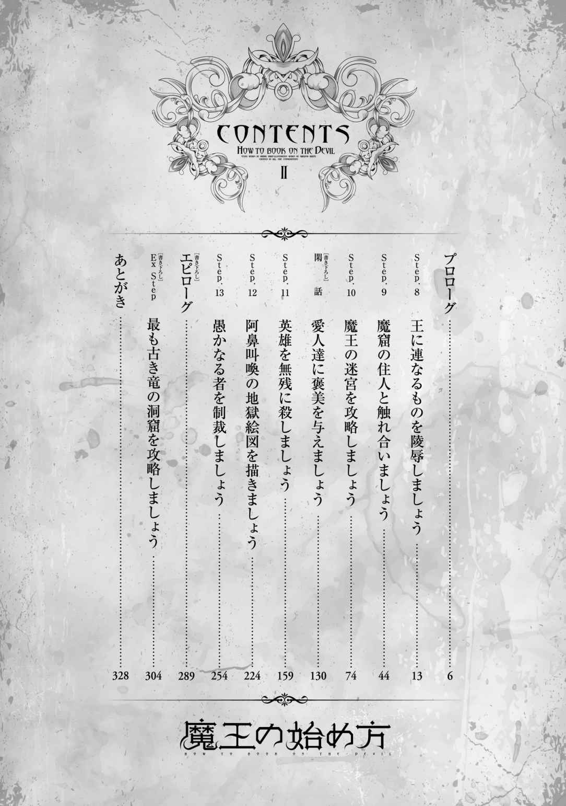
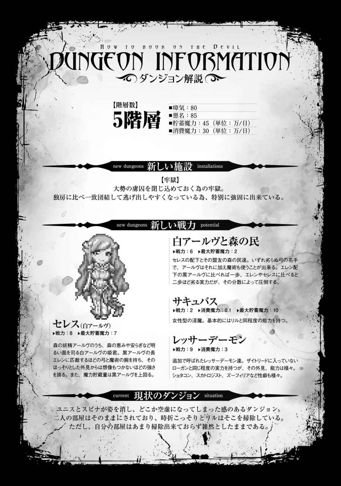
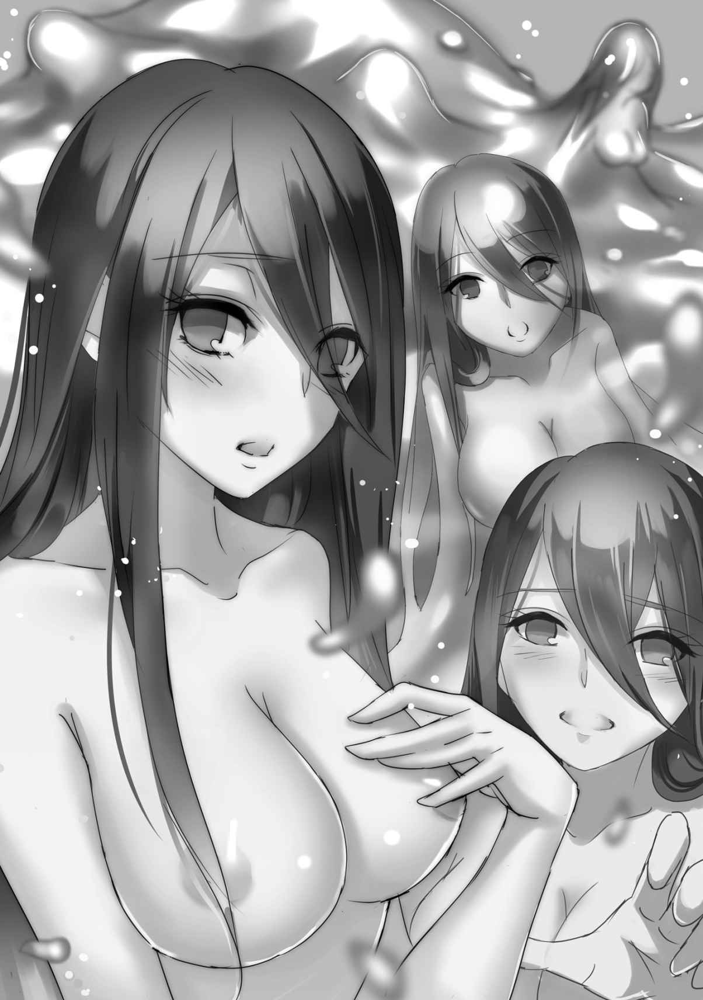

| 魔王の始め方2 魔王の始め方シリーズ (ビギニングノベルズ) | |
| II of魔王の始め方 | |
| 笑うヤカン | |
| (2015) | |
B00ZF5BK18 EBOK
※本作品の全部あるいは一部を無断で複製・転載・配信・送信したり、ホームページ上に転載することを禁止します。本作品の内容を無断で改変、改ざん等行うことも禁止します。また、有償・無償にかかわらず本作品を第三者に譲渡することはできません。
※本作品は電子書籍配信用に再編集しております。

真っ白なレンガが敷き詰められ、規則的な幾何学模様を描かれた広場は、常とは違う熱気に包まれていた。東西南北に続く大通りの交点に作られた広場はフォルムと呼ばれており、背後に城を望むそこは経済と交通の要所であった。
いつもなら幾つも露店が立ち並び人々が行きかうスペースは、今はしんと静まり返っている。しかし、人がいないわけではない。むしろ人数自体は普段に数倍するほどの数が、広場の端に生け垣を作るかのように集まっていた。
彼らが立ち入れぬように柵を設けられた広場の中心にはただ一人、金の髪の男が立っていた。年齢は四、五十といったところだが、目隠し布で顔の大半が覆われている為詳しい事はわからない。
その男を群集は、ある者は好奇の視線で、ある者は嫌悪の表情で、またある者は憐憫の瞳で見つめていた。
「我が名はオウル。魔王、オウルだ」
しかしにわかに響いた声に、その表情は全て恐怖に染められた。
声と共に、琥珀色の髪の男が広場の奥に設えられた台にその姿を現す。
見た目の年齢は二十前後、魔王を名乗るにはどう見ても若い。
「今より前王、カルス八世の処刑を執り行う」
その見た目に似つかわしくない、まるで地の底から響いてくるかのような低い声は、しかし誰の耳にも明瞭に響き渡る。一拍置いて、広場の中心で立ち尽くす初老の男――前王カルスの傍らに、突如として炎が噴き上がった。
螺旋を描きながらまるで神殿の柱のようにそそり立った炎の嵐は、それが現れた時と同じように唐突に消え去る。そして霧散した炎柱がその姿を変えたかのように、醜い赤褐色の悪魔が姿を現した。
四つの腕に狼のような口、山羊の角を持つ屈強な悪魔。魔王オウルの下僕である。
禍々しいねじくれた刃の巨大な斧を手にした悪魔の姿に、群衆は悲鳴を上げ、逃げ出そうとする者さえ現れた。
「静まれ」
だが彼らは、魔王の一言でまるで蛇に睨まれた蛙のように動けなくなる。
「彼の者が処刑されるに足る理由が、三つある」
オウルは腕を突き出して、指を三本立ててみせた。声と同様に、その仕草は台の上にいるというのに群衆の誰もがはっきりと目に映す。
「一つ。我に盾突き、害をなそうとした事」
ゆっくりと大仰に指を折りながら、オウルは続ける。
「二つ。我を侮り、与しやすい相手と見くびった事」
その言葉に、幾人かの者達が息を呑んだ。
まだ辺境の村や街が攻め込まれていた頃、この堅牢な王都にまでは攻め込めまい、と楽観視していた者は多かった。それがあっという間に城を占拠されて、今やこの有り様だ。
「そして、三つ」
殊更にゆっくりと指を折るオウルに、人々は固唾を呑んで続きを待つ。
「お前達に、貧しい暮らしをさせた事だ」
魔王の口から出た意外な言葉に、彼らは一様に呆気にとられて口を開いた。
「我は仇なす者を許さぬ。軽んずる者を許さぬ......だが、恭順する者への報いは忘れぬ。汝らが我に従い、我が民となるならば、我は汝らを護ろう」
その言葉はただの甘言ではなく、裏付けがあった。既に征服された街は、以前とは比べ物にならないほど税が安いという噂が流れ、王都から出ていった者すらいるのだ。
「魔王と名乗るこの身だが、我は、我に従う者をけして見捨てぬ」
魔王がその腕をさっと掲げる。
悪魔が二本の腕で大斧を振り上げ、残りの二本でカルスの身体を押さえつけ、
「我に歯向かう者には、滅びを」
魔王の命で、振り下ろした。首がごろりと刎ね落とされて地面をてんてんと転がり、群衆からは悲鳴が上がる。
「愚かな王を排し我を奉ずる者には、繁栄と安寧を与えよう」
その前王の死体が突然崩れたかと思えば、爪先から毛の一房に至るまでが全て砂金となって地面に広がった。
「我に従う者は手に取るが良い」
悲鳴が、数拍の間を置いて歓声に変わった。
人ひとり分の体積といえば相当な量だ。とはいっても、その場にいる者全員で平等に分けてしまえばほんの僅かな額にしかならない。それでも人々は、先ほどまで王の死骸だったものに殺到した。
津波のように押し寄せ砂金を奪いあう人々を見下ろし、オウルはその場を後にする。
「お師匠様、お疲れさまでした」
オウルが台の奥に張られた天幕に戻ると、影のように女が寄り添い、彼の羽織った外套を脱がせにかかった。漆黒のような髪に、やはり黒いワンピースに身を包んだ女はオウルの弟子、スピナだ。
「ああ。必要な事とはいえ、肩が凝るな」
オウルは彼女に豪奢な作りの外套を任せ、椅子にどかりと座る。格式張った口調も大仰な外套も、権威を感じさせる為のものだ。
「あんなものでどうだ」
「うん、良かったと思うよ」
小柄な少女が元気良く頷くと、赤毛のポニーテールがぽんと跳ねる。ユニスというその少女はとてもそうは見えないが、一国の姫君だった。それ故に、王族としての最低限の振る舞いを知っている。
「まだ迷宮には帰らないの？」
ふわりと宙に浮いて、頭から羊のような角を生やした女が尋ねる。同性すら見惚れるような美貌と抜群のプロポーション。蝙蝠のような翼と先の尖った尻尾が示す通り、人ではない。リルと呼ばれる、オウルの使い魔の淫魔だ。
「ああ。さっさと帰りたいところだが、もう少し待たねばならん」
王城を占拠し国を乗っ取りはしたが、彼らの本拠地はあくまで地下に広がる大迷宮だ。
「あの騒ぎで死人が出そうになったら、鎮圧せねばならん。ユニス、任せたぞ」
「りょーかいっ」
ユニスはぐっと力こぶを作ってみせると、剣を腰に下げて天幕を出る。そんな仕草をしても服の上からでは力こぶがわからないほど腕は細く背もオウルの胸辺りまでしかないが、英雄たる宿命の下に生まれた彼女の強さは天下一品だ。訓練も積んでいない一般人相手なら何百人いようと敵ではない。
「わたし悪魔だからよくわかんないんだけど、あの金色の粒が殺しあうほど大事なもんなの？」
天幕の外に消えていくポニーテールを見やって、リルが首を傾げた。
「そうだな......全部かき集めれば、百人くらいは一生働かずとも食っていける程度の額にはなる、といったところだ」
「へぇ。人間一人をコレに変えれば、百人が生きていけるんだ」
オウルが噛み砕いてやると、リルは感心して金の粒を摘み上げる。
「変えたわけではなく、単に転移の術ですり替えただけです。人を金に変えるような都合のいい術があるわけないでしょう」
能面のように表情を変えぬまま、スピナは呆れ声で言う。
「しかし、それほどの額を民に与えてしまって良かったのですか？」
「構わん。迷宮では金より食料の方が貴重だし、どのみち税としてかえってくる事になる」
「なるほど」
オウルの言葉に、スピナは得心したように頷いた。
「与えた以上の重税を課すのですね」
「そんな事をすればすぐさま反乱が起こるわ。お前の方ももう少し勉強が必要だな」
「......はい」
オウルの背後で声を押し殺してニヤニヤ笑うリルに、スピナの鉄面皮も僅かに怒りに歪む。
「労せず手に入れた泡銭を、使わず貯蓄しておける者はそうはいない。大半はすぐに使い果たしてしまうだろう。だが金というのは、使えばなくなるわけではない」
「なくなる......ものでは、ないのですか？」
貧しい村で生まれ育ったスピナには、貨幣で買い物をするという経験がほとんどない。オウルの言葉も、すぐにはピンと来なかった。
「使った者の手からはなくなるが、それを受け取った商人の下には残るだろう」
「あっ」
だが頭の回転自体は良い娘だ。そこまで言えばオウルの言わんとするところを察した。
「なるほど。税率自体を高くしなくても、取引の頻度を高めれば良いのですね」
「そういう事だ」
出来の良い弟子に、魔王は満足げに頷く。
「そろそろ終わったようだな」
すっかり喧噪の静まった天幕の外を見やれば、折り重なった人の山の上にちょこんと腰かけ、ユニスが笑顔で手を振っていた。
「お前達は先に迷宮に帰っていろ」
オウルは椅子から立ち上がり、天幕を出る。
「あれ、ご主人様は帰らないの？」
「ああ」
リルの言葉に頷き、彼が向かう先は王宮であった。
「最後に一つ仕事が残っている」
そう言って、魔王はいつものように邪悪な笑みを浮かべた。
１
「この、けだものめッ！」
前王カルスの部屋に入るなり、そんな声と共に王妃は短剣を手に突きかかった。
胸となく腹となく滅多刺しにし、ぜえはあと肩で息をしているところにオウルは声をかける。
「気は済んだか？」
その姿には傷はおろか、血の跡すら残っていない。
「化け物......」
王妃は無駄を悟ったのか、からんと短剣を落としてうなだれた。彼女にとっては残念な事だが、今のはオウルお得意の不死性を見せたわけではなく、魔術の初歩の初歩。魔術を齧りでもしていれば引っ掛からないような、簡単な幻術だった。
彼女の後ろには二人、姫が並んで同じようにオウルに憎しみの視線をぶつけていた。王妃......いや、王が死んだ今となっては『元』王妃のオリヴィアと、その娘のパトリシアとプリシラ。いずれ劣らぬ美女、美少女達だった。
三人ともそっくりな金髪碧眼で、まるで一人の女のそれぞれの年代を見ているかのようだ。まだあどけない顔の次女プリシラは、堅く閉じた蕾のよう。手足は細く、胸の膨らみも乏しい。その代わりに、全てを魅了するような少女独特の愛くるしさがあった。
それに対して長女パトリシアは、まさに今開いたばかりの可憐な花だ。身体は丸みを帯び、胸や腰の膨らみは控えめに、しかしはっきりと服を押し上げ、その魅力を声高に主張している。背後にプリシラを庇い、彼女は恐怖に顔を引きつらせながらも、その整った眉を吊り上げて気丈にオウルを睨みつけていた。
プリシラが蕾、パトリシアが花とするならば、オリヴィアは熟れた大輪の花束だ。その豊満な体つきは服をぐっと突き上げ、成熟した雌の色香をこれでもかと言うほど辺りに振り撒いている。それでいて、その二人も子を産んだ身体はどこも弛む事なく、絶妙なプロポーションを備えていた。
「まず、言っておかねばならぬ事がある」
三人の美女は、目の前の光景に思わず息を呑んだ。
「すまなかった。必要な事であったとはいえ、お前達の夫、父親を殺した事、この通り謝罪する」
魔王が、深々と頭を下げ謝ったのだ。
「......謝るくらいなら、お父様を返して！」
「それは出来ぬ。必要な事であったからだ」
悲痛なパトリシアの叫びに、オウルは毅然と答えた。
「この国は腐っていた。いや、今なお腐り果てている。しかし、まだ死んではいない。国を生かす為、王を殺す必要があった」
しかし、とオウルは続ける。
「王は王である以前に、お前達の夫であり、父親である。それ故に、謝罪に来た。殺す必要があったのは王であって、お前達の父親ではない」
その言葉に、プリシラがわっと泣きだした。
「つまりカルスは王として不適任であったと？」
「適任だと思っていたのか？」
逆に問い返され、オリヴィアは押し黙った。魔王が、この国を良くしようなどと考えていない事は明白だ。しかし亡き夫が名君であったかといえば、そうでもない事を彼女は知っていた。
「こちらから問おう。カルスは良き夫であったのか？」
「......勿論です」
じっと威圧的な視線を送るオウルを睨み返し、オリヴィアは気丈に答えた。
「ほう」
オウルは愉快げに声をあげると、無遠慮にオリヴィアの胸を掴む。
それを払い除けようとし、オリヴィアは自分が身体を動かす事も、声を出す事も出来なくなっているのに気が付いた。言うまでもなく、視線を介したオウルの魔術だ。
しかし、そんな事は彼女の後ろで背を見る娘達には伝わらない。
「お母様......？」
されるがままに胸を揉まれる母親に、パトリシアが不安げに声をあげた。
「口では嘘をつく事が出来ても、身体はそうではないようだな」
下品にならない程度に、しかし艶やかに胸元を晒すオリヴィアのドレスに指をかけ、オウルは一気に引き下げる。ぶるんと音のしそうな勢いで、豊かに熟れた二つの果実が揺れ、まろびでた。リルのより大きいかもしれんな、とオウルは感心する。オリヴィアの双丘はドンと張り出した見事な釣鐘型で、その年齢と大きさにもかかわらずほとんど垂れていない。
オウルは両手でそれを掴むと、ぐにぐにと思うままに揉みしだく。
「これほどの見事な身体を持ちながら、カルスにはほとんど相手されていなかったのだろう？ 最後に抱いてもらったのは何年前だ？」
声を出せない状態のオリヴィアではあるが、オウルの言葉に絶句した。確かに、カルスが彼女を床で愛したのはもう随分前、彼女がまだ二十だった頃の話だ。女盛りを迎え、貞淑な彼女は娘達の前で他の男を咥え込む事も出来ず、熟れた身体をひたすらに持て余していた。
「その間、本人は後宮で何人もの美女とお楽しみだ。こんなにも美しい妻を放っておいて......それで、良き夫であったと言えるのか？」
しかしそれは、仕方がない事であるとも言える。王であったカルスにとって最も大事なのは、世継ぎを作る事だ。二回連続で娘を産んだオリヴィアは女腹と断ぜられ、プリシラを産んでからは閨に呼ばれる事さえなくなった。
「なるほど王とはそういったものかもしれぬ。王として相応しかったかどうかは、民草や後の世の歴史家にでも判断を任せれば良い。だが、夫として、父としてはどうだ？ カルスはお前達を慮ってくれたか？ 愛し、顧みてはくれたか？」
図星を指され、パトリシアは俯く。世継ぎの男児を熱望し、そしてついには叶わなかった父は、娘達を顧みる事はほとんどなかった。大国グランディエラや宗教国家ラファニスに囲まれた小国であるフィグリアにとって、世継ぎはそれほど大事な物であったのだ。
しかし、それと父としての愛は別物なのではないだろうか。王と父を分けて話すオウルの前に、パトリシアは初めてそう思った。
「どうだ、オリヴィア？ 久々に男に弄ばれ、求められる感覚は」
オウルの巧みな指使いに、オリヴィアの頬は上気し、身体の芯は男を求めて疼いていた。
「はっきり言ってやろうか。お前達の王、カルスは、王としても、夫としても、父としても......」
「嫌ぁぁぁっ!!」
パトリシアが床の短剣を取り、オウルの腕に振り下ろした。細腕で振った刃は骨を断つ事が出来ずオウルの腕に食い込んで止まるが、今度は幻術ではなくしっかりとオウルの身体に傷をつける。
オウルは内心その気の強さに感心したが、そんな事を噯にも出さず剣を掴んでパトリシアから奪った。すぐに彼の腕の傷が癒えると共に、視線が外れてオリヴィアの身体が自由になる。
しかし、自由を取り戻した彼女が出来たのは、オウルの怒りに触れたパトリシアを抱きしめ、庇う事だけだった。
「許して......許してください」
目で睨まれただけで動く事も喋る事も出来なくなるという体験は、オリヴィアの心にしっかりと恐怖を植えつけていた。彼女は震えながらも、しっかりとパトリシアを抱きしめ許しを乞う。
「いいだろう。娘達二人は態度によっては見逃してやっても良い。......ただし、それ相応の誠意を見せてもらおうか」
我ながら陳腐な台詞だと内心ため息をつきつつオウルがそう言うと、母娘はびくりと身体を震わせた。その言葉の意味を理解したのだ。三人の中でプリシラだけが意図を掴めず、涙を浮かべながらもきょとんとしている。
「......わかりました、オウル......様......では、わたくしの寝室へ......」
「その必要はない」
オウルはオリヴィアの腕をぐいと掴み、部屋の奥のベッドへと彼女の身体を引っ張り、押し倒した。
「お前達はそこで見ていろ。『動く事も喋る事も禁ずる』」
オウルは後ろの娘達を振り返り、言葉に呪力を込めてそう命じた。王宮の中で大切に育てられ、魔術など使うどころかかけられる事さえなかった二人の姫君は、自らの母に視線を投げたままその一言で石のように動けなくなった。
「いや......いやぁ！」
「さて、それは本心か？」
娘の前で犯されるという恐怖に顔を引きつらせ、暴れるオリヴィアの身体を押さえ込んでオウルは彼女のスカートを捲り上げた。
「......お前、これは......」
下着に隠された秘所に指を這わせ、オウルは思わず素で呆れた声をあげた。先ほどの愛撫で多少なりと湿り気を帯びていればそれをあげつらって責めようと思っていた。しかし、そんなオウルの予想を裏切り、そこは既にしとどに濡れそぼり、ぐっしょりと下着に染みを作っていたのだ。
「幾らなんでもこれは濡れすぎだろう......まあいい。これだけ濡れておれば愛撫も要らんな」
いやいやをするように首を振るオリヴィアの身体を押さえつけながら、オウルは下着を剥ぎ取ると自分の一物を取り出し、一気に突き入れた。
「ああぁっ」
オリヴィアは高く声をあげた。その声色に多分に快楽が混じっている事を感じ取り、オウルは呆れを更に強くする。最初は恐怖と畏怖を与え、徐々に快楽を感じさせて恭順させる。以前捕らえた冒険者のシャルに使ったのと似たような方法だが、いきなり快楽を感じられるのは流石に想定外だった。
オリヴィア一人ならそれでも構わないが、他にも二人堕とさねばならないのだからこれは少し都合が悪い。抽送を繰り返しながら、オウルは急いで思考を巡らせた。
「どうだ、久しぶりの男の味は。お前の身体は随分喜んでいるようだが？」
「いやぁ、だめぇ......」
弱々しく拒否しながらも、その表情は既に快楽に融け、膣口はオウルのペニスを逃すまいとするようにきゅうきゅうと締め上げている。呆れた淫乱さだが、オウルはそれを利用する事にした。
「俺の物になるのなら......何度でもこれをくれてやる。お前は美しい。このような美しい女を抱かぬなど愚か者のする事だ」
一瞬、弾みで毎日と言いかけてオウルは言い換えた。本当に毎日求めて来かねないと思ったからだ。
「う、うぅ......駄目、駄目です......そんな......わたくしは、夫を裏切る事など......」
身を悶えさせ、オリヴィアはそう答えた。ここまで感じながらまだそんな事を言う辺りは大したものだが、その夫の敵に愛人になれと言われ迷う辺りはもう大分参っている証拠でもある。
「異な事を言う。先に裏切ったのはカルスではないのか？」
オウルはぐりぐりとオリヴィアの中を蹂躙しながら言った。打てば響く鐘のように、オリヴィアは高い声をあげ、ぐにぐにと膣内を蠢かせてピットリとオウルの物に吸い付いた。或いはリルのそれに匹敵するほどの淫猥な身体に、オウルは思わず達しそうになるのを堪える。
下手をするとこれはある意味、今までで一番厄介な女かもしれん。オウルは背筋を這う快楽をやり過ごしながら、気を入れ直した。
「これほどの素晴らしい身体を持つお前に女の喜びを与えもせず、他の女にかまけていたカルスの方が先に、お前を裏切ったのではないのか？」
「で、でもそれは、王としての責務で......」
オウルが用意した逃げ道にまんまと逃げ込むオリヴィアに、
「俺ならば、何人女を産もうが全く気にせぬがな」
オウルはこの上なく優しい口調で丁寧に止めを刺した。
「え......？」
「この身が死を知らぬものである事はその手で確認しただろう。世継ぎを作る必要などない。お前はその美しい身を我に捧げ、女であろうが男であろうが好きなだけ孕むがいい。お前の二人の娘達にも、俺が女の喜びを教えてやろう。そして子を孕ませ、この国の姫として王子としてカルスの血を遺してやろう。さすれば、お前は夫を裏切る事にはならぬ。むしろ王家の血を絶やさず次代に繋いだものとして称えられる事になるだろう」
悪魔の言葉は、今まであらゆる意味で女として認められなかったオリヴィアの心の隙間にするりと入り込み、震わせた。
オウルは言の葉にとびきりの毒を織り交ぜ、囁く。
「俺は後宮の妾が産んだカルスの子を王宮に置いておく気はない。血を継ぐのは、お前の子だけだ」
それは素晴らしく甘美な毒だった。誰もが羨む美しさを備えて生まれ、若くして王の正妻として迎えられた。謙虚に上品に振る舞いつつも、その奥には常に自分の女としての価値を意識していた。
それが、ただ二度、男児を産めなかったというだけで彼女は全てを否定され、後宮に押し込められ、輝かしいはずの二十代は退屈な日々に塗りつぶされた。男を産めぬ女腹と嘲られ、夫から女と見られる事もない灰色の生活。彼女の自尊心は、粉々になるまで叩き折られた。
愛する娘を恨んだ事は一度もない。彼女の憎しみは、男しか認めぬ男達に向けられていた。そんなに男が好きならば、男同士まぐわっていればいいのだ、と思った事も一度や二度ではない。そんな否定され続けてきた彼女の人生を、オウルは全て肯定してくれた。
「はい......オウル様。どうぞわたくしに、オウル様のお子をたくさん孕ませてくださいませ」
涙を流し、オリヴィアは差し出された毒を呷った。
２
「さあパティ、いらっしゃい。一緒にオウル様のご寵愛をいただきましょう」
いやいやと首を振るパトリシアの気持ちとは裏腹に、その脚は一歩ずつベッドへと近づいていく。明らかに正気を失った瞳で、いつものように優しい声をかける母親に彼女は恐怖した。
顔一杯に恐怖を浮かべて近づく彼女を見守りながら、オウルは次の手を模索する。魔術や催眠術で母親同様にセックス漬けにするのは簡単だが、それはあまりにも芸がない。
「さあ、あなたのここでオウル様のあの逞しいペニスを受け止めて差し上げるのよ。最初は痛いかもしれないけれど、すぐにとっても気持ちよくなれるわ」
オリヴィアはパトリシアを後ろから抱きしめるようにすると、その両脚をぐっと割り開いた。シンプルな可愛らしい下着がオウルの目の前に露わになり、パトリシアの顔が引きつる。
その様子を見て、オウルは一つ思いついた。このオリヴィアの娘であれば、出来るかもしれない。
「俺に抱かれるのは嫌か」
「あ......ったり前でしょ！」
声が出せるようになっている事に気付き、パトリシアは怒鳴る。
「ならば、賭けをしようか」
オウルは魔術で蝋燭を取り寄せると、パチンと指を弾いた。ポ、と火の灯った燭台をサイドテーブルに置く。
「この蝋燭は四半刻（約三十分）で燃え尽きる。俺は指以外使わぬし、お前の秘部にも一切触れん。この条件で、蝋燭が燃え尽きるまでにお前が俺に、自分から『犯してくれ』と頼めば俺の勝ち。耐え切れば、お前の勝ちだ」
「......いいわ。乗ってあげる」
パトリシアは毅然として答えた。この男に指だけとはいえ嬲られるのは虫唾が走るほど嫌だが、賭けに乗らなければ無理やり犯されるだけだ。この男は随分指に自信があるようだが、どんなに快楽を与えられようと自分からそんな事を言うなんて考えられない。
「ただし、条件があるわ。私が勝ったら、妹のプリシラとお母様も解放なさい。それに、二人にかけた妖しげな魔法も解くの。いいわね」
「よかろう。オリヴィア、お前はそこに控えておけ」
鷹揚に頷き、オウルは告げた。オリヴィアは渋々といった様子で、ベッドから降りる。
「予言してやろう。お前は自ら、俺の物をそこに咥え込む事になる」
「そんなのなるわけ......随分、自信があるのね？ 何か秘訣でもあるの？」
一方的に否定しかけ、パトリシアは会話を続けやすいように質問した。蝋燭に火は既についている。なるべく会話を引き延ばせば、それだけオウルがパトリシアを嬲る時間を減らせると気付いたのだ。
「秘訣と言うほどのものでもない。こう見えて俺は見た目より齢を重ねている。年の功という奴だ」
「エロ爺ってわけね」
パトリシアがそう言うと、爺扱いが嫌だったのか、オウルは少し顔をしかめた。
「実際は幾つなの？」
「さて、いちいち年齢を数えたりしてはいないからな......だが、八十は越えていたはずだ」
「はっ......八十!?」
パトリシアは絶句した。爺と言ったのは嫌味で、精々三、四十程度と思っていたのだ。若く見える、の限度を超えている。
「なにそれ。不老不死ってわけ？」
「まあ、そうは言っても、無限に生きられるというわけではないが。時を戻しての若返りには限界がある。時間を重ねるほど、必要な魔力は指数的に増大するからな」
「何年くらい生きられるの？」
パトリシアは僅かな希望を抱いて質問した。オウルの治世が後十数年で終わるなら、この国の未来にも希望が持てる。
「一流の魔術師で数十年。俺でも、もって後数百年といったところだろうな。千年には届くまい」
返ってきた答えにガックリとして、パトリシアはパタパタと手で顔を扇いだ。傍で蝋燭が燃えているせいだろうか、さっきから妙に暑い。
「さて、そろそろ始めるとするか」
たっぷり話し込んでいるうちに、蝋燭の長さは半分ほどになっていた。これで勝ちは間違いない。パトリシアは勝利を確信した。後は、絶対に声を出さなければいいだけだ。敗北条件もそうだが、喘ぐ声も聞かせたくなどない。
オウルの指がまるでナイフのようにパトリシアの服を切り裂く。それは彼女の肌には毛ほどの傷もつけず、あっという間にパトリシアを生まれたままの姿にした。
「なっ......」
「指しか使っていないぞ」
オウルは人差し指をピンと立て、パトリシアに見せた。そしてその指をそのまま、彼女の慎ましい膨らみの先端に押し当てる。
「ひぁっ!!」
服を容易く切り裂いた指先だ。傷つけられるのでは、と意識を集中したところに身体を貫いた思わぬ感覚に、パトリシアは高く声をあげた。
「な、何......？」
未知の感覚に、パトリシアは脅え戸惑う。
「もう随分興奮しているようだな。こんなに張り詰めているぞ」
オウルはゆっくりと彼女の乳首を摘んだ。
「ふぁぁぁっ!!」
それだけでパトリシアは身体を反らし、震わせた。いつの間にか全身が熱く火照り、彼女は荒く息をする。
「何を、したの......」
「何も。お前の身体の感度がいいだけだろう。流石はオリヴィアの子だな」
「お母様を悪く......ひぁぁぁっ!!」
柳眉を吊り上げ言い返そうとするも、パトリシアは快楽に翻弄され怒りもままならない。
「悪く言ってなどいない。むしろ誉めているのだ。処女でこれほど乱れられる者もそうはいまい。流石は王家に連なる血だ」
「ふぁっ、だ、だめぇ、両方......し、ちゃぁぁあ」
両手でパトリシアの胸を摘み、くるくると愛撫するオウルの指に彼女の理性は崩れ始めた。
「どうだ？ 俺の物が欲しくなってきたのではないか？」
「誰、が......ふぁぁぁぁっ！」
気丈に言い返そうとしながらも、パトリシアの視線は突き出されたオウルの一物に釘付けになっていた。赤黒いそれはオリヴィアの愛液を纏っててらてらと光り、どくどくと脈打つ様はこの上なく淫靡だった。
グロテスクでありながらも、逞しく力強さを感じさせるその肉槍に、パトリシアは思わずごくりと唾を飲み込む。
既に彼女の股間はしとどに濡れそぼり、受け入れる態勢を整えている。しかし、彼女は鉄の精神力で言葉を抑えていた。
「試しに言ってみたらどうだ？ 今なら言っても、お前の負けとはしないし、実際に犯したりもしない。練習だ。実際負けを認めたい時に、言えなかったら困るだろう？ 『犯してください』と言ってみろ」
「お......!?」
快楽に思考を乱され、ぼんやりとしていたパトリシアは命令されて反射的に言われた通りにしてしまった。
しかし、「お」から先が言えない事に気付き、驚愕する。
「......！ ......っ！」
何度言おうとしても、言葉が出ない。パトリシアは躍起になって言おうとした。しかし、どれだけ試しても言葉が出てこない。
「ふむ......なかなか強情な娘だな」
ちらりと蝋燭に目をやり、オウルは呟いた。蝋燭はもはやほとんど残っていない。このまま行けば、パトリシアの勝ちだ。......それに気付き、彼女は愕然とした。
勝ち？ このまま？ こんな、飢えた身体のまま？
全身は熱く火照り、今すぐ犯して欲しい、と訴えていた。あまりの快楽に気が狂いそうだ。オウルはすっと手を引き、彼女を愛撫するのをやめた。すると、飢えは更にひどいものになる。まるで全身が痒くて仕方ないかのように疼いて、我慢が出来ない。
「......！」
それなのに、『犯して』という言葉はパトリシアの口からはどうしても出なかった。犯して欲しい。滅茶苦茶に突いて欲しい。出せぬ声は、彼女の欲求を弥が上にも煽った。
「時間か。賭けはどうやら、お前の勝ちのようだな」
蝋燭の炎は消えた。しかし、そんなものもはやどうでも良かった。情欲の炎は燃え盛り、パトリシアはもうオウルに犯される事しか考えられない。なのに、相変わらず声は出ない。彼女はついに、オウルに抱きつくと、その剛直を己が身に収めた。
「ああっ......！」
歓喜の声が、彼女の喉を通り過ぎる。痒いところにようやく手が届いたかのような、素晴らしい気分だった。彼女の純潔の証は股間から滲み出ていたが、痛みよりも遥かに快楽の方が強い。
「賭けに勝ったのだから、お前は犯される必要などないのだぞ？」
「いいっ、もう、そんなのいい......どうでもっ！」
パトリシアはオウルの首に手を回し、ひたすらに腰を振った。一度抽送を繰り返す度に脳髄が痺れ、甘美な快楽が稲妻のように身体を走る。彼女は生まれて初めて味わう快楽をただただ無心で貪った。
「やはりオリヴィアの娘だな。媚薬も必要なかったかもしれん」
蝋燭に視線を走らせ、オウルが呟く。しかしそれもパトリシアの耳には届いていなかった。
「ああっ、ああああっ、駄目、駄目ぇぇぇぇ────っ！」
パトリシアが絶頂に達し、身体を震わせるのに合わせてオウルも彼女の中に精を放つ。本人が『どうでもいい』と言ったのだから、当然先ほどの約束は反故だ。
さて最後の一人はどうするか、とオウルが視線を移すと、そこには母に秘所を弄られ、すっかり蕩けた表情のプリシラの姿があった。
「オウル様、準備は万事整えておきました」
妖艶に笑うオリヴィアを見て、オウルは更に呆れを強くした。とんだ淫乱母娘だ。
３
しかしどうしたものか、とオウルは思案する。
オリヴィアもパトリシアもあまりにあっさりと堕ち、この上プリシラまでも上げ膳据え膳ではいまいち興が削がれる。少し悩んだ結果、オウルはプリシラの頭にぽんと手を置くと、呪を紡いだ。
途端、先ほどまで潤み、淫欲の色に塗れていた瞳が理性の光を取り戻す。
「えっ......？」
自分に何が起きたのか理解が追いついていないのだろう。
目を瞬かせるプリシラを、オウルは組み敷いた。
オウルが使ったのは、精神を平静な状態に戻す魔術だ。本来であれば恐慌に陥ったものを冷静にしたり怒り狂った相手をなだめたりするのに使うものだが、それに少し手を加えてある。
「ひっ......や、やめてください......っ！」
プリシラはぐっとオウルの身体を腕で押すが、その抵抗は弱々しい。といっても抵抗する意思がないわけではなく、単純に腕力が乏しいのだろうと感じられた。何の不自由もなく育てられた姫君は、根本的に何かに反抗するという事が今までなかったのだ。
まあこれはこれでいいか、とオウルはプリシラの両腕を纏め、彼女の頭の上辺りに押さえつける。彼女の腕は力を込めれば簡単に折れてしまうのではないかと心配になるほど華奢で、魔力を使うまでもなく魔術師の細腕でも軽々と拘束出来た。まるで小さな鳥を掌の中で潰さないように気をつけるような心持ちで、オウルはプリシラの両脚を割り開く。
「いやぁ......！」
そして悲鳴のような声をあげる彼女の中心に、己自身を容赦なく突き立てた。
「――――っ！」
全身を貫く衝撃に、プリシラは双眸を見開いて息を止める。
彼女は破瓜と同時に、達していた。
精神は魔術で無理やり平静に戻されていても、肉体までもが変化したわけではない。彼女の身体は未だこれ以上ないほどに昂ったままであった。
姉が目の前で犯されるのを見ながら、母にじっくりと身体を嬲られたのだ。その上、蝋燭から気化した媚薬は彼女も吸い込んでいる。まだ身体の小さいプリシラに、媚薬はパトリシア以上に効果を発揮していた。
「な、なに......？」
プリシラは戸惑って目を瞬かせる。
肉体と精神というものは密接不可分で、互いに影響を与えあうものだ。精神が落ち着けば、本来であれば肉体の方もそれに従う。
だがオウルの使った平静の魔術は、肉体の反応自体は残しておきながらも、彼女の自我だけを掬い上げて冷静さを保たせていた。
ただでさえ生まれて初めて味わう絶頂の上、自分の意志や感覚とはまるで無関係に身体が反応する。プリシラはパニックに陥る事すら出来ず、分かたれてしまった精神と肉体に困惑した。
「おっと、強すぎたか。では、これではどうだ？」
「ん、あ、あ、あぁ、ふぁっ......！」
オウルがゆっくりと抽送を始めると、プリシラの喉から勝手に高く甘く声が出る。
初めて男を受け入れるそこには痛みもあったが、それを上回る感覚が一突きされる度に腹の奥にずんと響いた。
「やぁっ、いやあぁっ！」
自分が自分でなくなっていくような感覚に、プリシラは赤子のように首を振る。
「嫌だと？」
オウルはそれを聞き咎めるように、彼女の胸元に指を這わせた。
プリシラの身体はまだ未成熟で、なだらかな曲線を描く丘は母オリヴィアや姉パトリシアとは比ぶべくもない。
「ではこれは何だ」
だがその先端の蕾は、まだ色付いてもいないというのに艶めかしく屹立していた。
「わ、わかりま......あぁっ！」
ほとんど肌の色と見分けのつかないそれをオウルが指で摘むと、プリシラはびくりと身体を震わせる。
「さっきまで生娘だったくせに、いやらしい身体だ」
瑞々しい彼女の肌は手に吸い付いてくるかのようで、媚薬によって火照った身体はしっとりと汗に濡れていた。まだささやかな膨らみを掌で覆うように揉めば、肉がついていないが故の柔らかさで楽しませてくれる。
「わかるか？ 俺に犯され、お前の身体が悦んでいるのが」
「そんな......あっ、あ、あっ！」
ピンと立った乳首を弾きついばんでやれば、若く幼いプリシラの身体は素直にそれに反応した。
「胸だけではないぞ。ここもだ」
「あぁんっ」
オウルが腰を突き入れると、打てば響く鐘のように嬌声が漏れる。それがひどく媚びた音色をしている事に、プリシラは愕然とした。
身体は幾度もの絶頂によって敏感になっているが、心は平静なせいでいつも以上に周りの事が明瞭に感じられる。
オウルが抽送を繰り返す度に大量に溢れかえる愛液がぴちゃぴちゃと音を立て、自分の膣口がオウルの逸物を浅ましく締め付けるのも、プリシラは漏らさず認識した。
「やぁっ、い、やあぁぁっ！」
プリシラは現実を認めないとでもいうようにぎゅっと目を閉じて首を振ろうとするが、オウルの手が胸を撫でる度、その舌先が乳首を吸う度、剛直に奥を突かれる度に身体は歓喜に震えて、動かす事もままならない。
いっそ快楽に身を任せ善がり狂ってしまいたかったが、オウルの魔術の効果でそれすらも叶わなかった。
「さあ、お前の中にも子種を仕込んでやる」
宣言と共に、膣内で彼のモノが膨れ上がる。プリシラは本能的に、それを受け入れれば自分がもう戻れない事を悟った。
「いや、いやぁっ！ やめて......！ ゆるして、ください......！」
目尻に涙を浮かべ、プリシラは懇願する。まだ幼い彼女でも、それが意味する事はわかっていた。
「異な事を言うな」
オウルは軽く首を傾げる。
「嫌ならば、離れればいいだろう？」
そして、己の腰にがっしりと絡められたプリシラの両脚へ視線を向けた。
彼女の身体の方は、とっくに快楽に堕ちていたのだ。
「いくぞ」
「いやっ......！」
無慈悲な宣告と共に、どくどくと注ぎ込まれる精液にプリシラは悲鳴をあげる。今の彼女には、子宮に叩きつけられるような勢いで吐き出される精の一滴一滴さえ感じられるかのようだった。その快感と絶望に、彼女の心はあっという間に魔術の限界点を突破する。
何かが破れるような感覚と共に、プリシラの無防備な心を感情の奔流が襲った。魔術が今まで堰き止めていたものが、一気に押し寄せてきたのだ。
それはプリシラにとって、二度目の破瓜と呼んでも良いかもしれなかった。それも一度目とは比べ物にならない衝撃だ。嵐に遭った小船のように、まだ幼いプリシラの精神は感情の渦にあっという間に飲み込まれ、バラバラにされてしまう。
彼女は己の心を守る為、反射的に目の前のものにしがみついた。それはしっかりとプリシラの身体を抱きしめて、じんわりとした温かさを伝える。
「おとう......さま......？」
彼女の脳裏に浮かんだのは、父王カルスの姿であった。生まれてからまともに言葉を交わした事など一度もなく、ましてや抱き上げてもらった事などあるはずもない。ぼんやりと焦点を結び始めた彼女の視界に映ったのは、当然父ではなく、オウルの姿だった。
いつの間にか彼女の身体は抱え上げられ、オウルの膝の上に座るような形で腕の中にいる。勿論プリシラの中心には彼の肉槍が奥深くまで突き刺さっていて、互いの舌は激しく絡まりたっぷりと唾液を交換していたが、不思議ともう嫌な気はしなかった。
むしろ身体の奥底から満たされるような気分になって、プリシラは彼の背に回した腕に力を込めて、より熱心に舌を吸う。もっと満たして欲しい。
「ああぁんっ......」
そんな想いに応えるように吐き出された白濁の液が自分の胎の中を埋めていくのを感じて、プリシラは高く鳴く。幼い肢体に見合わぬ、甘く淫らな雌の声だった。
４
その声に、どうやら上手くいったようだ、とオウルは内心で呟く。肉体と精神は密接不可分で、それ故に一部を切り取って持ってきただけであれば、もう片方が無事なら再生しうる。
自我の一部を表面化させ、それを壊れる寸前で修正して改竄する。詩的な言い方をするなら、一度真っ白にした後自分の色で染め上げたといったところか。
失敗したら失敗したで構わないという程度の思いつきだったが、存外上手くいくものだ。
もっともこんな方法を取れるのはプリシラが魔術的にも精神的にも耐性がゼロと言っていいほど無防備で幼かったからだ。
実験以上の意味はないかもしれない。
王族とはいえ、魔術師でもなければ精神を鍛えるような訓練もしていない。
プリシラに限らずオリヴィアもパトリシアも、熟練の魔術師であるオウルにとっては赤子も同然だ。政治的な意味はあるから良いのだが、洗脳の訓練としてはあまり益はなかった、とオウルは思った。
「オウル様......わたくしにも、もっとお情けをくださいませ......」
そんな事を考えていると、オリヴィアがすり寄るようにしてその爆乳を押し付けてきた。
「私にもっ！ 私にも、オウル様の、ここに欲しい......」
かと思えば、パトリシアがオウルの手を取って自分の股間へと導く。
「リシィも、オウルさまの赤ちゃんの素で、いっぱいにして欲しいです」
未だ繋がったままのプリシラまでもが、ぎゅっと抱きついてそんな事を言い出した。
「よかろう。腰が抜けるまで存分に可愛がってやる」
「あんっ」
オウルは左右の二人を抱き寄せて、プリシラをずんと突き上げた。そっくりな姿の女達が、同時に嬌声をあげる。
オリヴィアの背から回した腕でそのたわわに実った果実を鷲掴みにすると、元王妃はオウルにしなだれかかってその胸板に舌を這わせる。手に収まりきらないほどたっぷりとした乳房は人の身体の一部だとは思えないほどに柔らかく、指に力を込めれば淫猥にその形を歪める。
折れそうなほどに細い腰を抱きパトリシアを引き寄せると、彼女はオウルの首に抱きつくようにして熱心に唇を重ねてきた。その舌の柔らかさを堪能しながら胸に手を伸ばせば、オリヴィアとは対照的な若く張りのある肉体が、あくまで柔らかさを返しつつもぐっと押し返すような弾力で掌を楽しませてくれた。
プリシラはオウルの太ももに手をついて腰を浮かせると、ついさっきまで処女だったとは思えないほどの腰使いで彼の剛直を絞り上げる。入り口は剛直を引きちぎらんばかりに狭くキツいというのに、奥はまるで包み込むような柔らかさがあった。
三人の美女の連携の取れた愛撫は、母娘姉妹を同時に相手にしているという征服感も相まってオウルをして危うくあっという間に達させそうになるほどだった。
「ふふ。遠慮なく出していただいて構いませんのに」
オリヴィアはそれを敏感に察して、オウルの脚の間へと手を滑らせる。そしてプリシラとの結合部へと指を伸ばしたかと思えば、たっぷりと精の詰まった袋をやわやわと揉んだ。
「この逞しい子種汁、わたくし達に全部注いでくださいましね」
勝手な事を、と言い返そうとするも、唇はパトリシアにぴったりと塞がれて、ねっとりと舌を絡められているのでそれも叶わない。
それどころかプリシラが膝の上にのってぴったりとくっついているせいで身体を動かすことさえ満足に出来ない。
いつの間にやらオウルの身体は、柔らかな肉の檻に完全に拘束されている事に気が付いた。
それが意図したものであるかどうかはわからない。しかし、悪い手ではなかった。
オウルの身体はダンジョンを離れていて、無限とさえ言えるほどの魔力は供給されない。使えるのはオウルの体内にある自前の力だけだ。
――面白い。魔王は彼女達から、御しやすい取るに足らない相手という評価を取り下げた。
三人でオウルの精を搾り取ろうとするその様は、まるで人の姿をした淫魔のようだ。
......だが。
「ふ、あぁっ！」
「あ、あぁっ！」
「きゃぁんっ！」
右手でオリヴィアの乳房を握りつぶすかのように力を加えながら指先で乳首を摘み、左手をパトリシアの尻の後ろから忍ばせて陰核を撫ぜ、腰を巧みに動かしてプリシラの弱いところを擦り上げれば、いとも容易く三人の女は同時に気をやった。
オウルはまさにその淫魔と毎夜のごとく交わり、満足させているのだ。彼の性技もまた、既に人の範疇にはなかった。
「そう急かさずとも、順番に精をくれてやる。パトリシア、プリシラ、これを清めろ」
そそり勃つ肉棒を誇示するようにオウルが立ち上がると、二人の娘達は若干戸惑いつつもそこに顔を寄せる。オウル自身の精液と二人の破瓜の血、そして三人分の愛液で汚れたペニスを躊躇なく舐め清めた。戸惑いは単純に、どうしたらいいのかわからないという技術的な問題だった。
「そう、先のその部分を、舌の先で舐めて差し上げるのよ」
そこをオリヴィアが細かくフォローに回る。二人の美少女の小さな唇が赤黒い男根を食むように挟み込んで、膨らんだ先端の根元のくびれを丁寧に舌でなぞり、竿を撫で、鈴口をちゅうと吸う。
「ん......」
先端から中に僅かに残っていた精を吸い取って、パトリシアが嬉しそうに鼻息を漏らす。
「ぅ、ん......」
横からプリシラが必死に舌を伸ばして、付け根の袋のところから丁寧に舐め清めていく。
そうするうちに、跪いて奉仕する二人の美少女の股から白濁した愛液がとろりと滴り落ちた。
「これが欲しいか？」
「はい......」
「ほしいです！」
オウルの問いに、パトリシアは気恥ずかしげに、プリシラは真正直に答える。
「良いだろう。共にくれてやる」
姉妹を横向きで互いに抱きあうようにしてベッドの上に寝かせ、脚だけを大きく開かせる。真っ白な細い足が交差して、二輪の可憐な花が現れた。
「まずはプリシラからだ」
二人の脚を抱えるようにしながら幼い花弁に突き入れると、プリシラは高く嬌声をあげ、パトリシアの眉が切なげに寄せられる。
「羨んでいる暇はないぞ」
数度抽送を繰り返した後、オウルはすぐにパトリシアの中に潜り込ませた。
姉妹はぎゅっと抱きあい、互いにその快楽に耐える。胸の先端が擦れあってパトリシアの乳房が歪み、うっとりとした視線が交差して、自然、二人は一人の男に犯されながらその舌を絡めあう。
愛らしい姉妹が唾液を交換しあう様はどこか背徳的な美しさがあった。
ある種幻想的なその光景の傍ら、二つの若い淫裂が深々と肉棒を咥え込んではしたなく蜜を溢れさせる様は淫靡そのものだ。魔王をして、そのギャップには堪えがたいと思わせるものがあった。
「出すぞ......！」
オウルは腰を引き抜くと、わだかまったものを二人の口の間にぶちまける。迸る白濁が二人の髪や頬を汚し、白い肌を一層白く染め上げた。
それを二人は嫌がることもなく受け止めると、射精したばかりの肉塊を丁寧に舐め清める。そして、互いに舌を伸ばしあって互いの顔についた精までも啜り上げた。
「二人とも、よく頑張ったわね」
女神のように慈悲深い表情で、オリヴィアは娘達の頭を撫でる。
「ですがオウル様、こちらの口では孕みませんわ。――こちらに出していただけますね？」
それを一瞬で淫婦のものへと変じさせて、オリヴィアは己の中心を割り開いた。ピンク色の肉が浅ましく汁を垂らしながらひくひくと蠢く様は、まるで躾のなっていない犬のようだ。
「いいだろう。纏めて相手してやる」
折り重なるようにして、母娘姉妹はベッドの上に身を横たえる。下から大、中、小と真っ白な尻が三つ並び、縦に積みあがったヴァギナの列がオウルの目の前にすえられた。
「なかなかいい眺めだ」
「こんな、恥ずかしい......」
そう言いながら、オリヴィアの声は期待に満ち満ちている。オウルは彼女の主として期待に応えてやるべく、乱暴に彼女の中に侵入した。
「ああっ」
漏れ出たのは苦痛ではなく、歓喜の声だ。既にシーツに小さな水溜まりを作るほど濡れそぼった彼女のそこは何の抵抗もなくオウルのモノを飲み込んで、柔らかく包み込む。
それに比べて次女プリシラの膣内は、狭くキツく奥まで入れるだけで無理やり割り開くような感覚がある。
長女パトリシアの膣はちょうどその中間だ。ちょうどいい具合で締め付けてくるが、それは入れる時の話。引き抜こうと腰を引くと、プリシラよりも強いのではないかと思うほどの強さで締め付けてくる。
「オウル様ぁ、もっと、もっと奥にお情けを......わたくしに赤子を孕ませてください......っ！」
「オウル、様......！ 私にも、精液頂戴っ！ お母様と、同じ歳で、赤ちゃん、孕みたいのぉぉっ！」
「オウルさまぁ、リシィにも、たくさん赤ちゃんの素、ください......お母様やお姉様と一緒に、赤ちゃん生ませてくださいぃっ！」
血の繋がった三人の女達は、競いあうように甘く鳴いてオウルの精を求めた。
「ああ。存分に俺の子を孕め。娘を産んだら、その娘もまた孕ませてやろう。そうして、カルスの血は永遠にこの地を満たすのだ」
「ああっ......素敵」
オリヴィアはほうっと息をつき、うっとりして呟いた。オウルは褒美に、パトリシアの中から引き抜いてオリヴィアに突き入れてやる。
「ああっ、オウル様ぁ、素敵ですぅ......わたくしに、女としての悦びを......あんっ、もっとぉ、教えてくださいませ......っ」
豊かな尻をふるふると震わせてオリヴィアが喘ぎ、
「あん、オウル様、抜いちゃ駄目ぇ......お父様の血を残すなら、私を孕ませてくれないと......お母様では、血は残らないですよ？」
拗ねたようにパトリシアが切なげな声を漏らし、
「オウルさま、リシィもぉ......お姉様より四つも若いから、四人は多く赤ちゃん孕んでみせますぅ。だから、もっともっと中にくださいぃ」
プリシラが煽情的な言葉を用いてオウルを誘う。
「案ぜずとも、全員しっかり孕ませてやる」
そして、オウルの言葉に揃って嬌声をあげた。
三つ並んだ穴を、オウルは思うがままに犯し、精を注ぎ込んでいく。そんなただの肉壺のような扱いを、もはや王家の女達は喜んで受け入れるまでになっていた。
手持ちの魔力で体力を回復しながら、溢れかえる精液が尻を伝って繋がるほどに注ぎ込み、昼過ぎから始めた情交は日が暮れ、更に空が白み始める頃になってようやく終わった。
「何とか......なった、か」
ぐったりとして気を失ったオリヴィアの中から逸物を引き抜き、既に寝息を立てているパトリシアとプリシラの間に身体を横たえる。
幸せそうに眠る女達を見て、オウルはひとまず息を吐いた。十月十日後、彼女達は元気な赤子を生む事だろう。子を孕んだとなれば、彼女らを立ててオウルを倒そうとする勢力も手出しは出来ない。
カルスとオウル、両方の血を引く子供が出来てしまえば、オウルの王としての地位も盤石なものになる。その頃には反乱の芽も粗方摘めるだろう。
人間達を統治するのもなかなか面倒なものだ。ダンジョン内の魔物の方がずっと扱いが楽だ。温かく光に溢れた王宮で、魔王は冷たく暗い地下を思った。
その後、朝帰りに怒った本物の淫魔に再び搾り取られるのは、また別の話である。
０
「力むと魔力を使いすぎるのは悪い癖ね、アイン」
笑いを噛み殺すような声が、どこからか響いた。
「冷静に、落ち着いて。あなたならきっと出来るから」
それは随分と懐かしい声だ。
「今までしてきた努力を思い出すの。努力は、きっとあなたを裏切らない」
落ち着いたしっとりとした声は、遠く、遠く、心地良く響く。
「魔術師にとって一番大切な事はね、アイン。信じる事よ」
その声を聞いたのはもう何十年も前の事だというのに、まるで毎日聞いているような錯覚があった。
「今まで努力してきた自分を」
理知的に輝く、涼やかな茶の瞳。
「自分を生かしてくれた全てを」
長く伸びた、琥珀色の髪。
「あなたを取り巻く皆を、信じるの」
それは忘れようもない、師の顔だった。
「ずっと忘れないでね」
その落ち着いた声の色も。
すらりとした体つきも。
抱きしめた肌の温もりも。
ふわりと香る甘い匂いも。
彼女の何もかもを、鮮明に憶えている。
忘れるはずがなかった。
「わたしはずっと、あなたの傍にいるから」
「ラズ......」
オウルは、ぎゅっと抱きついてくる師の名を呼んだ。
「愛してるわ、オウル......」
目を閉じ、ラズは唇を近づける。
オウルは彼女の首にそっと腕を回して抱き寄せる。
その首が、ごろりと音を立てて地面に落ちた。
首は赤く血を撒き散らしながら床を転がり、オウルをぎろりと睨みつける。
「どうして」
恐ろしいほどの静寂の中、声は低く低く、響き渡った。
「うらぎりもの」
１
がばっと上半身を起こそうとして、オウルは額を何かに思い切りぶつけた。
「い......ったぁ......」
痛みと衝撃でくらくらとする頭を押さえつつ横を見やると、リルが同じように頭を押さえて蹲っている。
「......何をしている」
「それはこっちの台詞よ！」
目に涙を浮かべ、リルは怒鳴った。
「もう、後ちょっとだったのにっ」
「何がだ」
低い声で問いただせば、リルはさっと視線を逸らす。ぶつかった時の感覚から考えて、相当近くに顔があったはずだ。
「魂を抜き出すような真似は契約で禁じているから出来んぞ」
「ふつーにキスしようとしただけですっ！」
オウルが念を押すと、あっさりとリルは口を滑らせる。
何の為に、と問う事は出来なかった。
オウルとて、リルが害意を隠し持っているなどとは思ってはいない。疑う事と可能性を考慮する事は全く別だ。
だがそれでも、まだリルが寝込みを襲ってオウルを害そうとしたという方が理解しやすい事だった。
――淫魔が人間に惚れ、純粋な恋慕の情から口付けをしようとしたなどというよりは。
「もう、何かうなされてるから起こしてあげようと思っただけなのに......」
口に出さずともその辺りは察したのだろう。リルは不満げにその形の良い唇を尖らせる。
「うなされていた？ ......何か言っていたか」
「ん......その......」
身体を起こしながらオウルが尋ねると、リルは言いよどんだ。
「はっきり言え」
「ラズ、って、言ってた」
リルの答えに、オウルはため息をついた。
......もう、何十年も前の話だ。とっくの昔に吹っ切ったつもりだったが、心の奥底にはまだ残っているようだった。
「師の、名前だ。......俺が殺した」
なんでもない事のように言おうとする試みは、成功しなかった。
リルは何と返したら良いかわからず押し黙り、二人の間を気まずい沈黙が包み込む。
「......あー、これ何？」
リルは露骨に話題を変え、部屋にあった木彫りの人形を指差した。ゴーレムというには繊細で、大きさもオウルと同じくらいしかない。おまけに服が着せられ、琥珀色のカツラまで被っている。
「ああ......それか。形代だ」
「カタシロ？」
聞きなれない単語に目を瞬かせるリルに、「見ていろ」と言ってオウルは形代に手をかざす。すると、木の肌は見る間に赤みがかった人の肌の色になり、瑞々しい皮膚の感触を手に入れる。
大まかな凹凸しかなかった顔にも知性を示す瞳の輝きが生まれ、口や鼻が出来る。人形はあっという間にオウルそっくりの人間になった。
「何これ、全然見分けがつかない！」
目の前で見ていたリルにも、どちらが本物のオウルか見分ける事は出来なかった。着ている服の違いで辛うじて判別出来る程度だ。
「この前不覚にも囚われて、俺が外に出るのは危険だとわかった。そこで、これを作った」
「原理は本物の肉体を動かしているのと大差ない。違いは、この形代はいざとなれば捨てて本来の肉体に戻れる事だ」
二人のオウルが口々に喋る。
「凄いね、これでオウル二人分の仕事が出来るって事？」
純粋に感心するリルに、二人のオウルは首を横に振る。
「目の前でなら両方動かせるが、二人分思考したり、魔術を使ったり出来るわけでもない。あくまで偵察用だ。離れれば本来の身体は動かせなくなる」
「へー......そうなんだ」
リルは形代の方のオウルを無遠慮にぺたぺたと触りながら少し残念そうに呟いた。
「それより、わざわざ起こしに来たのは何か用があったのではないのか？」
「あ、そうだった」
オウルの言葉にリルは本来の目的を思い出し、彼に言った。
「何か、妙な事になってるんだよねえ」
オウルの迷宮には、入り口が幾つもある。そのうち三分の一ほどは第二階層に直接下りる『縦穴』で、残りは第一階層に降りる入り口だ。
そのうち最も人里に近い入り口に、それは出来ていた。
「何だ、これは......」
オウルは思わず額に手を当て、呻くように呟いた。
彼の目の前にあるのは木で出来た簡素な門だ。
扉はなく、見張りもいないので誰でも通れる代わりに、大きな看板がついていた。そこには大きな文字でこう書かれている。
『オウルタウンへようこそ！』
「まあ、タウンって言うよりは村って規模だよね」
「そういう問題じゃない」
ローブと帽子で角や翼を隠し、人間のふりをしたリルにオウルは首をゆるゆると振った。
「いつの間にこんなもの出来たんだ」
「そう昔の事じゃないさ。つい最近だよ」
オウルの呟きに答えたのは、リルではなく若い男の声だった。
「ようこそ、『魔王の街』オウルタウンへ。歓迎するぜ、お二人さん。見たとこ、魔術師二人組かい？ 珍しい取り合わせだな」
茶色い髪の男は人好きのする笑みを浮かべて近寄ってきながらそう言った。身のこなしからしておそらく冒険者、それも盗賊と呼ばれる類だろう。革鎧を身につけ、短剣を腰にさしている。
「お前は何だ？」
見るからに胡散臭いその男を睨みながら、オウルは問うた。
「おっと、こいつは失礼。俺はキース、あんた達みたいなこの町に初めて来る人達にちょっとした案内をしてるんだ。何せ、魔王のお膝元。物騒な場所だろ？ これでもここじゃ、俺はちょいとばかり顔が知れてるんだ。どうだい、安くしとくよ」
オウルとリルはお互いに顔を見合わせた。信用出来そうにはないが、かといってオウル達を騙して身包みを剥ごう、などというほど悪辣な人間でもなさそうだ。オウルはそう判断した。
「いいだろう。よろしく頼む」
オウルは懐から銀貨を一枚取り出すと、ピンと指で弾いた。放物線を描いて飛ぶそれを、キースは器用に片手でキャッチして口笛を吹く。
「銀貨たぁ、気前がいいね。名前を聞いてもいいかい？」
「俺はテオ。こっちはラズだ」
オウルは偽名を名乗った。その口調に澱みはなく、リルは一瞬彼が嘘をついた事にも気付かなかったほどだったが、オウルは内心舌打ちしていた。自分の偽名くらいは用意があったが、リルの分までは考えておらず咄嗟に出たのがその名だったのだ。
「オーケー、テオにラズ。じゃあ、案内するからついてきな」
キースは人懐っこく言うと、門を潜り町の中に入っていく。
「ねぇ、ラズって......」
「お前の名だ。ボロを出すなよ」
小声で尋ねるリルに、オウルはそれ以上の追及を避けるようにはっきり言った。
リルはそれを察し、口を閉ざす。
オウルが殺したという師匠。咄嗟に名前が出るような相手。それはどんな人で、オウルにとってどんな相手だったのか。そんな事を思いながら、リルは彼の背中を追いかけた。
「この街は普通の街とはちょっと違ってな、一般の民家って奴は一つもないんだ」
大通りを歩きながら、キースはそう説明した。
「定住してる人間はそんなにいない。まあ、ざっと二、三十人ってトコか？ ほとんどが商人で、冒険者相手に何らかの商売をしてる。この街は、魔王の魔窟に挑む冒険者の為の街なのさ」
道を行きかう者達は、皆武装した冒険者達だ。そんな中、一応ローブを着て魔術師然とはしているものの、明らかに旅装ではないオウル達は少し浮いていた。
「入り口近くのデカい建物が宿。金のない奴には無料で馬小屋を貸し出してる、慈悲深いマーサ婆さんの店だ。その向かいはオックスの酒場。最高の飲んだくれどもが集まる愉快な店だ。あんたも仲間が欲しけりゃ覗いてみるといい。メシもここか、後はそこらへんに出てる屋台だな」
「馬小屋？」
リルが反復すると、キースは肩をすくめた。
「ああ、食料なんかを仕入れる商隊が馬車で来るんだが、週に一度。それ以外は、冒険者で馬なんか持ってる奴は滅多にいないからな。だからケチや貧乏人達は空いてる馬小屋の藁の中で寝てるのさ」
体力はほとんど回復しないが、とりあえず雨露は凌げる、とキースは言う。
「宿の隣にあんのは娼館。ちょっと値は張るが、この街唯一の娯楽だ。......ま、あんたにゃ必要ないかもしれんがね」
キースはリルの、ローブを下から押し上げる豊かな双丘を横目で見て下卑た笑みを浮かべた。
「そっちの通りは武器屋と防具屋、それに鍛冶屋が並んでる。ちょっとした刃こぼれや、簡単な修理なら鍛冶屋でやってくれる。完全に壊れちまったんなら、武器屋や防具屋だな」
「オーダーメイドの武具なんかは作ってはくれないのか？」
オウルの問いに、キースはおやと眉を上げた。
「今んトコ、そういうのはやってないな。修理だけでも手が回ってないんだ。テオ、あんた魔術師みたいだが、剣も使うのかい？」
「いや、そういうわけではない」
心なしか表情を明るくしたオウルに、リルは笑いを堪えた。
彼はこの街を自分の迷宮と比べているのだ。オウルの迷宮で働くドヴェルグ達は、オーダーメイドで武具を作ってくれる。
「ふうん？ まあいいや。反対側の通りは、魔術屋に教会だ。魔術が入り用な時は魔術屋に、怪我人、死人は教会に」
「蘇生魔術を使える者がいるのか」
オウルは驚いて言った。死者の蘇生は不可能ではない。が、非常に高度な魔術だ。
「あー、俺も魔術使えるわけじゃないから詳しくないんだけどよ、何でもここは魔力がすげー濃厚だから大きな魔術が使いやすいらしいぜ。それなりの僧侶が数人がかりで儀式を行えば、心臓を一突きにされたくらいの死者なら蘇らせることも出来るって話だ。もっとぐちゃぐちゃになってりゃ勿論無理だし、そもそもべらぼうに高いのに、失敗しても金は返さないとくらぁ」
なるほど、とオウルは納得する。どうやら龍脈の魔力が迷宮の外に多少漏れ出ているようだ。それなら、それなりの腕があれば簡単な蘇生魔術でも使えるだろう。
「魔術屋って何？」
リルには魔術を売る、という概念がいまいち良くわからない。
「ん、自分が魔術師だから使った事ないのか？ 剣に祝福の呪いをかけたり、簡単な魔術が篭もった呪具を売ったり......まあ、俺みたいに学のない冒険者がお世話になるところだ」
キースは大通りの奥へと歩を進め、その先の大きな建物を指差した。
「そんであれが、ノーム百貨店。この街の元締めさ」
２
「元締め？」
「百貨店？」
オウルとリルはそれぞれに反復した。キースはしたりといった顔で頷く。
「元々、ここにはあの店だけがあったんだ。それが冒険者を相手にするうちにだんだん規模が大きくなって、別の店が出来て、やがて街になった。ま、俺もその様子を見てたわけじゃないから受け売りだがね」
ノーム百貨店は、この街の中で最も小さな建物だった。二階建てで、入り口には『激安』『回復薬ありマス』『ノーム百貨店』『黄色い耳栓入荷！』などと広告が乱れ飛んでいる。とても、元締めと言われるような人間が住んでいるようには見えなかった。
「迷宮で倒した怪物どもの牙だの爪だの毛皮だのは、あの百貨店に持っていくと金に換えてくれるんだ。何でも、魔法薬や武具なんかの材料になるんだとさ。しかも適正な価格で、即金だ。お陰で俺達は他の街に戻ったりせず、ここで暮らしていけるってわけさ」
ふむ、と興味深げにオウルは唸った。
龍脈の魔力は迷宮中を流れ、満ち満ちている。自然、その中の空気を吸った生き物は外の生き物よりも濃い魔力を得る。そして、その濃い魔力を持つ生き物をより強い生き物が食べ、その死骸を虫やネズミが食べ、それをまた弱い生き物が食べ......と、魔力は蓄積していく。
そんな魔力が体中に満ちている魔物であれば、さぞ高品質な素材になるだろう。冒険者を引き入れる為にわざわざ財宝を用意したオウルだったが、その必要が半ばなくなっている事に初めて気付き驚いた。
「ちなみに買い取りは武器屋や防具屋じゃやってくれない。この街で迷宮内の物を売りたきゃここに売るしかない。日用品や雑貨なんかもここで買える」
どうやら、この小さな店の主はこの街を経済的に取り仕切っているらしい。どうにも主体性のない街ではあるが、それでも上手く回るのは冒険者の支援に特化しているからだろう。
「では、その元締めとやらに一言挨拶してくるか」
「おう。じゃーな、俺はいつも酒場で飲んでるから、迷宮に潜るんなら声かけてくれよ。いい仲間を紹介するぜ」
ひらひらと手を振って酒場に向かうキースを見送って、オウル達は百貨店の中に足を踏み入れた。
店内は思っていた以上に狭く、他に客はいない。
「いらっしゃいませー！」
所狭しと並べられた商品の奥、カウンターで笑顔を輝かせているのは赤毛を側頭部で一つに纏めた、背の低い少女だった。シャルと同じくらいの身長と幼い顔立ちに似合わぬ大きな胸をたゆんと揺らし、彼女はオウルに愛想良く笑いかける。
元締めと聞いて、なんとなく恰幅のいい豪商を思い浮かべていたオウルは肩透かしを食らった。
「店主はいるか？」
「傷薬に血止め、毒消しにロープ、ランタン油も切れたらどうぞ！ 剣、槍、鎧も扱います、何でも売ってるノーム百貨店へようこそ！ あたしが店主のノーラ・ムルクディス。どうぞノームとお呼びください」
ノームと名乗った少女は、嫌な顔一つせず流れるような口調で語った。
「お前が、この街を作り上げたという『元締め』なのか？」
「あたしが作ったと言うと、語弊がありますね。あたしはここで商売をしていただけ。街を作ったのは、街のみんなの努力です」
愛想良くノームは語る。
「こんなところでよく店を出そうと思ったな」
「ここは魔王オウル様のお膝元ですからね。何の心配もしちゃいませんでしたよ」
ノームは胸を張って自信満々に答えた。
「冒険者さん達が魔王退治を夢見て迷宮に潜り、財宝や素材を持ち帰る。持ち帰った素材で、商品を作る。作った商品を、冒険者さんが財宝で買う。そしたらこっちは、商品を作る手間だけで財宝を手に入れられるって寸法です」
「なるほど。しかし、魔王が倒されたらどうする気だ？」
「その時は、大人しく店を畳んで他に行きますよ。でも、そんな事にはならないでしょう、魔王様？」
意地悪く聞くオウルに、にっこり笑ってノームは答えた。
「な、何言ってんの!?」
「愚か者、そんな反応ではそうだと言っているようなものであろうが」
わかりやすく慌てるリルに、オウルは嘆息した。
「まあ良い。別段、隠す気もない。それで、俺が何を言いたいかわかるか、商人よ？」
オウルが尋ねると、ノームは人好きのする笑みを浮かべて「はい」と答えた。
「あたしがここで商売すれば、オウル様の邪魔になる。冒険者を助けてやるんですからね。それをオウル様が黙って見逃す義理はない。だったら、黙って見逃す意味を作らなきゃあいけませんよね」
じゃらりと音を立てて、ノームは金貨の詰まった袋を取り出した。
「売り上げの一割です。どうぞお納めください」
「お前の店が繁盛するほど、こちらの懐も暖まる、か。まあ当然の話だな」
オウルはそれを受け取り、「それで？」と促した。彼女の瞳に、ほんの一瞬動揺が走るのを彼は見逃さない。が、売り上げの一割で同意するほど彼は生易しくもなかった。
「......オウル様は美女がお好きとか」
ノームはカウンターの上に身を乗せると、スカートの両端を摘んで持ち上げた。
「どうぞ、この身を自由にしてくださって構いません」
膝立ちになってそうすると、ちょうどオウルの目の高さに彼女の下穿きが来る。「ほう」と感心したような声をあげ、オウルはそこに指を這わせた。じゅくり、と湿った感触が指に伝わる。
「準備がいいな」
「恐れ入ります」
勿論、何もせずに濡れるわけなどない。ノームは彼が魔王である事を看破し、オウル達が入ってきた時から、この展開も予期して準備していたのだ。
「オウル、この子処女だよ」
「なかなか気前がいいな」
リルの指摘にオウルが言うと、ノームは胸を弄られながらもニッコリと微笑む。
「誠心誠意をモットーとしておりますので」
魔王などと呼ばれるオウルを前に、処女の身でこの対応。その度胸と頭の良さをオウルは気に入った。
「だが、駄目だな」
故に、オウルはそう答えた。流石にその反応は予期していなかったのか、ノームは驚いたように大きく目を見開く。
「生憎とこの通り、女には困っていない。確かにお前は美人だが、その程度で対価になると思ってもらっては困る」
オウルはリルを抱き寄せ、見せ付けるようにその胸を掴んだ。リルの豊満な膨らみはローブ越しでもはっきりとその存在を主張し、いやらしく突き上げられている。ノームも見事な双丘を備えてはいたが、淫魔の淫らな肉体には敵うべくもなかった。
「では、いかがいたしましょうか」
ノームはじっとオウルを見つめる。
「『真実の瞳』だな」
ノームは瞬き一つしない。オウルは続けた。
「お前の持つ『ギフト』だ。全ての虚偽を暴き、その持つ本質を明らかにする。なるほどその齢で商人として大成するわけだ」
「そんなに大したもんじゃございませんよ」
ノームはため息一つつき、カウンターを降りた。
「あたしのはただの『鑑定眼』。ある意味真実の瞳よりレアかもしれませんね。見たものの価値、値段がわかるってだけの、中途半端なギフトです。あなた様には金貨十枚の値段がついておりますよ。人は普通、無料なものですけどね。その身体が形代だっていうなら値段が見える」
「......まあそういう事にしておいてやろう。だが、迷宮で見つかる物の効果には気付いているのだろう？」
ノームの背筋を、冷たい物が走った。いつの間にか彼女の頭をオウルが掴んでいる。
迷宮の中にオウルが置いた魔法の武具には、仕掛けがしてある。通常のものより遥かに強力な代わりに、オウルに対して使おうとすれば持ち主の動きを止め、魔術を封じるという呪いだ。
「返答には気をつけろ。『お前以外にそれを知っている者はいるか？』」
呪力を込めたオウルの声が冷たく響いた。嘘を言っても気に入らない返答をしても、殺される。そうノームは直感した。
「知っているのは、あたしだけ、です......」
「何故だ？」
「オウル様に死なれては、あたしの商売上がったりですから」
既に声を震わせる事さえなく、ノームはそう答えた。
「......いいだろう」
オウルはノームの頭から手を離した。一気に緊張が抜け、今更彼女の全身からどっと汗が噴出した。
「いい度胸だ、気に入った。無理やりにも我が物としたいところだが......」
「残念ながらオウル様、あたしは商人です。仮にこの魂を奪われようと、利にならないことは一切しません」
ノームは真っ直ぐにオウルを見返し、はっきりそう言った。
「で、あろうな」
利以外で言う事を聞かせるのは不可能だろう事を、オウルは悟った。呪いで無理やり縛ったり、精神を壊せば操り人形には出来るかもしれないが、そんな事をすれば彼女の聡さと度胸は失われる。
「ここでの商売を認めよう。それから、呪の篭もった品を卸してやる。代金は要らん、そのまま売りに出せば良い」
「こちらの対価はいかに？」
「売り上げの五分を上納金とする。ただし、これは街全体での話だ。それと、お前の扱う商品を迷宮にも卸してもらおう。これは対価を支払う。それでどうだ」
「承りました。その条件で問題ありません」
ノームは即答した。深く考えていないのではなく、一瞬で計算を済ませるだけの頭の回転を持っているのだろうと思わせる、落ち着いた対応だ。
「それで」
先ほど渡された金貨の袋を弄びながら、オウルは尋ねた。
「お前自身は金貨何枚だ？」
３
ノーム百貨店は一階が店、二階がノームの居住スペースになっている。彼女は扉に『CLOSED』の札をかけると、オウルを二階へといざなった。
「それでは、ご奉仕させていただきますね」
ベッドの上で跪き、彼女は恭しくオウルの物を取り出し、舌を這わせる。
結局、オウルは金でノームを買う事にした。悪魔よりも強かな彼女に対しては、それが最も安定した契約方法であると判断したからだ。
彼女の値段は週金貨十枚。それなりの額だが、フィグリア王国や、直轄地からの税収を得ているオウルにとっては大した値段ではない。
それだけの金額でノームはオウルに味方をし、主だった冒険者の動向を知らせたり、彼にとって不利になる情報を握りつぶしたりしてくれる。ついでに身体も好きにしていい、というわけで、オウルは彼女を試してみる事にした。
ノームとしても、自信満々に出した『商品』が素気なく断られた事で傷ついたプライドをどうにか回復した形だ。
「手慣れているな。処女だったのではないのか？」
「当店の商品は、全て一級品ですから」
ノームはにこりと微笑んで、オウルの物を胸で挟み込んだ。傍らから瓶を取り出し、とろりとした液体を塗りつける。
「それは何だ？」
「ローションです。こうすると......ほら、いかがですか？」
にゅるにゅるとぬめる胸の谷間で、ノームはオウルの一物を擦り上げた。膣内とも、口内とも違う柔らかな刺激がオウルのそれを更にいきり立たせる。
「凄い、流石魔王様、御立派ですね......」
ほうっと頬を朱に染め、ノームは口で先端を咥え込む。そのまま、胸をぎゅっと手で寄せてしごきながら、鈴口に舌を這わせ、吸い上げる。
「く......上手いな」
腰に走る快感にオウルは呻く。ノームは瞳を笑みの形に細め、じゅぽじゅぽと音を立てて口で奉仕する。同時に、そのたわわな胸でオウルのペニスをぎゅうぎゅうと挟み、交互にしごくように動かした。
「く......出すぞ、飲め......！」
「ん、んんっ......！ んぐ、ん......っ」
ごくりごくりと喉を鳴らし、奥に次から次へと放たれる精をノームは飲み込んでいく。
「んんん......んぶぅっ」
しかし、そのあまりの量についに飲みきれず、ごほごほと咳き込んで彼女は口の端から白濁の液を垂らした。口から離されてもなおも吹き出す精液が、彼女の顔や髪にかかり、白く穢していく。
「も、申しわけございません......すごい量......それに、こんなに濃いなんて」
顔についた精液を掬い取って口に含み、ノームは恍惚とそう呟いた。しかし、それが演技である事をオウルは見抜いている。彼の目的は、その余裕を砕いてやる事だ。そして、ノームの方もそれを狙っている。
「では入れるぞ。足を広げろ」
「はい......」
ノームは恥ずかしげに、しかし惜しげもなく脚を開いた。うっすらとした繁みの奥に隠されたそこは色素の沈着もなく、綺麗な桃色を覗かせていた。
「処女というのは本当のようだな。いいのか？」
リルの見立てが間違うわけもないが、態度や技巧はとてもそうとは思えない。
「ええ。あたしを一番高く買って下さる方に捧げるつもりでしたから......」
ノームは指でそこを広げ、オウルに見せ付けた。
「どうぞ、奪ってください」
頷き、オウルは彼女の膣口に先端を当てて馴染ませると、腰を抱いて一気に半分ほど突き入れた。
「......っ」
流石に痛みがあるのか、ノームは顔をしかめる。
「大丈夫です、どうぞあたしの身体をお楽しみください」
しかし気丈に笑顔を浮かべてみせると、脚をオウルの腰に回して自ら彼を奥へと誘った。
小柄な彼女の身体はぎゅうぎゅうとオウルの物を締め上げ、それを千切らんばかりに狭くきつい。しかしそれが逆に、抽送を始めると凄まじい快楽を彼に与えた。
「いかがですか？」
そのキツさは単に処女であった事と、身体の小ささに由来するものではなかった。ノームは腹にぐっと力を入れて中の圧力を自在に操る。処女の身でありながら、努力によって鍛えられた性技がそこにはあった。
「くっ、これは......！」
ぐにぐにと動き、オウルに精を吐かせようと締め付けるその膣内に、オウルは呻いた。リルとの性交に慣れていなければ、既にイカされてしまっていた事だろう。体内の欲求が、彼女の中に精を吐き出したいと大声で訴えかけるが、オウルはそれを黙殺する。
ノームを屈服させるには、魔術も媚薬も使わずに彼女を絶頂に至らしめなければならない。魔術や媚薬のような物を使えば、すぐにノームはそれに気付く。それでは、彼女を屈服させる事が出来ない。逆にノームは、オウルの身体を絶頂へと導く事で、優位を確保しようと全力を尽くしていた。
これは言うなれば、情交を通じた戦いである。
「ああっ、オウル様ぁ......」
奥を突いてやると、ノームは気持ちよさそうに首を振り、善がる。しかしこれも擬態だ。技巧はともかく、彼女の身体はついさっきまで処女だった物だ。中の性感はほとんど発達しておらず、どれだけ突いてもさほどの快楽は感じていない。
ならば、とオウルは淫核を責めに転じる。彼女の膣内を擦り上げながら、愛液をローション代わりに指先に塗りこんで、包皮の上からやんわりと指を這わせる。
「んぅっ......」
これはそれなりの効果を上げたようで、ノームは初めて素の声を漏らした。
「ああ、それいいです、もっと、して、ください......」
とはいえそれを曖にも出さず、更に艶めかしくオウルを誘う。オウルは淫核を責めながら、もう一方の手で彼女の胸を揉みしだいた。
「ああん、気持ちいいです、オウル様......ああ、素敵ぃ」
ノームは胸を突き出し悶えた。感じている事は間違いないが、まだまだ余裕がある。その間にも彼女の膣はオウルの一物をずっぷりと咥え込み、きゅうきゅうと締め上げる。
快感を堪えながら、オウルは思考を巡らせた。処女でありながらこの技巧、慣れ方はおかしい。が、リルの見立てでもオウルの見た限りでも、彼女が処女である事は疑いようがない。膣内の発達度合いでも、それは見て取れる。
しかし、一人で練習していただけにしては慣れすぎているのも確かだった。
これは男を知り尽くし、何度も相手にした事がある女の態度だ。オウルはそこまで考えて、正解へと辿りついた。
「ひあっ!!」
突然、ノームが高い声をあげる。演技ではありえない、突発的な嬌声だ。そして、その尻の穴にはオウルの指がずっぷりと埋まっていた。
「あ、あ......そ、そこは......」
「直腸の掃除もしっかり済ませているとは流石一流の商人、準備がいいな。それどころか、馴らしもせずに指が二本も入ったぞ」
「オ、オウル様、そこは......駄目です、違います」
ノームの声は明らかに上ずり、余裕をなくしていた。
「何が違うんだ？ お前のここはこんなに喜んでいるぞ」
ぐりっと指をひねりながら腰を突き入れてやると、それだけで彼女はガクガクと身体を震わせ、びゅうびゅうと潮を吹いた。随分馴らされたのだろう、尻穴はオウルの指にぴったりと吸い付き、離すまいとするかのように咥え込む。
「処女のまま尻を開発されたか。どこの誰がやったかしらんが、随分趣味のいい話だな」
「あああ、お許しください......」
顔を真っ赤にし、ノームはいやいやをするように首を振った。自分の意思ではなく、誰か他人によってそう仕込まれた事は明白だった。
恐らく、どこかの好き者の貴族にでも飼われ、逃げ出すか恩赦かで自由の身を手に入れ、商人として一人生きてきたのだろう。
オウルは指を引き抜き、彼女の身体を抱えると四つん這いにさせた。
「だが、手垢の付いた場所を攻めるのも興が削がれる。こっちの良さを俺が教え込んでやろう」
「ああっ、駄目っ、駄目ぇぇっ！」
そのまま、後ろからオウルは突き入れた。尻でするのなら、自然と体位はこの形になる。突き入れられる場所は違えど、その記憶を思い出したのかノームは快楽に震えた。
一度快楽に火がついた身体は、そう簡単には鎮まらない。むしろ、一度弄られた事で彼女の身体は快楽を欲し、淫らに悶えた。
「行くぞ......！」
「ああああっ！ オウル、様ぁぁぁっ!!」
逃げるように離れようとするノームの腰をぐっと両手で掴み、オウルは奥に精を放つ。形代の身体の中の、魔力で作った擬似精液だ。子を孕む事はないが、その分凄まじい量を出す事が出来る。
「こ、こんなっ......！ 凄い、熱いのが......っ！ どくどく、入って......っ！」
「まだまだだっ！」
オウルは精を放ちながら、ずんずんと腰を突き入れる。
「あーっ！ あぁ──っ!! すごっ、よぉ......っ！ ......なか、ぁ、突かれ......っ！ イっ......ちゃ、ぁ......！ おま......こ、で、イっちゃううううううっ!!」
ノームは再びびゅうっと潮を吹き、身体を反らして気をやった。彼女が絶頂に達した後もオウルの精液は噴出をやめず、彼女の腹がぽっこりと膨れ上がるほどに胎内へと注ぎ込んだ。
「あ......はぁぁ......」
オウルが一物を引き抜くと、涎と涙に塗れ、呆けた顔でノームはベッドにどさりと横たわった。ごぽ、と音を立て、その股間からどろりとした白濁液が滴り、シーツを穢す。
「次は、膣内だけでイけるようにしてやる。金を払い続ける限り、お前は俺の物だ。いいな？」
「は......い......」
掠れた声で、辛うじてノームは答える。オウルはそれを見て満足げに頷いた。
この攻防に、直接的な意味はさほどない。勝とうが負けようが取引は成立するし、お互いに情欲に溺れて相手の言いなりになるような玉でもない。
しかしお互いに、意地をかけた勝負であったと、オウルは認識していた。或いはそれはどこか似た境遇で暮らしてきた相手に対する対抗心のようなものだったのかもしれない。利を求め、慎重に、狡猾に立ち回るという点においてノームとオウルは良く似ていた。
「では、また来る。代金等の支払いはその時だ」
「畏まりました」
身支度を整え、背負い袋を背負ったオウルを、ノームは店の入り口で見送った。
「オウルー、準備出来たよー」
そこに、同じように支度を整えたリルが大通りを駆け寄ってくる。
「最後の契約もしっかり守ってくださいね」
「最後の契約？」
きょとんとするリルと共に、オウルも首を傾げる。
「次は膣内だけでイけるように仕込んでくださると約束したじゃないですか」
にこやかに答えるノームに、リルのこめかみが引きつった。
「オウル......？ 次って何かしら？ 女には困ってないって大見得切ったのはどこの誰だったっけー？」
「......ただの取引の一種だ」
「......はあ。別にいいけどね。全くもう、このエロ爺」
「何百年も平気で生きる悪魔に爺と言われる筋合いはないな」
「残念でした、わたしは少なくともオウルよりは下だからね」
喧々諤々と言いあう二人を見て、ふとノームは違和感を覚えた。彼女のギフト『真実の瞳』は既にオウルの実年齢が八十三である事も、リルが悪魔である事も見抜いている。しかし、そこに何か一瞬、違和感を覚えたのだ。
思わず目をゴシゴシと擦ると、オウルに不審げに見られたのでノームはもう一つの気になっていた事を問う。
「そういえば、その荷物ですが、どこかへ旅にいかれるんですか？」
言われるままに用意した旅装を指して、ノームは尋ねた。
「ああ」
オウルは頷き、杖を構え直した。背負い袋を背に、杖を構えたその姿は冒険者の若い魔術師にしか見えない。
「ちょっと、魔王を倒しに行ってくる」
オウルはニヤリと笑みを見せ、そう言った。
１
「腕のいいシーフを紹介してもらいたい」
酒場で酒を飲んでいたキースに、オウルはそう切り出した。
「よし来た！ それなら俺だ、俺を連れてきな」
嬉しそうにそう答え、キースは立ち上がろうとした。
「いや、悪いが出来れば女がいい」
オウルがそう答えると、キースは椅子に腰を下ろし直し、彼を不審げに見た。
「女が？ そりゃまた、何でだ」
キースは言外に、妙な事をするんじゃないだろうな、と剣呑な雰囲気を匂わせ低い声で問う。
「実はな」
オウルは声を潜め、背後のリルを示した。
「あの女は人間じゃない。俺の召喚した淫魔だ」
リルは帽子を軽く持ち上げ、ちらりとキースに角を見せる。
「こうして俺が傍で制御している分にはいいが、目を離したり俺が気絶したら周囲の男を襲うかもしれん。快楽と引き換えにカラカラのミイラになってもいいなら、ついてきてもいいが」
「い、いや、遠慮しとく」
キースは顔を引きつらせ、そう答えた。
「しかしそうなると......そうだな」
冒険者に女の比率はそう高くない。全くいないわけではないが、比率は一対九といったところだろうか。
「あー、アイツがいたか。おい、ファロ！」
酒場の中を見回していたキースの目が、一箇所で止まる。その先には、小さな少女が口一杯に黒パンを頬張っていた。
「ふぁひー？」
もぐもぐとパンを咀嚼しながら、少女は行儀悪く返事をする。「ちょっと来い」と手招きするキースに、彼女はテーブルの上のチーズを二、三欠けら手に取りながら近寄ってきた。
「コイツはファロ。ちっこいなりだが、腕は保証するぜ」
近くで見ると、その少女はかなり小さかった。小柄なユニスやシャルと比べてもなお小さい。マリーと同じか、少し高い程度だろうか。
ふわふわした金に近い茶色の髪を短く切り、大きな口でチーズを齧るその様子は子供のように見えるが、注意深くオウルを観察する緑の瞳には子供にはない慎重さと知性を感じさせるものがあった。
「クドゥクか。珍しいな」
オウルが言うと、ファロは驚いたように目を開いて、チーズをごくんと嚥下した。
「へぇ、知ってるんだ。こっちの連中はみんな、あたし達の事は半分野郎なんて失礼な呼び方しやがるけどね」
クドゥク、通称ハーフリングと呼ばれる彼らは、西方に住む小人族だ。草原の妖精などと言われる事もあるが、アールヴやドヴェルグと違ってあまりその出自はハッキリしていない。小柄なぶん力は弱いが、それを補って余りあるほど身軽で器用な手先を持ち、目や耳も良い。
保守的で平和を好む彼らは滅多に故郷の村を出ず、他の種族と付きあうというような事も少ない。存在自体ほとんど知られず、人間の子供と間違われる事も多い。ただ、推薦されるくらいだから、腕は確かなのだろうとオウルは踏んだ。
「こっちのテオが腕の良い女シーフを探してるんだとよ」
「ふぅーん......」
ファロはじろじろと無遠慮にオウルを眺め回した。
「そだな、ご飯奢ってくれるんならいいよ。一応聞くけど、この三人で潜るってわけじゃないんでしょ？」
「ああ。他に三人ほど仲間がいる。戦力的には十分なはずだ」
「オッケー！」
ファロはカウンター前の椅子に飛び乗ると、奥に向かって叫んだ。
「マスター、料理テキトーに十人前持ってきて！」
「ふー、おなか一杯」
ぽんぽん、と膨れた腹を叩きながら、上機嫌でファロは言った。
「えーとテオさんだっけ。あんたお金持ちなんだね。まさか止められる事なくおなか一杯食べられるとは思わなかったよ」
「ああ......まあ、別に構わんが」
あれから彼女は、更に十人分ほどの料理を注文してそれを全て平らげた。金額的には大した事はないが、あれだけの量が小さな身体のどこに入ったかは不思議でならない。
ちょこちょこと歩く彼女を連れて、オウルは迷宮の入り口へと向かっていた。入り口は街の端に位置している。
迷宮の入り口の手前に、その三人は立っていた。大、中、小とバラバラの身長が並んだその人影は、全員フードを目深に被って顔を隠しており、怪しい事この上ない。
警戒に歩みを止めるファロに、オウルは「問題ない、仲間だ」と背を押した。
「待たせたな」
「いいえ」
オウルが三人に声をかけると、一番背の高い者が答えた。その声色から、ファロは答えた者が女だと気付く。それどころか、誰であるかにすら思い当たった。
「ねえ、この人って」
「話は迷宮に入ってからだ。ここでは人の目がある」
「う、うん」
促すオウルにこくりと頷き、六人の冒険者は迷宮への階段を下りていった。
「......ひどい匂いだな」
腐臭と死臭、血の匂い。それに瘴気がブレンドされた凄まじい悪臭に、普段は転移魔術で出入りしているオウルは顔をしかめた。
「匂いなんて気にしてたら、冒険者なんてやってられないよ。ねえ、そんな事より、あんた達ってさ」
オウルが目配せをすると、三人はフードを下ろす。その下に現れた顔は、ファロの予想した通りのものだった。
「やっぱり！ あんた達、『アラン遊撃隊』の三人じゃないか！ 壊滅したって聞いてたけど、生きてたんだね！ じゃあテオ、あんたがアラン？ ......いや、違うか、女と見紛うばかりの美少年って話だもんね。それに、残りの一人のあんたは？」
ファロはリルを見つめ尋ねる。
「コイツは俺の使役する使い魔だ。この三人は死んだ事になっているからな。あまり騒ぎ立てられたくなかったから、ああしてフードを被ってもらった」
「はー......じゃあ、リーダーのアランを助けに行くってわけ？ テオは、その為に雇われた魔術師ってところ？」
「まあ、そんなところだ」
オウルの適当な説明に、なるほどね、とファロは頷いた。
「でも『アラン遊撃隊』って、ここにいたのは結構前だよね。このダンジョンは日々拡張されてて、今は数ヶ月前よりもっと危険になってる。第二階層までは案内出来るから、注意してあたしについてきて」
真剣な表情で言うファロに、一同頷く。
先端に火をつけた松明を掲げ、一行は探索を開始した。ナジャ、リル、ファロの三人が前衛を務め、オウル、ウィキア、シャルが後衛からそれをサポートする形だ。
ファロが松明を掲げて蜘蛛の巣を焼き払い、ウィキアが腰にランタンを吊り下げる。オウルは杖の先に魔術の光を灯した。不意の事態に備えて灯りを複数確保するのは、冒険の基本中の基本なのだという。
「この松明はいざとなれば投げ捨ててもしばらくは消えないし、火に弱い敵に対しては武器にもなる。だから、このパーティじゃ前衛で片手の空くあたしが持つのが一番なんだ」
ファロの講釈を聞きながら進んでいくと、ギイギイと耳障りな声をあげてゴブリンの一団に遭遇した。
即座にナジャが抜刀して切り込み、それをフォローするようファロもゴブリンの背後に回って短刀を突き刺す。
「あ、ちょっと待って」
最後の一匹を殺そうとしたところでリルが口に指を当て、ちゅっとキスを投げる。すると、ゴブリンの瞳がどんよりと濁り、ふらふらとリルの下へと歩いていく。
「これに松明持たせましょ」
「おー、便利だね」
ファロは感心し、ゴブリンに松明を手渡した。
第一階層に住む妖魔達は、それほど強くない。巨大蜘蛛や巨大蝙蝠、野犬などを切り伏せながら、松明を持つ役はオーク、コボルト、オーガと強化されていった。
「暇ですねー」
にこにこしながら、オウルの左手でシャルが呟く。ナジャの剣の冴えもさることながら、予想以上にファロが強い。素早さだけで言うなら、ナジャはおろかアランも越えているだろう。力はけして強くないが、彼女は敵の隙を誘い、集団をかき回す術を熟知していた。
「まあ、それも第一階層の間だけ。私達は魔力を温存するべき」
オウルの右手で、ウィキアが冷静に言った。
「っと、折角だしちょっと寄ってくか。ここが、『先生』の部屋だよ」
途中、粗末な木製扉の前でファロが足を止めた。扉には、おそらく冒険者がつけたものなのだろう、『先生の部屋』と書かれた鉄のプレートがかかっていた。
「先生？」
オウルが思わずリルに視線を送ると、彼女はふるふると首を横に振る。
彼女も知らない存在らしい。
「そう。この迷宮に潜る冒険者なら、大体皆お世話になる相手さ。テオ、見たトコあんた、魔術は凄いけど戦闘経験あんまりないみたいだから、ちょっと先生に鍛えてもらうといいよ」
そう言い、ファロは扉を開けた。するとそこには、半透明の中年男が空中にふわふわと浮いていた。要するに、死んだ男が迷宮の瘴気を纏って亡霊化したものらしい。その未練が強ければ強いほど強力な亡霊になり、迷宮に瘴気がある限り何度でも蘇る。
それが戦闘訓練に手ごろな強さで、かつ何らかの理由でこの場所に縛られているのだろう。それが『先生』と呼ばれ、訓練相手にされているのだ。
「あっ」
リルがその亡霊を見て、妙な声をあげた。
「ゴアアアアアアア！」
その途端、亡霊は雄叫びを上げてリルに襲い掛かる。その両眼は血の涙を流しているかのように紅く輝き、完全に正気を失っている。
「うわっ、何!? どうしたの、先生!?」
ファロが驚きながらも、短刀を振るった。亡霊は生きている者とは異なる法則に従って存在している。物理的な攻撃はほとんど通用しないが、意思を込めた攻撃であれば『散らす』事が出来た。
「テオ、亡霊には火も氷も効かない。魔術は基本的に役に立たない。けど、一つだけ有効なものがある」
亡霊の攻撃を避けるリルを冷静に見つめながら、ウィキアが言う。
「なるほど。......こうか」
オウルは印を組み、魔術の一節を唱えた。魔力で出来た鎖が四方から伸び、亡霊を捕らえる。ただの鎖ではない。生きている者は触れる事も出来ないが、この世ならざる物を繋ぎとめ、『こちらの世界』に実体化させる鎖だ。
鎖に囚われ動きが止まった瞬間、ナジャが亡霊を真っ二つに両断した。
「ギアアアアアアアア!!!」
亡霊は断末魔の叫びを上げながら、虚空に消えていった。
「ふー、びっくりした。『先生』、普段はもっと紳士的に、まるで冒険者を鍛えるように戦ってくれるんだけど......亡霊にも機嫌があるのかな」
汗を拭い、ファロがそう言った。
「どうした」
何か言いたげな目で見ているリルに、オウルは問い掛ける。
「今の幽霊、ゲオルグだ」
「ゲオルグ？ 知り合いか？」
小声で答えるリルの挙げた名前に覚えがなく、オウルは首を傾げた。
「知り合いって言うか......ほら、最初の村の村長だよ」
「......ああ」
それは最初も最初、リルと契約したばかりのオウルが初めて滅ぼした村の村長だ。
元冒険者でかなりの手練だったが、ガーゴイルによる不意打ちでしとめたのだ。
確かにあんな顔をしていた気もする、とオウルは思い出した。リビングデッドからスケルトンに加工されてユニスに破壊されたはずだが、亡霊となって復活するとはなかなか見上げた根性だ。
そういえばここはリルがスケルトン作成作業に使っていた辺りになるのか、とオウルは改めて辺りを見回した。
あの頃はまだ階層も一つしかなく、リルと二人きりのダンジョンだった。思えば、この迷宮も大きくなったものだ。
そんな風に感慨深げに辺りを見ていると、同じような顔をしているリルと視線が合った。クスリと微笑むリルに、思わずオウルも僅かに頬を緩める。
その腕を、ぐいとウィキアが引っ張った。
「さあ、ぐずぐずしているとまた亡霊が復活します。さっさと先に行きましょう」
逆の腕を、シャルが抱きしめるように取る。
「そうですね、まだまだ先は長いんですから」
「さあファロ、奥へと案内してくれ。リ......ラズ、ぼうっとしてないで前を向いてくれ」
リルの腕を引き、ナジャが促す。
なんだか妙な一行だ、と思いつつも、ファロは頷き、探索を再開した。
２
「さて、いよいよここで第一階層はお終いだ。今から扉を開けるけど、絶対に中に入っちゃ駄目だからね。いい？」
地下四階。
大した弊害もなくスムーズに探索を続けていったオウル一行は、しっかりとした作りの扉の前についていた。コボルト達によって日々勝手に拡張され、今では第一、第二階層の構造はオウル自身全く把握出来てはいないが、ここに配置されている魔物だけはわかる。
オウルは重々しく頷いた。
それを確認し、ファロは扉を開ける。扉の中は何の変哲もない、広い部屋だった。中には剣や鎧が転がっている。
「魔物、いないように見えるでしょ？ ところが実はこれ、部屋一杯にスライムが満ちてるのさ」
ファロが開いた扉に向かって短刀を振るうと、ぐじゅりと音を立ててスライムの一部が転がり落ちた。無色透明のそのスライムは、じわじわと地面を這いずって扉へと向かい、やがてもとのスライムと一体化する。
「ゼラチナス・キューブ。透明な立方体のスライムだ。形があるからこうやって剣でも切れることは切れるんだけど、すぐ元に戻っちゃう。向こうに扉が見えるだろ？」
ファロの指差す先、部屋の対面の壁には目の前にあるのと似たような扉があった。
「あれが第二階層へ続く扉だ。あれを開けるには、あそこまでこのキューブを焼き払うか、防御膜で身を守りながら中を泳いでいくかしないといけない」
どちらにせよ、これだけの巨体だ。魔術で全て焼き払う事は不可能で、どうにかやり過ごすしかない。勿論、オウルがそう設計し、スピナに命じて作らせたのだ。巨大な部屋の対面の扉が見えるほどの透明性には、オウルも感心したものだった。
「では俺が燃やそう」
オウルは印を組み、呪文を唱え始める。その後ろで、ウィキアがそっと彼の身体に触れた。形代にはほとんど魔力を溜めておけない。だから、オウルがこの身体で魔術を使う場合は、魔力をその身に宿した女達を傍に置く必要があった。
貯蔵量は、リル、ウィキア、シャル、ナジャの順といったところで、全員分を合わせれば一流の魔術師数人分の量は優にある。
オウルが仕込んだ魔力と、彼女達が元々持ち合わせている魔力は、言うなれば脂肪と胃袋の中身のようなものだ。
胃に詰め込める食料には限度があるが、すぐに栄養になる。脂肪は胃の中身を遥かに超えて溜め込めるが、自分の意思で使う事は出来ない。
「『焼け』」
オウルが呪文を完成させると、炎が槍のように伸びてキューブに穴を開けつつ、奥の扉へと届いた。
「急いで！ すぐに元に戻るよ！」
腰のホルダーからピックを取り出しながら、ファロは走った。
小柄な身体に相応しいすばしっこさであっという間に扉に辿りつくと、その鍵穴にピックを突っ込んでかちゃかちゃと弄り回す。
そうする間にもキューブの穴は、徐々に埋まり始めていた。傷が治っているわけではない。何か餌を食べない限り大きくなる事はないが、全体的に小さくなりつつも正方形を維持しようとする習性があるのだ。
「開いた！」
カチン、と音がして扉が開く。一行はなだれ込むように扉の先へと向かった。全員が扉の向こうに出た事を確認し、ファロはばたんと扉を閉める。再びカチンと音がして、扉の鍵が自動で閉まった。
「ふぅ......ここからが、第二階層さ。帰りは、向こうの扉に鍵がかかってないから楽なんだけどね。あと、扉は絶対に閉めるんだよ。前、くさびで開けっ放しにした馬鹿がいて、大変な事になったんだ」
「大変な事？」
なるほど、部屋の中から開ける時だけ鍵がかかるようにすると犠牲者を増やせるか。そんな事を考えながらオウルが問うと、ファロは頷いた。
「キューブの一部が迷宮に飛び出して、ゴブリンを大量に食べて巨大化。冒険者総出で焼き払ったんだけど、本当、大変だったよ」
言いながらファロは蝋石のようなものを取り出して、地面に円を描き始めた。手早くその縁に模様を描き、バックパックからガラス瓶を取り出すと、その中の液体を一滴、円の中に垂らす。すると、魔法円が光り輝き、周囲に何も寄せ付けない結界となる。
「これ、『キャンプ』って呼ばれてるものでね、この陣を覚えて、この蝋石で書いて、聖水を一滴垂らすと簡単な結界になるっていう優れものなんだ。魔術屋で、銀貨十枚で一セット売ってるよ。さ、ここでちょっと休憩しよう」
そう言って、『キャンプ』の中にファロは腰を下ろす。それに倣って座りながら、オウルはしげしげとそれを見つめた。ファロには魔術の素養はないし、彼女自身魔力を使ってもいない。ダンジョンの中に溢れている魔力を利用して防御結界を張っているのだ。
なかなか上手い事を考えるものだと、オウルは冒険者達の発想に感心した。
「この階層から、敵が一層強くなるから気をつけてね。ゴブリンだのオークだの、ケチな連中は出てこない。第二階層は外郭と内郭に分かれてて、内郭にはリザードマンやハッグみたいな、人型の連中、外郭にはワイヴァーンやハルピュイア、グリフォンみたいな魔獣が出てくる。どっちも強敵だから、気を抜かないで」
ファロが外郭と呼んでいる領域は、空飛ぶ魔獣の為にオウルが用意した『放牧区』の事だ。地上から第二階層に直通の大穴が幾つか開いていて、そこから空を飛べる魔獣達が迷宮に入ってくる。身体の大きな彼らの為に、大きな部屋を幾つも用意していたはずだ。
「ただ、そう悪い事ばかりじゃない。この階層には、『友好的』な魔物も結構な数いるんだ」
「友好的だと？」
予想だにしない言葉に、オウルは思わず鸚鵡返しに問い返した。
「うん。特にリザードマンとか、ケンタウロスは割と話が通じるよ。遭っても刺激しなきゃ、戦闘を免れる事は多い。運が良ければ、交渉次第で呪具や情報を聞く事も出来るよ。お酒や食料が特に喜ばれるね」
ファロの説明に、オウルは内心舌打ちした。言葉が通じる魔物は比較的オウルに従順だが、その分冒険者に与する者も多いという事か。かといって、一人ひとり従属の呪いをかけるわけにもいかないし、これはある程度仕方がない事かもしれない。
「と言っても、大多数は敵対してくるから油断はしないで。中には友好的なフリをして騙し討ちを仕掛ける魔物もいるからね。外郭の魔獣は強いから出来れば立ち入りたくないんだけど、下階に下りる為には絶対に外郭も通らなきゃいけない構造だから大変だ」
「直接、転移で下層にいけないのか？」
オウルは答えを知りながら、あえて聞いてみた。ファロは首を横に振る。
「駄目。三層以下は、そもそも対転移結界が張ってあるから転移出来ない。第二層までは、転移出来るんだけど......お勧めはしないね」
「何故だ？」
「毎日、形が変わってるから」
端的にファロは答えた。
「コボルトやダンジョンリーチ......でっかい芋虫みたいなのが、勝手にダンジョンの形を変えてるんだ。お陰で、転移で安全な場所に行こうとした連中が、魔物の巣の真っ只中に放り込まれたり、ひどいと石の中に転移してそのまま埋まって死んじゃったり、なんて事もある。転移するなら、帰り道だけだね」
「それは有名な話なのか？」
オウルが尋ねると、ファロは首を横に振った。
「仲間内では出回ってるけどね。わざわざ他人に教えてあげるような『親切な』奴はいないよ。それなりの腕を持ったパーティが意気揚々と転移して、二度と帰ってこなかった、なんてのもよくある話さ」
これは嬉しい誤算だった。一度知られれば使えなくなるような類の罠でも、ある程度冒険者の数を減らすのには有効という事だ。
「......さて、そろそろ進むとしよっか」
パンパンと尻を叩きながらファロが立ち上がる。形代を動かしているオウルには体力の消耗はないが、胎内のオウルの魔力を利用して回復出来るリルや、歴戦の冒険者であるナジャ達もまだまだ問題なさそうだ。
オウルは頷き、結界を消して先へと向かった。
「ここからは外郭。空を飛ぶ相手が多いから、よろしくね」
狭い通路を抜けると、一気に天井が開けた。見上げると、遥か上に青い空が見える。他の場所に比べれば空気は澄み、明るい日差しが降り注いでいた。『縦穴』の一つだ。
ファロは弓を構えながら、後ろの魔術師二人に声をかけた。空を自由に舞う敵に対しては、魔術は弓以上に有効だ。
「ここでは私はあまり役に立たないかもな......シャル、防御はよろしく頼んだぞ」
「はいっ」
剣を肩に乗せて呟くナジャに、シャルが元気よく頷く。グリフォンや飛竜であれば攻撃しに降りてきた時に反撃も出来るが、キマイラやマンティコアのように火を噴いたり毒針を飛ばして空中から攻撃されては、剣しか使えない彼女は手も足も出ない。
「......早速、きた」
ウィキアの静かな警告に一同が顔を上げると、ばさばさと翼の羽ばたきと共に三匹の魔獣がギャアギャアと鳴きながら空中を旋回していた。
「あれは......ハルピュイアか」
弓に矢をつがえ、ファロが呟く。ハルピュイアは、女の顔と鳥の翼を持つ魔獣の一種だ。それほど強くはないが頭が良く、脚で器用に石を掴んで投げ放ってきたりする。
戦闘に備えて身構えるファロを、オウルは腕を横に伸ばして制した。
「待て。......あれはどうも、『友好的』なようだ」
「またあ？」
オウルの言葉に、ファロは大げさに呆れ、肩の力を抜いてガックリした。
『まおーさまだ』
『え、ほんと？ ほんと？』
『まおーさま、まおーさま、こんにちは』
他の者にはぎゃあぎゃあという喚き声にしか聞こえない言葉で、ハルピュイア達は口々にオウルに挨拶する。
『この者達は仲間だ、降りてこい』
『『『はーい』』』
オウルがハルピュイア語で話しかけると、三匹のハルピュイア達はくるくると回りながらオウルの目の前に降り立った。
『まおーさま、まおーさま、どうしてここにいるの、まおーさま』
『まおーさま、おなかへった、ごはんある？ まおーさま』
『まおーさま、何でニンゲンといっしょにいるの？』
口々に騒ぐハルピュイア達はひどくかしましい。オウルは背嚢から食料を取り出すと、ハルピュイアに分けてやった。食事をしている間だけは、彼女達は静かになる。
「リザードマンにケンタウロス、ケイブジャイアントにマーメイド、ハッグとまで話してた時は驚いたけど......何なの？ あんた、実は魔物使いか何か？」
「まあ、そんなようなものだ」
第二階層にいる魔物達の大部分は、オウルが直接契約を結んだ魔物達だ。ほとんど獣に近い魔獣の類を除いて、オウルと敵対するものはいない。彼らは戦闘らしい戦闘もなく、第二階層の中ほどまで進んでいた。
流石に外郭の魔獣とは戦闘になるだろうと気を引き締めたところに、鳩か何かの如くオウルの手から食料を食べるハルピュイア達だ。
ファロは完全に毒気を抜かれ、驚きを通り越して呆れていた。
『まおーさま、まおーさま、おいしかった、ありがとー』
『まおーさま、まおーさま、おれい、おれい』
『まおーさま、まおーさま、きてー』
ハルピュイア達が、オウルの服を掴んでぐいぐいと引っ張る。
「なにやら礼をくれるらしい。少しここで待っていてくれ」
「待っていろ、って......」
「ここはこいつらの縄張りだ。他の魔物は入ってこない。休んでてくれ」
「あ、ちょ、ちょっと！」
呆然とするファロ達を置いて、オウルはハルピュイアの足に捕まり、空中を飛んでいく。
「なあ、あれってさ......」
「......でしょうね」
「いいなぁ......探索終わったら、あたしも......」
ヒソヒソとリルとナジャが声をかわし、ウィキアがこめかみを引きつらせながら杖をぎゅっと強く握る。シャルは指を咥えながら、モジモジと太ももをすり合わせた。
「あー......わたしちょっとご主人様の様子見てくるね」
そう言って翼を広げるリルの両腕、翼を、冒険者三人娘は絶妙な連携で拘束した。
「待っていろと言われただろ」
「抜け駆けは駄目ですよー」
「あなたまで行ったら余計長引くでしょ」
「放して、行かせてー！」
「イかせて欲しいのはこっちですよ！」
青空の下に、シャルの叫びが響き渡った。
３
ハルピュイアの巣は縦穴の中ほど、壁面に出来たくぼみの中にあった。外から取ってきたのか、木の枝や葉が敷き詰められ、意外と踏み心地は悪くない。
『まおーさま、おれい、おれい』
『きもちいーこと、しよー？』
『まおーさまの、こども、うむ』
ハルピュイアは巣にオウルを運び込むと、すぐさま彼に伸し掛かった。良くも悪くも彼女達は節制という事を知らない。
顔付きは無邪気な子供そのもので、大きな瞳にくるくると巻いた金髪、人間の目から見て十分愛らしいと言って良い顔立ちをしている。口の中には鋭い牙が並んでいるが、ちょっと口を開くくらいなら可愛らしい八重歯に見えなくもない。
顔立ちに反して豊かな双丘と、その下のきゅっとくびれた腰、金の繁みに隠された秘裂に、白い太ももの中ほどまでは人間のものだ。腕の代わりに肩からは茶色の大きな翼が生え、太ももの途中からは羽毛に覆われていて、膝から下は細かい鱗に覆われた細い鳥の脚になっている。
オウルがハルピュイアの脇に手を伸ばし、持ち上げてやると驚くほど簡単に持ち上がった。脚が人間に比べれば短く、小柄だという事を考慮してもなお軽い。骨自体の重さが、地上を歩く生き物とはまるで違うのだ。
オウルが抱え上げると、ハルピュイアの股間からは愛液が滴り落ちた。彼女達は何よりもその貪欲さで知られている。食欲にせよ性欲にせよ、我慢を知らず好きなだけ貪り尽くす。
『んーっ、んんーっ!!』
抱き上げたハルピュイアに対面座位の形で突き入れ、残りの二匹の秘部にも指を入れてやると三匹のハルピュイアはパタパタと軽く羽ばたいてバランスを取りながら涎を垂らして善がった。
オウルのペニスを咥え込んだハルピュイアが、オウルの首筋に鼻先を近づけると、かぷりと軽く噛みつく。
『......マズイー』
そして、うえぇ、と顔をしかめた。
『今日の身体は形代だからな。......今度、血くらい飲ませてやる』
『ほんとー？ ほんとー？』
『うでもかじっていい？』
『あたしはまおーさまのこどもほしいー』
口々に騒ぐハルピュイア達はどうにも情緒に欠けるが、オウルも別に情事を楽しみにだけ来たわけではない。
『少しならかじって良い。その代わりちょっと思い出せ。最近、この辺りで何か変わった事はあったか？』
オウルの問いに、ハルピュイア達は揃って『うーんと』と考え込んだ。
『さいきん、ニンゲンすくないよ』
『おそとのもりにしろいのいたよ』
『あっちにピカピカひかるみずがあったよ』
そして口々に情報を口にする。
魔獣にしては知能が高いとはいえ、その頭は人間の子供くらいの者だ。しかし、好奇心が強く、闇でも見通せる良い目と早く飛ぶ翼を持つ彼女達は、思った以上に様々な情報を集めていた。その解釈は、オウルの頭でしてやればいいだけだ。
最近人間が少なくなった理由は、フィグリア王国をオウルの手に収めたからだろう。オウルタウンにいる冒険者達には、第二階層に来るほどの腕や気概のある者はさほど多くないと見ていい。
しかしそのうち、オウルを倒して国を手中に収めんとする野心と実力を持った冒険者達がやってくるはずだ。長期的に見れば、勢力を広げる方が迷宮に瘴気が溜まる速度は早くなる。
森にいた白いの、とは白アールヴの事かもしれない。ハルピュイアは東西南北という概念を持っていないから細かい場所は聞けないが、探してみればエレン達の敵が見つかるかもしれない。ハルピュイアの行動範囲を思い浮かべながら、オウルは心のメモに書きとめておく。
しかし、光る水とはなんだろうか。翼でハルピュイアが指したのは、ダンジョンの奥だった。オウルが知らない何かがあるなら、調査しなければならない。
『褒美だ。受け止めろ』
『あーっ！ あぁーっ！』
オウルがハルピュイアの中に精を放つと、彼女は翼をばさばさと動かしながらそれを享受した。ハルピュイアには恥も外聞もない。口からだらしなく涎を垂らしながら舌を突き出し、快楽を貪る。快感に正体を失った彼女を持ち上げて引き抜くと、すぐさま残りの二匹がオウルの股間に群がった。
『歯は立てるなよ』
『あーぃ』
『はーぃ』
オウルの一物に付着した精液を懸命に舐め取りながら、ハルピュイア達は元気良く返事をする。魔力を多量に含むオウルの精は、彼女達にとっては上下どちらの口で受けても甘露のような物だ。
技巧も何もあったものではなく、ただ飴を舐めるように舌を這わせるだけなので大して気持ちいいわけではなかったが、愛くるしい顔を寄せ合いペニスを舐め回すその姿は精神的にオウルを満足させた。
その豊かな乳房の感触を両手で楽しみつつ、そろそろ精液も舐め尽され、どちらに入れてやろうかとオウルが思案していると、右手のハルピュイアがオウルの一物にがぶりと噛みついた。
『......まずいー』
そして、歯に伝わってくる木の感触に顔をしかめる。
『歯を立てるなと言っただろうがッ！』
別に痛みがあるわけではないが、思わず股間の一物を萎えさせながらオウルは怒鳴った。
「待たせたな」
三匹のハルピュイアに支えられ、オウルは空中から地面に降り立った。
「なっ、何やってたのあんた!?」
ファロが顔を真っ赤にして叫ぶ。オウルが何をしてきたのかは、三匹のハルピュイアの股間から流れ出る白い液体で丸わかりだ。ハルピュイアには服を着るという習慣はないから、隠しようもない。
「やっぱり......」
ウィキアが眉をひそめてじっとオウルを睨む。
「情報を得てきた。この先に、なにやら光る水とやらがあるらしい」
オウルは彼女達の反応を気にした風もなく言った。
「それと、土産だ」
そう言ってぽんと大きな宝石をファロに渡す。
「えっ、何これ!? ......瑪瑙？ こんなに大きな？」
「ハルピュイアが巣に溜め込んでいた物だ。礼としてもらった。待たせた詫びだ、受け取ってくれ」
空を飛ぶ魔獣の大半がそうであるように、ハルピュイアも光り物に目がない。宝石から金貨、ただの石まで、キラキラする物であればなんでも巣に持ち寄っては溜め込む習性があった。
オウルはその中から大振りの瑪瑙を選んで、代わりに銀貨を数枚くれてやった。ハルピュイア達は数が増えたと大喜びし、オウルに瑪瑙を渡した。
「これ、金貨十枚くらいにはなるんじゃないの......？ ホントに貰っていいの？」
「ああ。俺にとっては大した価値もない」
「......あのスケコマシ」
「というかあのハーフリング、チョロすぎないか」
「いいなあ、あたしもお土産に精液欲しい......」
「狙いはわかるけどムカつくなーあの爺」
宝石を貰ってぽうっとなるファロを陰から見て、こそこそと囁きあう女達。
「で、光る水とやらに心当たりはあるか？」
オウルが改めて問い直すと、ファロははっと我に返り、鞄に宝石をしまいながら答えた。
「あ、うん。多分、『回復の泉』じゃないかな」
『回復の泉』は、ハルピュイア達の巣から数分の距離にあった。細い通路の突き当たりに小さな部屋が出来ており、その片隅に青く輝く水が湧き出している。
「これが回復の泉か」
オウルは泉の水を手にとって確かめた。水自体はどうやら、地下水が土から染み出した物が溜まっているだけのようだ。
しかし、その中に在り得ないほどの魔力を含んでいる。
「飲めば身体が楽になるし、しばらく身体を浸しておけば傷も魔力もすぐに回復する不思議な泉だよ。まあ、しばらくすると枯れてなくなっちゃうんだけど、迷宮のあちこちにたまに湧いてるんだ」
水を掬って飲みながら、ファロはそう言った。
「ここ、魔力の吹き溜まりになってる」
「やはりそうか」
『魔力の瞳』で魔力の流れを見ながら言うウィキアに、オウルは頷いた。
オウルの迷宮は本来、龍脈の魔力を蜘蛛の巣のように搦め捕り、通路を通じて澱みなくダンジョンコアに運ぶように設計されている。
しかし、第一、第二階層はコボルトやダンジョンリーチが無秩序に拡張するせいで、魔力の流れに澱みが生まれているのだ。そこにたまたま地下水脈が流れていると、水に魔力が溶け込み、通常の何百倍もの魔力濃度を持った泉が生まれる。
「これって放置してるとちょっとまずくない？」
小声でリルがオウルに尋ねる。特定の場所に湧いているわけではないらしいからまだマシだが、厄介な事には変わりない。と言っても、コボルトやダンジョンリーチの動きを完全に抑制するのは無理だし、地下水を堰き止めるのはもっと無理だ。
「でも、テオはあんまり飲まない方がいいかも」
悩むオウルに、ファロはそう声をかけた。
「何故だ？」
「経験の低い魔術師に特に多いんだけど......魔力の配分を測り損ねるんだよ。ここに来るまでに結構魔力使ったでしょ？ ここで全回復して進んで、魔力が半分になったところで帰り道につくと、帰りは魔力が足らなくなる。その頃にはもう泉の水は枯れてるしね」
「なるほど......この泉は良く見つかるのか？」
オウルの問いに、ファロは首を横に振った。
「滅多にないよ。あったらラッキーって思うくらいで、当てにするもんじゃない。後、結構危険だからあんまり長居も出来ないしね」
「危険......ああ、なるほどな」
オウルは立ち上がり、泉から離れる。泉を利用するのは何も人間だけではない。むしろ、迷宮に定住する魔物達こそ積極的に使っているはずだ。
それならば、無理に対処する事もないだろう、とオウルは判断した。
「では、先に進むか」
こくりと頷き、ファロは考える。彼女の知る限り、冒険者が踏破したのはこの辺りまでだ。しかし、魔物の言葉を自在に操るテオの交渉術と、『アラン遊撃隊』の面々の実力、活力を補給する回復の泉に遭遇する幸運、これだけの条件が揃っていれば、もしかしたら前人未到の領域に辿りつく事が出来るかもしれない。彼女も冒険者の端くれだ、未知の領域には恐れと共に憧れにも似た強い興味がある。
行く先が断崖である事に気付かぬまま、小さな盗賊は目の前の道に胸を膨らませた。
４
「......いよいよ、ここを抜ければ第三階層ね」
巨大な両開きの扉を前に、ファロは興奮を隠せないでいた。
「この先に行った者はいない。少なくとも、あたしの知る限りじゃ初めてだ」
ウィキアははっとしてファロの顔を見た。ついで、オウルを見上げる。
既視感が彼女の身体を包む。手が震え、足がすくんだ。
「準備はいい？」
「ああ、問題ない。行くぞ」
ファロにそう言い、オウルはちらりとウィキアを見ると、声を出さずに口を動かした。
『大丈夫だ』
そうオウルの口が動いたように見えて、ウィキアの震えが止まる。
果たして、扉の先にあったものは......。
ただの、何もない大きな部屋だった。
「......あれ？」
罠を警戒して、短剣で地面を探りながらファロは恐る恐る部屋の中に足を踏み入れる。
「何もないようだな。......運よく、守衛がいない時間帯に当たったのかもしれん」
オウルはその後ろから部屋を見渡し、臆面もなくそう言った。
「......怪しい......けど、罠もなさそうだし......そうなのかな」
警戒を解かぬままファロは床や壁を入念に調べるが、何もない。
「少なくとも安全な部屋というわけではないだろう。先を急ぐぞ」
納得のいかない面持ちのファロを急かし、オウルは奥の扉を開く。普段は魔術によって入念に封印された扉は、彼の持つ通行証を認識してあっさりと開いた。
「その......ありがとう。あそこを守ってたの、本当は......アランだったんでしょ？」
こっそりと、横に並ぶウィキアが礼を口にする。
アランに気持ちが残っているわけではない。が、かつての仲間の変わり果てた姿を目にし、戦わなければならないのはやはり気が重い。
ナジャやシャルはデュラハンがアランだと気付きすらしないかもしれないが、そういった彼女達の姿を見るのも苦痛だろう、とウィキアは予想していた。それを避ける事が出来、彼女はほっと胸を撫で下ろす。
「別にお前を慮ったわけではない。礼を言われる筋合いはない」
オウルは愛想なくそう答えた。ほとんど本心だ。
デュラハンは不死の存在だから、倒しても一日もあれば再び蘇る。とはいえ、倒してしまって一日の間守衛がいなくなるのは少し不安が残る。
更に、勝てるという保証もなかった。呪いによって作られた、首無し馬の引く馬車に乗ったデュラハンは強敵だ。広い室内を走り回りながら魔術を飛ばし、不用意に近づけばその馬車で跳ね飛ばす。オウル達の戦力では、勝てても犠牲が出る目算が高い。
「......ん。でもありがと」
こちらもニコリともせず、しかしハッキリとウィキアはオウルに礼を言った。
「ここが、第三階層......」
長い長い階段を下り、目の前に広がる前人未到の光景を眺めて、ファロはごくりと唾を飲み込んだ。その風景は、そこら中に屍が転がり、不潔で狭苦しく、陰鬱としていた第二階層までとは全く異なる様相を呈していた。
天井は高く、通路は非常に広い。壁はキッチリとレンガで覆われ、ところどころ太い柱で補強されている。地面はまるで王都の大通りのように石畳が敷き詰められていた。悪臭はほとんどなく、通路は清潔感に溢れ、壁は僅かに光を放ち松明がなくても少しなら見通しが利きそうだった。
「気をつけてね。ここから先は、何が起こるかわからない」
真剣な顔付きで言いながらも、ファロの声はほんの僅か、弾んでいた。
オウル達は警戒しつつも、迷宮を進んでいく。
「気をつけて。そこ、踏むと罠が作動する。......そっちも。その紐を脚に引っ掛けると、多分上から岩か何かが......待って！ 紐を踏み越えないで。その先に落とし穴だ。中には......槍衾か。危ない危ない。ん......ここ、何か壁にちょっと違和感があるね。......隠し扉だ」
第三階層には魔物が一切出てこなかった。その代わり、迷宮は複雑さを増し、無数の罠が仕掛けられている。隠し扉、一方通行、回転床、天井や床からは槍が飛び出し、壁からは矢が放たれ、大岩が通路を転がる。
殺傷能力も巧妙さも、そして込められた悪意も第二階層までとは段違いの罠だ。しかし、ファロはそのことごとくを看破し、避け、解除してみせた。本格的に致命的なものはそれとなくオウルが避けているとはいえ、その腕と勘の良さにオウルは目を見張った。
「腕のいい盗賊とは聞いていたが、大したものだな」
「へへ。何かね、今あたしすごくワクワクしてんだ。こういう時のあたしは凄いよ。罠が一つ一つ、手招きしながらニコニコ笑ってるように見えるんだよね」
片手でくるくると扉の鍵を外しながら、ファロはそう言った。カチリ、と音がし、その瞬間に彼女は手を引っ込め、鍵穴を覗いていた顔をひょいと横に傾ける。ほとんど同時に、鍵穴から細い矢のようなものが飛び出して彼女の背後の壁に突き刺さった。
「それにしてもこの罠を仕掛けた奴って、凄く陰険だね。よっぽど人心を知り尽くした、性格の悪い悪魔みたいな奴に違いないよ。心の隙を突いて、死角から蛇みたいに襲い掛かってくる」
ファロは扉を開くと、中に入らずに短剣を部屋の中に突き入れた。途端、扉の枠からギロチンが下りて短剣を弾き火花を散らす。鍵を開け、罠を避けて安心した冒険者を両断する仕組みだ。
「こんな風に。人が安心した時、これだけはないだろうってタイミングで攻めてくる。あたしも今みたいな絶好調の時じゃなきゃ危ないかもね」
「確かに、性格は凄く悪いだろうねえ......」
しみじみと、リルが同意を示した。
「あはは、本物の悪魔に言われちゃ形無しだね。にしても、ここは......何これ？」
扉の向こうは、更に不思議な光景が広がっていた。天井は数段高く、ところどころに魔力の光が灯り明るく辺りを照らしている。地面には石畳の代わりに土が敷き詰められ、軟らかな短い草が生え揃っていた。
薄暗い為にあまり遠くまでは見通せないが、見る限り広大な部屋のようだ。通路はなく、太い柱が何本も立って天井を支えている。ここがダンジョンの中である事を忘れてしまうほどのどかな雰囲気だが、張り詰めたファロの感覚はその奥に潜む者達の気配を敏感に察知していた。
「気をつけて。......何かいる。それも、とびきり獰猛な奴だ」
自然と声を潜め、表情を引き締めながらファロはゆっくりと奥へと向かっていく。
「近い......こっちに近づいてくる。来たッ！」
柱の陰から、それは現れた。獰猛な地獄の猟犬か、醜悪な巨人か、はたまた竜か。それぞれの最善の動きを何パターンも頭に浮かべ、敵を見極めようと目を見開いたファロの視界に現れたのは。
どこにでもいそうな、地味で純朴な娘だった。
「「......え？」」
思わず、二人はお互いに見つめあい表情を呆けさせる。......いや、娘の方の視線は、ファロから微妙にずれ、その後ろへと向けられていた。その先にいる男は額に手を当て、人知れずため息をつく。何でこんなところにいるんだ、と。
「あんた......人間だよね？ 何でこんなところに？」
我に返り、ファロは尋ねる。純朴な娘であるところのミオは、だらだらと冷や汗を流した。ごめんなさいごめんなさい、ただあの子達がおなか空いてると思ってつい、とオウルを見ると、彼は今日はダンジョンに潜るから自室でおとなしくしていろと通達したはずだ、と言わんばかりの視線でそれに答えた。
「あー、えー、とー」
ミオが答えに窮していると、オウルはため息をもう一つつき、親指を下に向けて首を横に切った。え、何ですかそれ帰ったら殺すって意味ですか、とミオは顔を青くする。
オウルは顔をしかめ、違う、と自分に指を向ける。そのまま言葉を出さず、「やれ」と口を動かした。
「ごっ、ごめんなさいっ！」
その謝罪は誰に向けたものなのか。ペコリと深く頭を下げると、彼女は高らかに名を呼んだ。
「ジョーン、ジェフリー、ジャスティン、ジョセーフ！」
そしてそのまま、腕を振り下ろして指をファロに突きつけ、命令を発した。
「突撃！」
ミオに毒気を抜かれ、呆けていたファロの襟首を掴んでオウルが引っ張る。引かれた彼女の目の前で、乱杭歯がガチンと交差した。
「逃げるぞ」
「え？ え？ え？」
そのままオウルは小さな彼女の身体を抱え、全力で走り始める。闇の中から現れた魔獣達が吼え、彼らを八つ裂きにしようと迷宮を駆けた。
「何アレ、どういう事!?」
真っ黒な地獄の猟犬ヘルハウンド、獅子の頭に山羊の身体、蛇の尻尾を持つキマイラ、鷲の素早さと獅子の獰猛さを併せ持つグリフォン、二つの首を持つ猟犬オルトロス。
本来群れるはずのない、どころか殺しあっても不思議ではない全く別種の魔獣達がお互いに協力し合い、オウル達を追い立てる。それは悪夢のような光景だった。
「『加速』！」
「『氷の壁』！」
シャルとウィキアが、矢継ぎ早に呪文を唱える。オウル達の速度がぐんと増し、地面から氷が立ち上がって魔獣達を押し留める。
「そう長くは持たない。急いで」
ウィキアの言葉を待つまでもなく、一行は全力で逃げ出した。
「何とか振り切ったか......」
流石に全力で追いかけられれば人間の脚力で逃げ切れるわけなどないのだが、その辺りはミオも心得ているのだろう。魔獣達の追撃はどうにか止んだ。
「あの、もう、大丈夫だから......」
オウルの腕の中で恥ずかしそうにファロが声をあげる。
「ああ......怪我はないか」
オウルは彼女を抱え上げていた事を思い出し、地面に下ろす。疲れも苦痛もない形代の身体だと、ついついそういった事に無頓着になってしまう。
「う、うん。テオが守ってくれたから」
視線を逸らし、ファロは頬を紅くしてそう言った。
「エロ爺」
「スケコマシ」
「やっぱりああいう体型が好みなのか......？」
「あたしも抱き上げて貫かれたまま迷宮を練り歩きたいです......」
「待て、今のは不可抗力だ」
口々に好き勝手言う愛人達に、オウルは弁明めいた言葉を口にする。
「それより......アレを見ろ」
オウルは咳払いをし、誤魔化すように指を差した。その先には巨大な両開きの扉がある。今までの無骨でシンプルな作りのものと違い、己が威容を誇るかのように細かい彫刻が為され、飾り立てられている。
「あれは......まさか、魔王の......？」
「おそらくそうだろうな」
呟くファロに、オウルは頷く。ファロは心を落ち着ける為に大きく息を吸い、吐き出した。ぎゅっと目を瞑って高鳴る鼓動を抑え、覚悟を決める。
「......ここまで来たら、進もう。そのつもりなんでしょ？」
「勿論だ」
オウルは頷いた。
ナジャとリルが門の扉を押すと、ゆっくりと中の部屋が露わになる。その部屋の中は不自然に暗く、ランタンで照らしても見通す事が出来ない。警戒しながらゆっくりと足を踏み入れると、突然背後の扉がバタンと閉まった。
ランタンも松明もあるはずなのに、周囲は完全な暗闇に覆われお互いの顔も確認する事が出来ない。
まさか罠か、とファロが身構えた瞬間、ぼっと虚空に灯がともった。扉を背にして左右に一つずつ。赤い炎は部屋を照らし、奥に向かって左右に二つずつ、順番に灯っていく。さながら、炎の道のようだ。
「良くぞここまで来た......」
低い声が、部屋の中に響いた。炎の道の奥、よく見えないがそこに巨大な何者かの姿がある。その威圧感と、匂いさえ感じるほどの瘴気。ファロはあれが魔王であると確信した。
「勇気ある、しかし愚かな者達よ。汝らは何を望む。富か、それとも名声か？ いずれ失われるものの為に、ただ一つしかない命を賭けるか」
嘲るように、しかし真摯な問いを魔王は投げかける。
「あたしはどっちも興味ないね。あたしの願いはただ一つ......見た事のないものを、行った事のない場所を、この目に収めたいだけさ」
魔王は玉座から立ち上がる。そして大きく腕を広げ、吼えた。
「ならば見るがいい、我が姿を！ そしてその目に焼き付けながら、我が腕の中で息絶えぶげっ！」
しかしその台詞は最後まで続かなかった。ウィキアが全力で叩き込んだ『氷の槍』がその顔面に突き刺さったからだ。
「『浄炎』！」
「ちょ、まっ......！」
シャルの放った白銀の炎が魔王を焼き、
「『氷の飛礫』」
「おい、待てって！」
ウィキアの魔術が魔王の足元を凍らせ、その動きを封じる。
「『爆裂』」
「オウッ！ てっめえぇぇ！」
そしてオウルの魔術が炸裂した。
そこに、ナジャが剣を大上段に構えて切り込み、タイミングを合わせてファロが矢を放つ。どちらかを避けようとすればどちらかを喰らわざるをえない。その矢尻に塗った特製の毒は、魔王といえども筋肉を弛緩させ、動きを封じられるはずだ。
「ちょっと待てって言ってんだろが──────ッ！」
魔王が吼え、ごうっと炎が舞い上がった。一瞬怯んだ隙にナジャの身体は逞しい赤銅色の腕に掴まれ、矢も別の腕によって受け止められる。舞い上がる炎に照らされ露わになったのは、四本の腕を持つ巨大な悪魔の姿。
あれほどの攻撃を叩き込んだのにその姿には傷一つなく、足元の氷も炎によって瞬時に気化していた。
「全部抵抗しおったか」
オウルは口を曲げてチッと舌打ちした。高位の悪魔の身体は濃密な魔力の固まりだ。魔術はその魔力に干渉され、影響を与えづらい。とはいえ、まさか全て防がれるのは思った以上の結果だった。
「おい旦那、ここまでするたぁ聞いてないんだが？」
「そりゃあ、言ってないからな。事前に打ち合わせたら勝負にならんだろう」
「こっちには攻撃するなって厳命しといて勝負も何もねぇだろうが!?」
魔王代理ことローガンはナジャの身体をぺいっと投げ捨てて怒鳴った。
「大体人の台詞も途中で切りやがって！ そこの魔女っ娘！ てめえ様式美ってものがわからねぇのか！」
「あなたが言うとただの変態の戯言にしか聞こえない」
「うるせぇ！ まあ確かにそこのちびっ子は、見た目はアリだけど中身がなあ......ギリギリセーフか......いや、やっぱアウト......ううーん、セウトって感じだな」
ローガンにじろじろと見られ、あまりの展開についていけてなかったファロはようやく我に返った。
「ど、どういう事なの!? 何であんた達魔王とそんな仲よさげに......」
「名乗るのが遅れたな」
いつの間にかオウルは部屋の奥の玉座に座り、足を組んでいた。
その手には血のように赤い液体の入ったワイングラスがある。
「我が名はオウル。魔王などと呼ばれている、この迷宮の主だ。ファロ、ここまでの案内ご苦労だった」
オウルって意外と形から入るタイプだよね。
っていうか何でわざわざ座ったんだ？
あのワイングラスずっと準備してたのかしら。
探索が終わったからそろそろ抱いてもらえるのかなあ。
仰々しく言うオウルに、彼の愛人達は各自心の中で突っ込んだ。
５
「でも......そんな。魔王は四本腕の赤銅の悪魔だって」
それはオウルが魔王に就いた後、ローガンを見た者達から流れた噂だ。都合が良かったので、オウルはそれをあえて拡大していた。
「それに、『アラン遊撃隊』が魔王に味方するなんて」
「悪いな。我々は元々オウル様の忠実な部下だ」
そう思ってるのはあなただけだけどね、とウィキアは思うが口には出さず、オウルに寄り添うように玉座の周りに集まる。
「まあ気付かなかったのも無理はないけどね。ずーっとわたしがほんのり魅了してたから」
ファロの両肩に手を置き、リルが邪悪に微笑む。
「......このまま帰して、くれるわけないよね」
一応聞いてみるファロに、オウルは頷いた。
「そうだな。お前の仕事は実に役に立った。お陰でダンジョンを冒険者視点で改めて見直し、足らぬ点、十分な点が明らかとなった。これを俺は大いに評価している。また、お前のような腕がよい盗賊は他の部下にはいないからな。我が配下に加わるならそれなりの待遇をもって迎えてやろう」
「もし断ったら？」
「そうだな......亡霊、スライムの素材、魔獣の餌。好きな未来を選ばせてやる」
はあ、とファロはため息をついた。完全に囲まれ、扉は閉ざされている。ファロ一人では逃げようがない。仮にこの部屋から逃げ出せたとしても三階層を一人で抜ける事は不可能だ。
「わかった、降参。テオ......じゃない、オウルの配下に加わるよ。でも一個だけお願いがあるんだけど」
オウルは内心首を傾げた。何かを企んでいるにしては、ファロは諦めきった表情をしている。しかし、その目は光を失っていない。むしろ何かの期待に満ちているように見えた。
「何だ？ 言ってみろ」
無茶な要求だったら突っぱねれば良いだけだ。そう思って促したファロの答えは、予想外のものだった。
「うわあ、すごい！」
目の前に広がる光景に、ファロは歓声をあげた。『魔王の間』の玉座をずらし、隠された扉の向こうの階段を下りるとそこは第四階層。オウルに協力する裏方達の住む階層だ。
それは上階層とは全く趣を異にしていた。そもそも、仮に『魔王の間』まで辿りつき、ローガンを倒す者がいたとしても、そこで出てきた財宝と外への転移魔法陣で帰るよう誘導される。迷宮の主たる魔王を倒し、財宝を手に入れた冒険者は迷わず意気揚々と帰る事だろう。
不用意にも外への転移魔法陣を踏めば上空一マイル（約千六百メートル）に転移され、優雅な空の旅の後にはよく熟れたトマトを地面に落としたかのような姿になる運命だ。空高く打ち上げられ、落下しながら正確に魔術を紡ぐ事の出来る魔術師は少ない。いたとしても、財宝と仲間達を同時に浮かせるのは至難の業で、恐らく財宝は諦めざるを得ない。
真下には財宝を好む飛竜とグリフォンの巣が待ち構えており、落とした財宝を回収すると共に彼らに餌をやる、という手筈だ。
いずれにせよ、第四階層は基本的に敵の侵入を考慮してはおらず、他の階層とは構造そのものが大きく違う。
道は大きく真っ直ぐに整備され、迷ったりする事はまずない。罠などあるはずもなく、そこかしこに魔力の灯りが溢れ、昼のように明るい。それどころか、時間によって光量を調節し、疑似的な昼夜さえ存在していた。
死臭はおろか瘴気さえ結界で遮断されており、地上の町と変わらぬ清浄さだ。辺りには住人達の部屋が並び、オウル配下の亜人達が行きかう。
「よぉ、魔術師さん、今日も女をたくさんはべらしてんな！」
「ア、オウルサマダー！」
「王ヨ。......アタラシイワナデキタ。今度、見ロ」
道を歩いていると、様々な種族がオウルに話しかけてくる。ドヴェルグ、フェアリー、サイクロプス。ある程度以上の知能を持ち、迷宮に役立つ能力を持っている者達はここに住む事を許されていた。
建材を担いだコボルト達が往来を忙しそうに行きかい、小人のグノーメと金槌を担いだ巨人が店先で丁々発止の取引を行い、角では小さなピクシーと精霊の乙女ニンフが談笑している。それはまさに、亜人達の町そのものだった。
「すごいね、地上にも地下にも街があるんだ、この迷宮は」
「クドゥクのお前なら、ここにもすぐに受け入れられるだろう」
きょろきょろと街中を見て回るファロに歩調を合わせながら、オウルはそう言った。
「あたしもこの街に住むの？」
「......いや、お前は向こうだな」
オウル達は大通りを進み、突き当たった先の扉を開けた。第四階層はドーナツ状の形をしていて、中心から放射線状に大通りが、同心円状に横道が走るという形をしている。
そのドーナツの中心が、第五階層への階段のあるこの部屋だ。
第五階層への道が簡単に見つかるのは、万が一侵入者があった場合に、第四階層の住人達を守る為でもある。彼らも皆戦う事の出来る戦士ではあるが、それ以上にその鍛冶や魔術の腕を見込んで住まわせている者だ。
ここまで侵入出来るほどの者を相手に戦わせて命を散らすのは惜しい。
「おかえり、オーウルっ」
第五階層への部屋には、ユニスが待っていた。ここに来る侵入者があれば、ユニスとエレン達が総出で相手をする事になっている。それを抜かれれば、オウルの迷宮はそれまでという事だ。今日はオウルとリル、ローガンまでが不在の為、念を入れてユニスを待機させていた。
「留守中、ご苦労だったな」
オウルはユニスを労い、護符をファロに渡す。
「この下、第五階層に移動するにはその護符がいる。なくすなよ」
こくりと頷いて服の中に護符をしまいこむファロを確認し、オウルは第五階層への隠し扉を開く。長い階段を下り、護符で結界をすり抜けると、そこが元は『居住区』と呼ばれていたオウルとその愛人の住む地域。第五階層だ。
「今日はご苦労だったな。もう部屋に戻っていいぞ」
そう声をかけると、リル達はじっとオウルを見つめた。オウルは嘆息して付け足す。
「褒美は今夜くれてやる。しっかり身体を休め、清めておけ」
すると娘達は一斉に表情に喜色を浮かべ、寝室に湯殿に食堂に、と各々思い思いの場所へと向かった。
「では、案内を続けるとしよう」
オウルはファロに向き直ると、彼女と並び道を歩いた。
入り口近くには駆けつけやすいよう、ユニス達戦力組の部屋が並んでいる。そこから南に下ると中央広場。広場の中央に備えられた噴水からは、地下水脈からいつでも新鮮な水が湧き出ており、ちょっとした飲み水や顔を洗ったりするのにはここが使われる。
中央広場からは東西南北に道が広がっており、東方面へと向かうと家畜小屋とアールヴ達の部屋、そして湯殿がある。拡張に拡張を重ねた家畜小屋は、結局普通の家畜だけを飼育するようになり、魔獣の類は全て第三階層へと送られた。
小屋では牛、馬、羊、鶏、山羊などが飼育されており、いつでも新鮮なミルクや卵を手に入れる事が出来る。ミオは配下のインプ達を後ろに連れて、午前中で家畜の世話をし、午後には上層に登っていって魔獣達と戯れる、といった風だ。最近では暇を持て余したアールヴ達が万一の護衛を兼ねて手伝う事もある。
中央広場から西に向かうと、調理場と食堂がある。スピナ以下、生贄の娘達の部屋もこっちだ。彼女達は毎日食事を作り、迷宮を清掃し、洗い物を片付け、時にはオウルに奉仕する。中々の重労働だが、僅かに給金も配布され、外には出られないが欲しい物は給金の範囲で買ってもらう事も出来る。それほど不満は抱いていなかった。
南はオウルとリルの部屋、そして召喚の間だ。召喚の間には幾重にも防御魔法陣が張り巡らされ、万が一英雄が無理やり突破してきた時でも時間稼ぎくらいは出来るようになっている。
ダンジョンコアは、中央広場の真下、噴水を通じて降りた先の部屋に安置されている。迷宮と繋がってはいるが水の流れによって簡単には入る事は出来ず、更に地下水脈の流れによってスムーズに魔力を運べるように計算されたものだ。勿論、その位置を知るのはオウル以外にはいない。
「......すっごいね」
一通りダンジョンを見て回り、感嘆しきった様子でファロはそう言った。鍾乳洞や溶岩洞を利用して、ドラゴンや魔術師がダンジョンを作る事はそれほど珍しい事ではない。
しかし、一から掘り起こし、これほどの規模で、しかも中に街が丸ごと一つ入っているものは歴戦の冒険者であるファロでも見た事がなかった。
「うん。満足した。これだけの大迷宮を見れたのなら、悔いはないよ。......一思いにやっちゃって」
「ああ。ではついてこい」
オウルは言い、北の通路へと歩き始める。ファロはその後ろを、死刑台に行くかのような面持ちでついていった。
６
「服を脱いで、ベッドに横になれ」
軽く濡れた布で身体を清めた後、オウルが命じるとファロは神妙な表情で服を脱ぎ、ベッドに横たわって目を閉じた。
子供のように身長の低いファロだが、服を脱いで眺めるとその体つきは成熟した女性のものだった。どちらかと言うと人間の女を小型化させた、と言う方が近い。身体は丸みを帯び、腰はきゅっと締まって胸にはそれなりに膨らみもある。
オウルは存分にそれを眺めた後、自身もローブを脱いで固く閉じた彼女の股間へと指を這わせた。その途端、ファロは目を見開いて上半身を起こし、オウルを見つめた。
「ちょっ、待って待って待って！ 何でそんなところ触るの!?」
「何でと言われても......濡らさねば痛いのはお前だろう」
「濡らっ......」
予想していなかった答えにファロは言葉を失い、オウルが何をしようとしているかをようやく理解した。
「の、呪いをかけてあたしを言う事聞く人形みたいにするんじゃないの!?」
「反抗出来ないように呪いはかけるが、意思まで奪う気はないぞ。そんな事をすればお前の機転や技が失われるだろうが。何の為に服を脱がせたと思ってたんだ？」
「肌に直接魔術文字でも彫りこむのかと......っていうか、その、何でそんな事するの？」
「妙な事を聞く奴だな。したいからに決まっているだろう」
胎内に呪いを注ぎ込む方が効率がいい、というのもあるが、主な理由はそれだ。
「......オウルって、変態だったの？」
ファロはいきり立つオウルの一物を見つめてそう言った。
「何？」
「人間の男は皆、あたしみたいなのに興奮するのは変態だけだって言って相手しなかったよ」
ファロの言葉に、オウルは渋面を作る。
「......変態ではない。少し守備範囲が広いだけだ」
「ああ、そういえばハルピュイアともしてたもんね。......触ってみてもいい？」
ファロは返事を待たず、オウルの物を握る。
「なんか変な感触。ぐにっとしてるのに、硬い......それに熱いね」
「クドゥクの男とはそんなに違うのか？」
クドゥクと会うのは初めてではないが、流石に男のそれがどうなっているかまでは知らない。そんなに違うものなのかと、オウルは尋ねた。
「さあ？ 男の見るのなんて初めてだし」
ファロは首を横に振ってあっさりと答える。
「里を出たのは十九の時だし、それから十五年、他のクドゥクに会った事はないし、人間にもアールヴにも相手にされなかったからね。だから、抱かれるのも、口説かれるのもオウルが初めてだよ。うれしい？」
「......別に、口説いてはいないが」
三十四というと人間の感覚では中年に差し掛かる年齢だが、クドゥクの寿命は人間よりも少し長い。三十三で成人を迎え、五十で中年と呼ばれるから、十九といえば人間なら十歳そこそこ。三十四でも成人したてといったところだ。
「ふぅん。ま、別にいいけど。舐めていい？」
再び返事を待つ事なく、ファロはオウルのペニスをちろりと舐め上げる。二、三回そうして確かめると、口を大きく開けて先端をぱくりと咥え込んだ。
「ふぇんなふぁふぃ」
「口に物を入れながら喋るな」
「......変な味。しょっぱいような、苦いような」
ファロは口から離し、そう言った。
「これ、気持ちよくすると精液出るんだよね？」
「ああ。行く行くは口でも出来るように仕込んでやる。だが今日は......」
オウルの言葉の途中で、ファロはオウルのものを再び口に咥えた。彼の表情を上目遣いで見ながら、舌を這わせ、握った手で撫で擦る。
「ひょっひょふぉーふぇんふふぇふぃう」
「だから何を言ってるか......わからん」
咥えたまま喋るファロの舌が当たり、オウルは僅かに身動ぎした。ファロはそれを見逃さず、瞳を笑みの形に細めた。
「ふぉれふぁ......ふぃもふぃひーんふぁ？」
ファロはオウルの反応を見ながら、ペニスを舐め上げ、擦り、握り、愛撫していく。けして豊かとは言えないオウルの感情表現を、凄腕の盗賊は余すところなく観察した。
「く......」
「んふ。これ、気持ちいいんだ」
裏筋を舐め上げながら、ファロは淫靡に笑った。
その小さな手はオウルの陰茎を擦り上げ、もう片方の手は精の詰まった袋をやわやわと愛撫している。とても処女とは思えない勘の良さだ。
「これはどうかな......」
ファロはオウルの雁首を舌先でなぞり、ついで鈴口をぱくりと頬張った。そのままじゅぽじゅぽと音を立てながら、唾液を絡ませ先端を強く吸う。オウルの手がファロの頭を押さえ、押し付けるように腰が突き出された。
「出すぞ......飲み込め......！」
口内に吐き出された白濁の液を、ファロはごくりごくりと喉を鳴らしながら嚥下する。大量に溢れ出るそれを彼女は全て胃の中に収め、更に求めるようにペニスの先端をちゅうちゅうと吸い上げ、尿道に残ったものまで飲み込んだ。
「けふ。......変な味だけど、なかなか悪くないね」
口の端に付着した精液を舐め取りながら、ファロはにっこりと笑ってそう言った。
クドゥク達は皆、その小柄な体躯からは想像も出来ないほどの健啖家として知られ、一日にたっぷりとした食事を五度も取る。反面、味にはそれほどこだわりがないようで、とにかく量を優先する。どうやらオウルの精は、彼女のお気に召したらしい。
「下の口にもたっぷり飲ませてやる」
「うん」
オウルがファロの脚に手をかけると、彼女はあっさりと両脚を割り開いた。
「......処女ならもう少し抵抗とかないのか」
別段、嫌がる女を弄って楽しむ趣味があるわけではないが、オウルは少し呆れてそう言った。
「んー。なくはないけど......それより、どんな感じなのかが気になる」
ファロの瞳は、ダンジョンの案内を求めた時と同様に好奇心で爛々と光っていた。
「ならば、どういうものか教えてやろう」
オウルはベッドの上にファロを押し倒すと、さして濡れてもいないそこに強引に突き入れた。
「っぎ......っ！ ったぁぁい！ 痛い、痛い痛い痛い！」
ファロは途端に叫び声をあげた。小さな身体にオウルの凶暴なものが無理やり押し込まれ、隙間から破瓜を示す鮮血が滴る。臓腑を抉られる痛みに、ファロはシーツを掴み涙を流した。
「痛い、オウル、痛い！ やめてぇ!!」
「これが知りたかったんだろう？ どうだ、純潔を失った痛みは」
「純潔どうこうより単純に痛いよ！ っぐううううごくなああああ！」
僅かにオウルが前後に動くだけで強烈な痛みがファロの身体を貫き、彼女は叫び声をあげる。とはいえファロのそこは非常にキツく、抽送というほどの動きも出来てはいない。
「まだ半分も入っていないぞ。ちゃんと奥まで受け入れろ」
「無理ぃっ!! 裂ける、死ぬぅ！」
叫ぶファロの脇の下に腕を差し入れ、オウルは彼女の身体を持ち上げる。
「大丈夫だ。死んだら地上の教会で蘇生してやる」
そして、対面座位の形で手を離し、一気に彼女の腰を自分の腰の上に落とした。
「～～～～～～～～っっ!!」
あまりの痛みと衝撃に、ファロは声にならない悲鳴を上げる。オウルは構わず彼女の身体をもう一度持ち上げると、落として奥まで貫くのを繰り返した。
叫び声をあげる力も失い、ぐったりとしたところでオウルは中に精を放ち、服従の呪いをかける。ついで、回復魔術をかけて傷を癒してやった。ファロは繋がったまま、ぼんやりと目を開いた。どうやら失神していたらしい。
「破瓜の痛みはどうだった？」
「......さいっあく。ホント、死ぬかと思った......」
うんざりと、ファロはそう言った。
「だが、今は痛くないだろう」
「ん......そういえば」
オウルの一物は未だずっぷりとファロの奥まで埋まっている。回復してもすぐに裂けてしまうであろうそこは、オウルのペニスを痛みもなくぱっくりと咥え込んでいた。
「奥まで広げたところで、これを入れたまま回復したからな。お前の膣は、完全に俺のペニスの形に作り変えられた。あれほどの痛み、お前は一生忘れる事はないだろう。魂に刻まれるほどの痛みと、肉体に刻まれた俺の所有物の証。そして、意思を縛る服従の呪い。今日からお前は、俺の物だ」
一方的な所有宣言に、ファロの背筋がぞくりとする。
「それ、やばいね」
しかし、それも悪くないかもしれない。この主人は、ファロが一人では見る事の出来なかったもの、知る事の出来なかった世界を教えてくれるだろう。
もしかしたら、人が......いや、この地上に住む者全てが、初めて目にする光景だって見せてくれるかもしれない。
クドゥクの少女は断崖の果てに広がった光景に胸を躍らせ、笑みを浮かべた。
「うわっ何これ、お湯が溜めてあるの？」
情交を終え、オウル達は身体を清めようと迷宮内に設えた湯殿へとやってきていた。
もうもうと上がる湯けむりに、ファロは大きく目を見開く。
「そうだ」
その反応に、やや得意気にオウルは頷いた。日々改良を重ねている大浴場は、迷宮の中でも彼の自慢の場所だ。
「何の為に？」
だが返ってきた問いに、がくりとその肩が落ちた。
「これは湯殿......いわゆる、風呂だ」
「お風呂？ お風呂ってこう、もっと湯気をぶわーっと出して、葉っぱのついた木の枝とかで叩くんじゃないの？」
「それはサウナ風呂だな。西方ではそれが一般的だったか。そちらもあるが、我が迷宮ではこういった湯を張った形式の風呂を主に使っておる」
気を取り直し、オウルは浴槽へと歩を進める。
「え、でも、水に濡れると病気になるんじゃないの......？」
それに対してファロは随分と及び腰だった。
「それは迷信だ。無論濡れたままでいたり汚れた水に浸かったりすれば病気にもなろうが、我が湯殿であればその心配もない」
壁に彫られた竜の彫像が口から吐く湯は、魔術によって浄化され適温に熱されたものだ。たとえ水源に毒を盛られようと無害化する。浴槽自体にも浄化の魔術がかかっているので、溜めた湯が過剰に汚れたり、ここから病気が蔓延したりする心配もない。
「で、でも......」
あれほど好奇心旺盛で魔王の迷宮の最下層までやってきたファロが、浴槽には近寄ろうともしない。
「ええい、さっさと入れ」
オウルはその身体を抱え上げると、強引に自分ごと彼女を浴槽の中に放り込んだ。
「ぎゃー！」
ファロは悲鳴を上げ、じたばたともがきながら必死にオウルにしがみついてくる。
「だめっ、あたし、泳げないの！ たすっ、助けて！」
まるで、突然水をかけられた猫のようだった。
「落ち着け」
「むりっ、水、無理ー！」
「ここは、足がつく」
安心させるように抱きしめて言うと、ファロの動きがピタリと止まった。
そんなバカな、とでも言いたげにそろそろと足を伸ばすと、確かにその先が浴槽の底についた。
「......ホントだ」
浴槽は奥の壁へと緩やかに傾斜していて、一番手前のここは座ったオウルの腰ほどまでしか湯がない。ファロより少し背が高い程度のマリーが座って入浴出来るようにと改築したものだ。ファロでも溺れられるような深さではなかった。
「というか何で月見えてんの？」
落ち着いて見上げてみれば、地下のはずなのに満天の星空が広がっていた。
「遠見の魔術を応用して、地上の空の景色を天井に映してある。なかなか良いものだろう？」
「うん......」
じんわりと身体を温めてくれる湯に浸かりながら見る星は、不思議と普段よりもずっと美しく見えるような気がした。ぐっと首を反らして仰ぎ見ると、彼女の肩にオウルの腕が添えられる。
「......ご、ごめん」
全力で抱きついていた事に気付き、ファロは気まずげに離れた。つい先ほどまで肌を重ねていたとはいえ、その気もないのにそうするのは気恥ずかしい。
「気にする事はない」
だが離れようとする彼女の身体を、オウルは抱き寄せた。
「お前は既に俺のものだ。ならば俺にはお前を守る責がある」
「オ、オウル......」
至極真面目な顔でそんな事を言われれば、ファロの胸も思わず高鳴る。そんな柄じゃないのに、と己の胸を押さえながら、彼女は目を閉じてついと顎を上に向けた。
閉じられた視界の中でも目に影がかかり、オウルの顔が近づいてくるのがわかる。
「ちょっと待ったー！」
その時扉が音を立てて開き、ファロは驚いて目を見開いた。
「無粋な連中だ」
オウルは呆れたように呟く。どたどたと浴室に入ってきたのは、一人や二人ではなかった。リルにユニス、スピナ、エレンと四人の部下にミオ、マリーにナジャ、シャル、ウィキア、おまけにフィグリア王家の三人までついてきている。
「その子はさっきまで十分可愛がってもらってたじゃない」
「そうだそうだー」
「今夜褒美をいただけるというお話でしたが、そろそろ月は中天にかかっております」
リルの文句にユニスが賛同し、スピナが冷静に告げた。
ファロとオウルも入れれば総勢十八人。浴室はかなり広く作っているからこれだけの人数が入っても狭くはないが、美女、美少女ばかりがこれほど集まると流石に圧巻だった。
しかも、浴室だから当然の事とはいえ、全員一糸纏わぬ裸体を恥ずかしげもなく晒している。
「わかったわかった。ついでだ、リル、ノームの奴も呼んでこい」
「了解！」
ノームの店には取引の為、直通のテレポーターを通してある。オウルの許可がなければ繋がる事のない仕組みだが、こちら側から繋げる分には簡単だ。リルはあっという間に商人の娘を連れてくると、彼女を裸に剥いてオウルの前に突き出した。
「あら......これは、まあ、まあ」
深夜にいきなり連れてこられたにもかかわらず、ノームはさほど困惑した様子もなく一同を見回した。全てを見抜く瞳を持つ彼女の目に何が映っているのかは想像に難くない。
既に会っている淫魔はともかく、英雄に死んだはずの冒険者、黒アールヴの長、強力な魔獣使いに王家の人間ときている。
「例の約束を果たしてやる」
「それはそれは、ありがとうございます、オウル様」
おっとりとした様子で慇懃に頭を下げながら、頭の中では猛烈な勢いで算盤を弾いているに違いなかった。
「では、来い」
オウルの言葉と共に、十八人の女達は彼の下に殺到した。
互いに牽制し合いつつも、全員でオウルを悦ばせようと無駄なく彼の周りを取り囲む。
大きく伸ばした両脚に抱きつくようにしているのは、ノームとパトリシアだ。膝を胸で挟み込むようにしながら、その身体を擦りつけている。
小柄なマリーとファロは脚の間に収まって、シャルとプリシラが外側から太ももに顎を乗せるように顔を並べる。四人は反り立つオウルの男性器を分かちあうようにしながら熱心に舌で舐めていた。
そんな彼女達を跨ぐようにして立ち、オウルの胸板に顔を寄せているのがスピナとウィキアだ。二人の魔女はまるで競いあうように、彼の胸元を唇でついばむ。
左右に広げた両腕を、エレンの部下達四人が前後から捧げ持つ。ある者は豊満な胸を押し当て、ある者は舌を這わせ、ある者は掌で優しく撫ぜ、またある者は頬をすり寄せる。主人の腕が疲れてしまわないよう支えながら、思い思いの奉仕を行っていた。
その掌はまた別の女達......オリヴィア、ナジャ、エレン、ミオの四人が、互いに胸を押し付けあうようにして挟み込んでいた。
女達の中でも最も豊かなオリヴィアの乳房と、朴訥とした風貌にそぐわない大きさを誇るミオの乳房に挟まれた右手は、その肉の中に埋もれてしまって完全に見えなくなっている。指を動かせば、蕩けるような柔らかさだ。
それに対し、ぐっと張り出したエレンとナジャの巨乳に挟まれた左手は、押しつぶされるような圧迫感があった。むっちりとした肉に力を込めれば、張りのある弾力が押し返してくる。どれほど触っていても飽きない感触があった。
みっしりと埋め尽くす女達の隙間を縫うように空中に浮かんでいるのは、リルとユニスだ。リルは元々重力を無視する力を持っているが、ユニスは魔術によって風の力を纏って飛んでいた。空中にピタリと停止するのは飛翔するより数倍難しいはずだが、彼女は重力のくびきなど全く感じさせない安定感で浮かびながら、リルと交互にオウルに口付ける。
淫魔の長い舌はオウルの口内を余さずなぞり、濃密に唾液を交換していく。人ならざる彼女の唾液はほんのりと甘く、柔らかな舌が絡む度に脳髄が痺れ、舌先だけで達してしまいそうなほどだ。
それに対して、熱心に押し付けられてくるユニスの口付けには恋慕の情が溢れていた。唇は隙間なくぴったりと重ねられ、更に深い繋がりを求めるように顔を交差させてせがむ。
二人は交代でオウルの唇を堪能していたが、待ちきれなくなって相手の番の間にもオウルの首筋や頬にキスを始める。それは徐々に口元に近づいていき、交代の時間も短くなって、二人はどちらからともなく舌を伸ばして頬を寄せ合った。
オウルも舌を伸ばし、二人の舌を同時に味わう。
身体の至る所に女達の柔らかな身体や舌が押し付けられて、まるで女体の海に溺れるかのようだった。
これだけの美女、美少女（ついでに美幼女）が集まり、少なくとも表立っては反目する事もなく一心に奉仕するさまは実に絶景である。一国の王であっても、これほどまでの美姫を一度に相手する事の出来る者はそうはいない。
仮に権力や財力に任せて集めたとしても、絶対的に足りないものがあるからだ。
「ではノーム、まずはお前から来い」
それは、女達を満足させる精力、体力、技術である。
「失礼いたします」
椅子に座るようにして、ノームはオウルの上に腰を下ろす。
「ああっ!?」
まだ慣れず、固く閉じた媚肉をこじ開けるように貫かれながら、ノームは高く声をあげた。
「言い忘れていたが」
オウルは後ろから、両手で彼女の乳房を鷲掴みにする。掌に収まりきらないほどのたっぷりとした柔肉が、淫靡に歪む。胸に意識を向けた瞬間、焼けるような熱さで胎の奥に杭が打ち込まれて、ノームは再び悲鳴をあげた。
「地上と同じと思わぬ方が良いぞ」
魔術で若返らせた肉体は若い男の体力を持ち、しかし長年の経験から円熟した技術は若者には決して出せないものだ。そして、膨大な魔力によって供給される無限の精力。ダンジョン内でのオウルは、淫魔であるリルでさえ腰砕けにするほどなのだ。
それらを存分に発揮出来る迷宮の中であれば、色事自体には長けているといっても、つい最近まで処女であったノームの身体を手玉に取るなど容易い事だった。
「ああああぁっ、ふあぁぁぁあぁああっ！」
恥も外聞もなく、ノームは唾液を撒き散らしながら身体を震わせるしかない。
奥をずんと突かれる度に、子宮が歓喜の声をあげてそれを受け入れる。腹の奥が熱く熱く疼いて、突き入れられると一番痒いところを掻いてもらえるような快感があった。
身体はまるで全身が性器になってしまったようで、無造作に胸を握りしめられるだけでビリビリと電撃が走る。それどころか、乳首は更なる愛撫を求めるかのようにいやらしく尖り、ノームは舌を突き出しながらオウルの手を上から押さえつけていた。
その淫らな果実を、オウルの掌がまるで牛を搾乳するかのように根元から絞り上げる。
「いくぞ。受け止めろ」
駄目だ、と、咄嗟にノームは思った。
「はい......オウル様のお子を、孕ませてください......っ！」
だが、喉の奥から出た言葉は思考とは正反対のものだった。
「ああっ、ああああ、あああああああああっ！」
どくどくと、大量の精液が胎内に流れ込んでくるのがわかる。女としての悦びと同時に、これで自分も彼のモノになってしまうのか、という諦観にも似た絶望があった。
永劫のように感じられた射精がようやく終わり、奥の奥まで犯されたノームは、股間から白い液体を垂れ流しながら湯の中に崩れ落ちる。
「なかなか気の利いた事を言うな」
彼女を抱きとめながら言うオウルに、ノームは疑問の視線を向けた。
「だが今お前の中に出したのは疑似的な精液だ。子を成す事はないから安心しておけ」
どうせ避妊薬を飲むのだろうが、無駄な金を使う必要はない、というつもりでオウルは言う。
「お気遣い、ありがとうございます、魔王様」
魂までもを完全に支配しかけていた全てのくびきは一瞬にして粉々に砕け散り、ノームは完璧な営業スマイルを浮かべて、そう言った。
「あああぁっ、オウル様っ！」
獣のように四つん這いになって、ミオは高く鳴く。
隠れた宝石というのは彼女の事を言うのだろう。オウルに見いだされてからその力をめきめきと成長させている。無数の魔獣を手足の如く操るようになった彼女は、ユニスを除けば迷宮で最強かも知れない。
しかし、恥ずかしげに尻を突き出しながらオウルを受け入れる様は、純朴な村娘でしかなかった。
「あぁっ、そんな、あたし、王妃様に見られながら、オウル様に、種付け、されちゃってる......」
オウルの左右に侍るのはフィグリア王家の女達。そしてついでにマリー。
髪の色を揃えてみるのも面白かろうと、金の髪の娘達だ。ミオは金というよりは薄い小麦色で、王族の人間と共に抱かれるのも恐れ多いと固辞したのだが、彼女のそんな反応が面白くオウルは強引に引き入れた。
「我が君。わたくし達にはいただけないのですか？」
オウルの耳にふっと息を吹きかけ、胸を押し付けながらオリヴィアは問う。
「お前達は駄目だ。指だけで満足しろ」
しかしそれに対する返答は素っ気ないものだった。オリヴィアもオウルの指で既に何度も達してはいるが、その度に彼女の奥はもっと太く逞しいものを欲して疼く。
「そんな......何故ですか？」
オウルの手を己の秘所に導きながら、オリヴィアは彼とミオの接合部に指を這わせた。彼の剛直に貫かれて甘く声をあげる素朴な村娘が羨ましくてたまらない。
「腹の子に障りがあったらどうする」
だがその感情は、オウルの言葉の前に霧散した。まだ見た目に変化はないが、オウルの見立てではオリヴィア達は三人ともしっかりと子を孕んでいるという。
世継ぎを心配しての事ではない。老いを知らぬ長命な魔王は世継ぎなど要らぬとは、オウル自身の言葉だ。
「......ではわたくし達は、精一杯我が君にご奉仕させていただきますね」
うっとりと囁いて、オリヴィアは娘二人と共にオウルの身体に舌を這わせた。
「まりーちゃんも、おうるさまのこ、うみます！」
するとそれを真似るように、幼子が脚にぎゅっとしがみつく。
「十年早い」
脚を振って突き放しても、マリーは素早くそれをかわして再びオウルに抱きついた。
「じゃあ、じゅうねん、待つね」
にっこりと笑ってそう言ってのける幼女の言葉には、しかし魔王をして子供の戯言と切って捨てさせない何かがあった。
「じゃあ次は黒髪ね！」
そう言って胸を張るリルを先頭に居並ぶのは、黒アールヴ達とスピナだ。
「主殿、たまにはこういう趣向はどうだろうか？」
エレンが提案したのは、女達の手で肉槍を擦り上げるというものだった。口も胸も、股の間も尻の穴までも味わい尽くした女達だが、言われてみればただ手だけでの愛撫を受けた事はない。
「やってみろ」
ものは試しとそう命じると、どうやら前々から計画を練っていたのだろう、黒アールヴ達は瞬く間に準備を整えた。
「オウル様、ではこちらにどうぞ」
そう言って床に膝をたたんで座り、ぽんぽんと太ももを叩いたのは、エレンの部下の中でもリーダー格の女だ。
「頭を預ければ良いのか？」
「はい」
首肯する彼女の膝を枕にして頭を預けて横になると、他の女達も同じように座って太ももでオウルの身体を支える。まるで肉のベッドのようだった。
「なるほど、悪くない眺めだ」
オウルから見ると、己を支える女達の乳房が目の前にずらりと並んだ形になる。
各々胸を張って突き出し、いかにも触れと言わんばかりである。オウルは当然のように、その要望を叶えてやった。
「では主殿、失礼するぞ」
すると、エレンの声と共に腰にさらりとした快感が走った。
首をもたげて見れば、女達のすべすべとした掌が代わる代わるいきり立ったオウルの剛直を撫でている。柔らかな手に左右から挟み込まれしごかれる感触は、秘所に突き立てるそれと比べても遜色のない快楽があった。
基本的には自分から快楽を与え、善がらせ、籠絡するのがオウルの好みではある。が、黒髪の女達は右腕とも言えるリルに愛弟子であるスピナ、そして迷宮を作ったばかりの頃からの付きあいである黒アールヴ達である。
今まで幾度となく肌を合わせてきた彼女達が相手であれば、たまにはこういうのも悪くないかもしれぬ、とオウルは思った。
「出すぞ」
「どうぞ」
女達の都合も考えずに一方的にそう宣言すると、微笑みと共に容受が返ってきた。手の動きは今までとは打って変わって速度を増し、オウルの呼吸に合わせて強く弱く波打つ。
「くっ......！」
この動きは間違いなく、リルの手管だ。そう気付いた時にはもう遅く、オウルは思ったよりも早く絶頂に達する。迸る白濁の液が、先端を包むように押し当てられたリルの掌に何度もぶつかって、どろりと垂れた。
「たくさん出たね」
リルは嬉しそうにそう言うと掌を皿のようにして、溜まった精液を猫のように舐め啜る。
「......まあ、悪くはなかった」
オウルはやや憮然として、そう返した。
「どうかな、オウル」
不安げに、ユニスは問う。
「その......私はあまり手慣れていませんので。やはりノームに代わった方が良いのでは」
不安が伝搬したかのように、ナジャは困惑の表情を浮かべていた。
「あたしは先ほどたっぷり可愛がっていただきましたので」
それを一人ニコニコと笑みを浮かべたまま、ノームが見つめていた。
今回の組は赤毛の三人である。
ユニスとナジャは互いに胸を押し付けあうようにしてオウルの怒張した物を挟み込んでいるが、その大きさに差がありすぎるせいでいまいち上手くいっていない。
赤毛に緑眼、浅黒い肌という典型的な南方人の特徴を持つ二人は、同じ国の生まれだ。とは言っても同じなのはそこまでで、すらりとした長身に豊かな胸元を持つナジャに対し、ユニスは子供のように背が低く、それに合わせたかのように体型も幼い。
「自分の身体は嫌いじゃないけど、今ばかりはちょっとだけナジャが羨ましいな」
押し付けあった肉のあまりの戦力差に、ユニスは唇を尖らせた。
「いえ、私のように可愛げのない女より、ユニス様のような愛らしい方がオウル様もお好みでしょう」
ナジャの背はオウルよりも僅かだが高い。はっきり口に出した事はないが、負い目に思った事がないといえば嘘になった。
「......あれ、ノームが最強って事？」
「......そうなりますね」
ノームの背はユニスよりも更に低く、しかしその胸元の膨らみはナジャよりも大きく見えた。
「まさか。オウル様はあたしのような下賤の女は、おっぱいのついてる金貨くらいにしか思っておりませんよ」
凄腕の剣士二人に睨まれて、ノームは慌てる素振りさえ見せなかった。謙遜するように見せて、オウルをチクチクと突いてくる。
「オウル！ オウルはおっぱいのついてる金貨とおっぱいのついてない人間、どっちがいいの!?」
「お前は何を言っているんだ」
呆れてため息をつきつつ、オウルはユニスとナジャの肩を抱いて己の物に押し当てる。実際、ナジャのものは言うに及ばず、ユニスの胸の感触もけして悪くなかった。余分な肉がついていない分、すべすべとして柔らかい。挟み込めない為に圧迫感はないが、それはナジャが補ってくれる。
「お前もいつまでも拗ねてないで来い」
「お言葉ですが、あたしは拗ねてなんか――」
ノームの腕を引いて身体を寄せ、言い繕おうとする唇を塞ぐ。
「......こちらは別料金です」
「ツケておけ」
悔しそうな表情で言うノームに、オウルは涼しい顔でそう答えた。
「......この組は、その他枠って事？」
「一人ずつだ、やったーって思ってましたのに！」
「この子素直だねえ」
つまらなそうに呟くウィキアにシャルが憤り、ファロは呆れと感心の入り混じった声をあげる。それぞれ髪の色は青銀、緑、茶だ。ファロの髪色が一人だけなのは偶然だが、ウィキアとシャルはそうではない。
魔力の色というのは、ことさら髪に反映される。強い魔力を持つ者は変わった髪の色をしている事が多いのだ。
ただしリルは例外である。彼女はそもそも人ではなく、髪に見えるそれも、単にそのような形をとっているだけだ。人のように自然に伸びたりはしないし、それ故に魔力の色に染まることもない。
「じゃあオウル様、あたしのおま○こを、オウル様の逞しいおちんぽでズボズボしてください」
股を広げ、自らの秘所を割り広げてそうねだるシャルに、ファロは目を丸くした。
「オウル、こういうのがいいの？」
「まあ......そうだな」
殊更に好んでいるというわけではないが、シャルをそうしたのはオウル自身である。本人を前に否定するわけにもいかず、曖昧に頷く。
「ふぅん......」
ファロは少し悩む素振りを見せた後、シャルの真似をするように脚を開いた。
「それじゃあ、あたしをオウルの......で......ええと、犯して、くれる？」
勢い良く始まった言葉はすぐに尻すぼみに弱まって、ファロはオウルを上目遣いで見た。
「これ、思ったより恥ずかしいね」
「確かに、恥ずかしいです。ですが、恥ずかしいからこそ、相手を喜ばせる事が出来るのです。これがもてなしの心というものなのです」
恥ずかしがっているとか絶対に嘘だろう。
なるほどと頷くファロの隣で、オウルとウィキアの心は一つになった。
「それで、ウィキアさんはオウル様をおもてなししないのですか？」
「す、するわけないでしょ!?」
シャルとファロの視線が同時に向いて、ウィキアはたじろぎつつも言い返す。
「そうか。では、お前達だけ願いを叶えてやるとしよう」
オウルはウィキアに背を向け、シャルとファロを抱き寄せると膝に乗せた。
「あああああっ！ オウル様のおちんぽぉっ......すごい、すごいのぉっ！」
狭い膣口をこじ開けるようにしてシャルの中に突き入れると、まるで噛みつくように咥え込んでくる。
「オウル様の、硬くて太いおちんぽ、気持ちいいですぅ......っ」
瞳を潤ませ、突き出した舌先から唾液を滴らせる様はまるで発情した雌犬のようだ。
「オウル、あたしも......あたしも使って、オウル専用のこの穴、使ってよぉ」
シャルの様子に当てられたのか、ファロも腰をオウルの腿に擦りつけながら、そう懇願した。
「ふあああぁぁっ！」
遠慮なく腰を埋めれば、彼女の膣内はすっぽりとオウルの肉槍を包み込んだ。
「すごいぃっ、そこ、気持ちいいっ！ 奥にごりごり、当たってるよぉ......！」
泣き声に近い声色で、ファロは叫ぶ。オウルのペニスの形に造り変えられた彼女の膣内は、感じる場所までオウルの身体にピッタリと合うようになっていた。何気なく抜き差しされるだけでその先端が敏感な部分に当たり、擦り上げられる。
「だめ、えっ！ おかしく、な、っちゃうぅっ！」
一突きされる度に気をやって、ファロは恥も外聞もなく叫んだ。
「オウル様ぁ、あたしにもぉ、あたしにもくださいぃっ！」
「だめぇ、オウル、抜いちゃやぁっ！ もっとしてぇっ！」
肩にしがみつきながら囀る二人の脇に腕を回して、代わる代わるその中心を貫く。小柄で軽いアールヴとクドゥク相手だからこそ出来る芸当だ。
「あぁっ、あ、あぁっ、イく、イっちゃう、イっちゃいます、オウル様ぁっ！」
「ふあぁぁっ、やぁっ、やぁんっ、ああぁぁぁ、や、やぁぁっ、オウルぅっ！」
互いに互いを昂らせ、絶頂に達した二人の膣内に半分ずつ精を放ってやると、二人は声も出ないほど身体を張り詰めさせて、オウルに抱きついた。爪の跡が残るほどしがみついた後、ぐったりと弛緩してオウルの肩に顎を乗せる。
「さて」
オウルは二人の身体を抱えたまま、横に視線を向けた。ウィキアが咄嗟に、両腕で胸元と股間を隠す。だが先ほどまで堂々と晒していたそこを隠すという行為そのものが、彼女が何をしていたかを明白に表していた。
「お前はねだらないのか？」
「するわけ、ないでしょ！」
ウィキアはきっぱりとそう言い放った。
「ああああっ！ オウルのペニスいいのぉぉぉっ！ もっと、もっと突いてえええぇっ！」
「......あれ、どういう事なの」
後ろから犯され、懇願するウィキアを指差してファロは低い声で聞いた。
ウィキアがハッキリと断った後、幾らも経っていない。絶頂に達したシャルとファロがその余韻から目覚めた頃には、既にウィキアはオウルを受け入れていた。
肉同士がぶつかりあう音に混じって聞こえる水音は、明らかにウィキアが感じている証拠だ。
「あれがウィキアさんの芸風なんです」
シャロはきっぱりと、そう答えた。
「んっ......オウ、ル......！」
突き上げられながら、オウルの胸板に手をついてユニスは切なげに声をあげる。
「は、ぁ......っ。声、出ちゃう......っ。あぁんっ！」
彼女は必死に口を引き結ぼうとするが、オウルがその腰を抱えるようにして一突きする度に、その性根に似合った素直な声をあげた。
「何の問題がある？ 好きなだけ鳴けばいい」
「ひぁんっ！ だ、だってぇっ」
オウルが掌をユニスの胸に当てると、彼女は恥ずかしげにその手を上から押さえる。
「皆に聞かれるのっ、あっ、はっ、恥ずかしい、しっ」
「皆だと？」
オウルは怪訝な表情で、周りを見渡した。
彼の右にはリルが、左にはスピナが。更にその外に折り重なるようにして、何人もの娘達が倒れ伏していた。皆、オウルの性技によって気をやり、起き上がる事も出来ない状態だ。まだ意識を保っているのはオウル自身と、人並み外れた体力を持つ英雄、ユニスだけだった。
「誰が聞いているというのだ」
そもそも、他の女達を交えての情交は初めてではない。
今回ほどの人数ではなかったにせよ、オウルが二人、三人を同時に相手にするのはむしろよくある事だった。
「そう、だけどぉ......」
そんな事を言いながらも、ユニスの腰は艶めかしく振られている。前後左右、そして上下に複雑な軌跡を描きながらオウルの剛直を搾り取り、己の感じる部分に擦りつけていくその動きはとても嫌がっているようには見えなかった。
「いやらしい動きをするようになったな」
「やぁっ、そんなとこ、触っちゃ駄目ぇっ」
オウルが彼女の秘所に指を伸ばし、結合部の少し上、固く屹立した陰核に触れると、ユニスは身体をくねらせながらもオウルが触りやすいように腰を上げた。つまりは、そういう事なのだ。
「お前に関しては特に仕込んだ覚えはないのだがな」
オウルの肉槍をずっぷりと咥え込んだ花弁から蜜を掬い取り、その敏感な部分に塗りたくるようにして指の腹で優しく撫ぜる。
「あぁっ、それ、だめぇっ！」
ユニスは腰をくねらせて、オウルのものを奥まで飲み込みながら指に擦りつけて快楽を享受する。オウルは指での愛撫を続けたまま、上半身を起こして彼女の乳首に吸い付いた。
「あぁぁぁっ！」
若々しい少女と、淫らな雌のものが入り混じった匂いがオウルの鼻をつく。ユニスから感じられるのはそんな矛盾した二つの香りだった。体つきも顔立ちも幼いのに、オウルのペニスを飲み込む膣の動きといったら淫魔もかくやというほどだ。
「ふ、あぁぁっ、おっぱいと、あそこ、きもちいいよぅ......」
奥までを犯され、クリトリスを弄ばれ、乳を吸われながらも、ぎゅっとオウルの頭を抱きしめるユニスの表情にはどこか快楽に堕ち切らない清らかさがあった。
「なんか、オウル、可愛い......あんっ」
己の薄い胸を吸う男に微笑みかけると、抗議のように奥を突かれてユニスは喘ぐ。その喘ぎ声はどこまでも淫欲に塗れているのに、オウルを見る瞳はどこまでも優しい。
「うん、いいよ。ナカで......あたしの奥に、いっぱい、出して」
膣内で膨れ上がる肉塊に、ユニスはにっこりと微笑んだ。聖母のような表情とは裏腹に、彼女の媚肉は涎を垂らしながらオウルのものをしゃぶりあげる。
「いくぞ......！」
「うん、きてぇ......っ！」
答えると共に、ユニスはオウルの首に腕を回してその唇に吸い付いた。射精の脈動とともに、ユニスはまるでそれを吸い上げるかのようにオウルの舌を舐り、啜る。オウルの放つ精液は並の男の比ではない。迸る体液がユニスの身体の最奥にぶつかり、子宮の形がはっきりとわかるほどに満たされていく。何度も何度も断続的に気をやりながら、ユニスはそれを余さず飲み干した。
「......はふぅ......すごかったぁ......」
最後の一滴までも搾り上げた後、ユニスはぐったりとしてオウルの胸元に寄りかかる。
「どっちかと言うとそれはこっちの台詞だがな......」
淫魔のリルは例外として、ほとんどの女達の性技はオウルが仕込んだものだ。だがユニスに関して言えば何も教えていない。なのに肌を重ねるごとに、彼女の動きはどんどん進歩していた。
「で、これは一体どういう事だったんだ？」
オウルは周囲に倒れ伏す女達を見回して、ユニスの耳元で問うた。
「気付いてた？」
「ああ」
この風呂にこれだけの人数を連れてきたのは誰か、という話だ。
リルでない事は、既に情事の最中に本人に確認していた。スピナなら性格的に、関係ない人間まで巻き込まないだろう。
ナジャやシャル、ウィキアもそういった勝手な事をするとは思えないし、他に今晩の約束を知る者はいない。ならば、誰が扇動したかは自ずと知れた。
「うーん。何か理由があるってわけじゃないんだけど......」
といっても、ユニスも謀略を巡らせるようなタイプではない。
本人も心中の思惑を言葉に言い表す事が出来ず、彼女はただオウルに抱きついた。
「よくわからないけど、なんとなく胸騒ぎがして」
オウルが部下や愛人達にどのように接するのか、見てみたい。理由はわからぬまま、ユニスはそう思った。
「でも、安心したかな」
「安心？」
「うん」
にっこりと笑顔で頷くユニスに、オウルは首をひねった。特に何の意図もなく女を抱いただけとしか思えないが、どこに安心する要素があったのだろうか。
だが、英雄の『なんとなく』はけして馬鹿に出来ない。なぜなら彼らは常に、運命の風の只中にいるからだ。その風を読み、翼を広げて高く飛ぶ者。それが、英雄である。
かつてオウルはユニスの翼を落として、我が物にした。だが、彼女はその小さな身体に反して、大英雄に成長する才を持っていたのだろう。彼女は少しずつ力を取り戻し、再び英雄に戻ろうとしている。
「......まあいずれにせよ、不安に思う事はない」
己の中の懸念を押し殺すように、オウルは言った。
「言っただろう。お前を害するものは俺が排除する。俺がお前を守る、と」
「うん。そして、あたしはオウルを愛し続ける」
にかっとユニスは笑みを浮かべる。
出会った時に交わしたそれは契約であり、誓約であった。英雄の誓いは神聖なもので、英雄に力を与え、誰も捻じ曲げる事は出来ない。
だが、オウルは知っていた。それを曲げられる者のがいるという事を。
それは、他ならぬ英雄自身だ。
英雄の力によって保たれる誓いの神聖さは、英雄の力によって砕かれる。
それ故、多くの誓いは破られて、英雄はそれによって死ぬのだ。
歴史を紐解けば、禁酒の誓いを破って死んだアーティヴや、けして嘘をつかぬという誓いを破って殺されたヨハネなど、そんな例は枚挙にいとまがない。
ユニスもいつか誓いを破り、死んでいくのだろう。
――やはり、この世に信ずるに足るものなど何もない。
オウルはそう心中で呟きながら、ユニスを抱いた。
１
「陛下。お耳に入れておきたい事がございます」
痩せこけた男が跪き、そう申し立てた。齢は六十を越えるだろうか。真っ白な髪に神経質そうな面持ち、片眼鏡をかけた彼は王の信頼厚い宰相、トスカン。
「申してみよ」
対するのは、豪奢な赤いガウンに身を包んだ白髪交じりの赤髪の男。身の丈六フィート半（約二メートル）にも及ぶ身長と筋骨隆々の体躯。豊かな髭は炎のように伸び、あたかも獅子のたてがみの如く彼の胸元を彩っている。実年齢は五十代半ばだが、四十代前半にさえ見える精力的な迫力を持つ大男だ。
彼こそが、ウォルフディール・セヴラン・ル・エラ・グランディエラ一世。大国グランディエラの国王その人である。
「先だって、フィグリア王国を手中に収めた『魔王オウル』の話ですが」
「そのような小国、気にせずともよいと申したはずだ」
ことり、とウォルフはチェスの駒を動かした。対局相手はいない。チェス・コンポジション......いわゆる、詰めチェスだ。
「いえ......それが、その配下にユニス様らしき姿を見た、と報告がありまして」
「......ほう？」
ウォルフは手を止める事なく、チェスの駒を動かしていく。
「あのじゃじゃ馬娘、勝手に飛び出していったかと思えばそんなところにおったか」
「いかがいたしましょう」
ウォルフは手を止め、少し考えた。そして、白のポーンを黒のキングの斜め前に置く。
「連れ戻せ」
黒のキングに逃げ道はない。
「抵抗するなら、殺しても構わん」
仕方なくポーンを取るキングを、ウォルフは白のナイトで押しつぶし、粉々に砕いた。
「このラファニス大陸には大小あわせて十二の国があると言われている」
白墨で簡単な地図を描きながら、オウルは説明する。その前では、リル、ユニス、スピナ、エレンといったいつもの面子が卓につき、説明を聞いていた。違うのは最初から話を聞く気がないマリーが既に机に突っ伏しているのと、ミオが末席に加わって所在なさげに小さくなっている事だ。
「フィグリア王国......まあ、最近は魔の国とか魔王国とか呼ばれる方が多いが、この国はこの辺りに位置している」
オウルは大陸の中央、やや西寄り辺りに小さく楕円を描いた。
「南には大国グランディエラ。英雄王ウォルフ率いる騎兵団を擁する強大な国だ。軍事力で言うなら大陸随一だろうな。元々はそれほど大きい国ではなかったが、一代で周りの国を次々と飲み込み、あっという間に大きくなった」
オウルは大陸の下半分をなぞるように囲む。その大きさは、フィグリアの十倍近い。
「北には宗教国家ラファニス。この大陸の盟主国と言っていい。千年以上前から続く伝統ある国で、現在のトップは聖女メリア。永世中立を謳い自分達から戦を仕掛ける事はないが、一旦仕掛けられれば容赦はない。そうして幾つもの国が返り討ちに遭っている。グランディエラでさえ手を出せん」
オウルは大陸の上半分を囲む。すると、大陸のほとんどが埋め尽くされた。
「他にめぼしい国は、東の竜騎士団を持つラーヴァナとか、白アールヴ達の国アルフハイム辺りか。他の国はそれほど大きくないし、隣接もしていないから今は気にせんでいい」
更に隙間に幾つか楕円を書き足し、オウルは白墨を置いた。
「まず、絶対に敵に回してはいけないのはラファニスだ。ここは、こちらから攻撃さえしなければ侵攻してくる事はないが、敵意有りと断ぜられれば一気に滅ぼされる。後には何も残らん」
「でも、軍事力はグランディエラの方が上なんでしょ？」
ユニスの言葉に、オウルは頷く。
「『軍事力』はな。だが、ラファニスの聖女は自称ではない。文字通り神の御遣い、天使達のしもべだ。ラファニスを敵に回すという事は、天を敵に回すという事でもある」
「神って、神代の戦争で死んだんじゃなかった？」
「ああ。だが、親玉が死んだだけで、あのクソ忌々しい天使どもは天にいる。俺達悪魔が絶滅してないのと同じだ」
リルの問いに、ローガンが重々しく答えた。
「そういえばローガンは、神魔戦争の経験者なんだっけ......」
「まあな。つっても下っ端だったから、大した事はしてねぇぞ」
ローガンほどの力を持った悪魔が『下級』と呼ばれる理由は、そこにある。数千年前、神代と呼ばれる時代。無数の悪魔を率いる伝説の魔道王が天に住む神と戦い、相打ちとなった神魔戦争。その戦争で、最低限戦力になるのがローガンのレベルだったのだ。
「だが、天を敵に回すのがどれほどの事かはわかるだろう」
「まあ単純に、悪魔全部を敵に回すのとあんまかわんねーわな。向こうも上の連中はほとんど存在ごと消滅してるから神魔戦争の再来、ってほどにはならないだろうが、まあ今の戦力じゃ逆立ちしたって勝てる相手じゃねえ」
「あー、そりゃ無理だね」
ユニスがあっさりと認めた。
彼女の戦力は規格外と言っていいレベルだが、それでもローガンレベルの敵が二体も出れば勝てるかどうかは怪しい。三体以上ならお手上げだ。
「というわけで、目下の脅威はグランディエラだ。ここは幾つもの国を併合し、積極的に戦争を仕掛けている国でもある。こちらから打って出ずとも、向こうから仕掛けてくる可能性も高い」
「お父様戦争大好きだからね......」
ぽりぽりと後頭部をかき、ユニスは呟く。
「あたしは、それが嫌で家を出たの。戦争の道具にされるなんて真っ平。悪くもない人を野心の為に殺して、ひどい扱いして、植民地にするなんて、あたしには耐えられない」
きっぱりとユニスは言って、オウルを見つめた。
「でも、オウルは違うでしょ？ オウルは、他国を手に入れてもちゃんとその国の人達の面倒を見る。ひどい扱いをしたり、奴隷にしたりしない。王としての責任を果たしてる」
「ああ。勿論だ」
当然のように頷くが、別にオウルは人道的な意味からそうしているわけではない。ただ、人間を信じていないだけだ。
反乱の芽を摘みつつ国を広げるには、オウルのようにしっかりと面倒を見てやるか、ウォルフのように徹底的に敵国を滅ぼして自国民を増やすしかない。
オウルは人間を信じていないから、反乱のリスク自体を下げる方を選んだ。統一した民族を増やすより、バラバラの民族を多く擁する方が反乱は少なくなる。
「だから、オウルの下でお父様を止められるなら、あたしはお父様とでも戦うよ」
「たとえ肉親をその手にかける事になってもか？」
オウルがそう尋ねると、ユニスは少し困った表情をした。
「......そのくらいの覚悟はある、って言いたいところだけど......ごめん、無理かもしれない」
「そうか。まあ、無理にとは......」
「違うの」
オウルの言葉を遮ったユニスは首を横に振り、言った。
「単純に、あたしじゃお父様は倒せない。お父様はあたしよりずっと強いから」
２
英雄王ウォルフディール。狼王、獅子王、赤髭王など様々な異名で知られるその偉大なる王を、この大陸で知らぬ者はいない。姫をさらった巨人を剣一本で斬り殺し、ただの平民から王の座に駆け上がった若者は、その腕で瞬く間に国土を広げた。
並み居る悪鬼妖魔を薙ぎ倒し、敵国を平らげていく様は幾つもの叙事詩に纏められ、各国で吟遊詩人が謳い伝えている。その勇猛さは味方からはまさに英雄と称えられ、敵からは生ける死神と恐れられた。
しかし、オウルはウォルフをそれほど恐れてはいなかった。彼の国は大きくなりすぎた。もし戦う事になったとしても、勝敗を決めるのは軍隊と戦略だ。個人の英雄の武力ではない。
また、長生きする英雄などというものは、古今東西に目を向けてもそれほどいない。その多くは二十代半ばで命を落とし、三十を数えるものは少ない。五十を越えるウォルフは破格と言っていい長命だが、そう長くはないだろう。
本人もそれを自覚しているのか、最近では戦に出る事もめっきり減り、内政に腐心している。数年待てば勝手に死ぬだろう。ユニスを当てれば案外あっさりと勝つかもしれない。無論、そんな一か八かの賭けを打つ気はないが、子に殺される英雄というのは割と良くある話だ。
問題はそれよりもむしろ、大陸最強と名高い騎兵団をどうするかだ。勿論、歩兵や魔術兵の錬度も、フィグリア王国の軍とは質も量も比較にならない。もっとも、オウルはそもそも人間の兵を当てにはしていなかった。
それで勝てるのならばフィグリアはとっくに大国になっている。オウルの強みはあくまでダンジョンと、そこに蓄えた大量の魔力だ。地力で勝る敵を葬るなら、それを生かすしかない。
オウルはじっくりと策を練り、ダンジョンの拡張を進めていく。
彼の下に宣戦布告が叩きつけられたのは、それから一週間の後の事だった。
「状況を報告しろ」
王宮の大会議室。居並ぶ大臣達に、オウルは端的に命じた。
「は。グランディエラから宣戦布告がありました。陛下が留守中に使者が参りましたので、私が代わりに応対しました。敵は南部のブランシュ平原での決戦を指定しております」
軍務大臣がそう答える。
「それで？」
「......と、申されますと？」
続きを促すオウルに、大臣は怪訝な表情を返した。
「敵の規模は。今どこに布陣しておるのか。こちらがすぐ動かせる兵はどれだけいるのか。その内訳は。勝てる勝算はどれほどあるのか。そういった事を聞いておる」
「その......た、ただいま調査中です。まずは陛下にご報告を、と思いまして、取るものもとりあえずこうして参集つかまつったわけでして......」
睨みを利かせるオウルに、大臣はだらだらと汗を流した。調査中などというのもでたらめだ。この国の軍はキャスがほとんど動かしていた。大臣達は上から『何とかしろ』と言うばかりの能無し揃いだという事はとっくに理解している。
「参集だと？ 余を呼び寄せておいてよくもぬけぬけとそのような事を言えたものだな？」
地の底から響くようなその声に、大臣達はびくりと身を震わせた。
「良いか。余は貴様らの生き死にに興味などない。私腹を肥やすも、飢えて死ぬも自由だ。......だが、我が道を遮るとなれば話は別だ。民も兵も皆、我が為にある。敵に容赦などせぬ。......わかったらその『調査』とやらを疾く済ませよ」
「は......はっ！」
大臣達が弾かれたように席を立ち、礼をして部屋を出ていく。
腐敗したこの国はやがて衰退していくだろう。だがそれでいい。王とはなったが、オウルはフィグリアに所属したわけではないし、盛り立てる気もない。生かさず殺さず、オウルの脅威にならぬ程度まで緩やかに衰退し、ダンジョンの糧となればそれでいい。
「あっはははははは、余だって！」
「笑いすぎだ」
後には渋面のオウルと、腹を抱えてげらげらと笑うリルが残った。
「前にも言っただろう。こういうのは多少わかりやすい方が良いんだ」
「でも、一人称余って......ふふ」
「いいからさっさと報告しろ」
なかなか笑いが収まらず、口を手で隠しながらニヤニヤするリルにオウルは促した。
「はいはい。こんな感じだったよ」
リルは纏めた報告書を手渡す。そこには敵の布陣や数、こちらの戦力となる魔物達の量などが詳細に書かれていた。
「......少ないな」
オウルはその数字を見て怪訝な表情を浮かべる。敵はその数五千。こちらが用意出来るであろう兵数よりは多いが、圧倒的というほどの量ではない。
グランディエラなら、この十倍は用意出来るはずだ。
「舐められてるのかな？」
「......そうかもしれんな」
適当に答えたリルの言葉に、オウルは頷く。
「え、うそ、ホントに？」
自分で言っておきながらリルは尋ねた。
「正直、それくらいしか理由が思いつかん」
「えーと、ほら、数を少なく見せておいて油断させて、伏兵を出すとかさ」
それはオウルも考えなかったわけではないが、可能性の低い事だった。
「奇策奇襲は弱者のものだ。成功すれば格上を倒せるが、失敗すれば大損害だ。強者であるグランディエラが使う意味は薄い。数に任せて力押しした方がよほど損害が少ないのだからな」
「んー、じゃあ......ええと、行軍すれば兵士もおなかが減るから、お金がかかるよね？ その金額を節約する為とか」
必死に眉を寄せ、リルは知恵を絞ってそう言った。
「確かに行軍には多大な金がかかる。......が、犠牲者の数は人数に反比例する。一人の兵士を育て上げるのに、どれほどの金と時間がかかると思う？ 行軍など比較にならんはずだが......」
「もう！ 淫魔にそんなの、わかるわけないでしょ！」
ううー、と唸り、リルはついに癇癪を起こした。
オウルも別に彼女に期待していたわけではないのだが、この淫魔は妙なところで生真面目だ。
「まあ良い。舐めてかかってくれるならそれに越した事はない。権謀術策を巡らそうというならそれごと叩き潰すまでだ」
オウルはローブを翻し、呪文を唱える。一瞬の後、二人の姿はダンジョンへと転移し、掻き消えた。
３
兵というのは基本的に五種類に分けられる。
まず、最も数が多いのは歩兵。盾を構え、槍や剣などで武装する。敵の攻撃を押し留め、突破を防ぐ防御の要だ。装備が薄く機動力に優れる軽歩兵と、重装備で鉄壁の防御力を持つ重歩兵に分かれる。フィグリア側には軽歩兵が多く、グランディエラには重歩兵が多い。
次に多いのは弓兵。歩兵が防御の要なら、こちらは攻撃の要。長弓や弩（クロスボウ）などで、遠距離から相手を射殺す事が出来る。長弓は連射性能に優れるが使い手の育成が難しく、弩兵は使うのは楽だが、連射性能に劣り、弩も壊れやすく作りにくい為、数を揃えにくい。
次に多いのは騎兵。戦場の花形であり、戦争の勝敗は騎兵の操り方にかかっているといわれている。凄まじい機動力と突破力を誇り、歩兵をあっという間に蹴散らし、弓兵や魔術兵を皆殺しにする。反面、馬はとても貴重であり、それを操れる騎士となると更に貴重だ。
次は魔術兵。実は、戦争において魔術兵というのはそれほど重要視されていない。魔術による攻撃は弓に劣るからだ。射程は短く、連射も利かない。騎兵に接敵されれば為す術もなく殺される。
それでも魔術兵という兵種がなくならないのは、攻城級魔術を防げるのが魔術だけであるせいだ。つまり、相手方の魔術兵に対抗する為だけに魔術兵はいる。
最後にその他......直接戦闘に参加しない兵種がある。兵糧や武具などを運ぶ輜重兵、負傷者を回復する衛生兵、大型の兵器を組み立てる工兵などである。
歩兵で弓兵、魔術兵を守りつつ騎兵で敵を牽制、撹乱。相手方が浮足立ったところを歩兵で押し込み、弓兵で殲滅というのが現代の戦争の流れだ。
宣戦布告から五日後。
ブランシュ平原で、オウルとグランディエラの軍は対峙していた。
防衛側のオウル軍は歩兵が横一列に並び、左右の端がやや相手側に突出した、いわゆる『鶴翼の陣』。後ろから弓兵や魔術兵が援護し、突撃してきた敵兵を包囲殲滅する防御に優れた陣形だ。
対してグランディエラは数百人単位で三角形に並んだ『魚鱗の陣』。鶴翼とは逆に戦力を一点に集中させ、一気に突破する狙いだ。騎兵豊富で錬度に優れるグランディエラ側は、鶴翼の中央を一気に突破して大将を討ち、短期決戦を狙うつもりなのだろう。大将首が取られるか、およそ戦力の三割ほどが殺されれば軍というものはその機能を失い、瓦解する。
「やはり、少ないな......」
魔術で敵軍の様子を窺いながら、オウルは呟いた。敵の騎兵は約四百。二百ずつ、二つの魚鱗が出来ている。百しかいないこちらの騎兵に比べれば随分多いが、それでも想定していたよりずっと少ない。千はいてもいいはずだ。
「だが、こちらを軽んじているわけでもなさそうだな」
こちらは肉眼で敵陣を睨みつつ、エレンは言った。
「我らの射程から絶妙に外れている。魔術防壁も随分と厚い。あれでは我らの矢は通らんな」
「フィグリアの城での戦闘は解析されているという事か」
「おそらくは」
こくりとエレンは頷く。飛竜から撃つエレン達の矢の雨はオウルの切り札の一つだが、知ってさえいれば対策不能なほどの武器ではない。少なくとも、魔術兵隊を半分に減らさなければ効かないだろう。
「転移による奇襲も無理だな。敵陣全体に転移妨害の魔法陣が組まれている。こちらに攻め込んでくれば背後は取れるが、騎兵はそのまま突破するだろうな」
オーガやオークでは、馬の脚には敵わない。背後をとっても攻撃するより先に逃げられる。
「じゃあ、相手の騎兵を歩兵で止めないといけないんだね。......あっちの騎兵は四百、こっちの歩兵は千六百。四倍か......抑えきれるかな」
「無理だろうな。錬度が違いすぎる」
いつになく緊張した面持ちで言うユニスに、オウルはあっさりと答えた。
「えっ」
「案ずるな。策はある」
驚き目を見開くユニスに、オウルはそう答える。
そして、戦争が始まった。
グランディエラ軍の騎兵隊が、矢のように平原を駆ける。全身を鎧で固めた騎士を背に乗せ、自身も鎧に身を固めながらも、その動きは裸馬とほとんど変わらない。それはさながら、巨大な鉄の砲弾のようだった。降り注ぐ矢をものともせず、戦場を真っ直ぐに突っ切る。陣を迂回し、側撃を行う素振りさえ見せない。速度と重さに任せ、真っ直ぐ陣を突破する気だ。
それを迎え撃つフィグリア兵達は盾を構え、槍を掲げながら恐怖に歯の根を鳴らした。高速で走る鋼鉄の塊が、果たしてこんな細い槍で止まるのか？ こんな薄い盾で防げるのか？ 彼らは皆一様に、騎馬によって蹴散らされ踏みつけられ、粉々に砕かれる自分の姿を幻視した。
「恐れるな！」
その時、背後から魔王の朗々とした声が響く。
「汝らが背を守るものを誰と思うておる。千の魔術を操り、万の魔物を従える魔王ぞ。鎧に身を包み、槍を持とうと所詮は人の子。地獄の悪魔とどちらが恐ろしいか」
その声は不思議な事に、それほど声量があるわけでもないのに陣の端から端までしっかりと響き渡った。
「我が兵どもよ、胸を張れ、腹に力を入れろ！ そしてあの愚か者どもを八つ裂きにしてやれ！」
「おおおぉぉおおおぉぉおおぉおおおぉぉぉ！」
兵達は一斉にときの声をあげる。
恐れで縮こまった兵達の心は真っ直ぐに伸び、殺意と狂気に満たされた。目がギラギラと輝き、槍を構えてグランディエラの騎士達を睨みつける。
「おおおー！」
「何でお前までかかってるんだ」
ぺちん、とオウルはユニスの後頭部をはたく。
「あ、あれ？」
ユニスは辺りをきょろきょろと見回し、目をパチパチと瞬かせた。
「兵士どもにかけたのは、狂戦士の術だ。恐怖をなくし戦意を高揚させるが、その分防御は疎かになる」
とはいえ、恐怖にすくむよりはよほどマシだ。そして、これからの展開への布石でもある。
「......よし、今だ。『やれ、スピナ！』」
オウルは魔術で、ダンジョン内に待機しているスピナに合図を送る。轟音が響き、戦場の騎兵の半分が砂埃に包まれた。
「今だ！ ものども、一気に敵を包囲せよ！」
オウルの号令が轟き、歩兵達が一斉に騎兵隊に襲い掛かる。しかし敵も然る者、砂埃に一瞬怯んだもののすぐに態勢を立て直し、馬をなだめてすぐさま歩兵に襲い掛かる。
だが、そう出来たのは騎兵達の半分だけだ。
「一体何が起こったの？」
「実は、この辺りまではダンジョンの第一階層が伸びている。そこで、地下のコボルトどもを操り、巨大な落とし穴を掘ってみた」
魚鱗の後ろ半分は、落とし穴からダンジョンの中に落とされたというわけだ。重い鎧を着けていた騎士のほとんどは即死か重症、仮に動けたとしてもすぐさまダンジョンの魔物達の餌だ。騎兵など、狭く足場の悪い迷宮内では何の役にも立たない。数を半減させた騎士達は、それでも歩兵を相手に突破を試みる。しかし、その背後から襲い掛かるものがあった。
「そして、ダンジョンと繋がっているのだから、当然そこには伏兵を用意してある。流石に馬ほど早くは駆けぬが、歩兵が数秒も時間を稼げば十分......」
死を恐れぬ歩兵達の突撃に足止めされた騎士の背後から、漆黒の猟犬が飛び掛かる。雄牛ほどの大きさのある黒犬は、鉄の鎧を炎で焼き焦がし馬の喉笛に食いついて防具ごと引きちぎった。普段相対する事のない魔獣達の咆哮に敵は浮足立つが、魔術で狂戦士と化しているこちらの歩兵は気に留める事さえなく騎兵に打ちかかる。
「食い殺せる」
前には歩兵。後ろには魔獣。完全に包囲され、騎兵達の命脈は断たれた。
４
もはや誰の目にも、グランディエラ軍の騎兵達の命は風前の灯であった。
フィグリア軍の歩兵を前に、退路も落とし穴によって断たれている。もはや彼らが生き残る道は強引に歩兵を突破するしかないが、中央の歩兵達は特に厚く層を作っており、兵といえどもそう簡単には突破出来ない。騎兵の救助か、グランディエラ軍の歩兵が前進してきてはいるが、とても間にあう距離ではない。しかし、オウルはそれに妙な違和感を覚えた。
歩兵が到着したとしても、乱戦の中騎兵達を救出する事は不可能だ。敵軍の指揮官はおそらくウォルフ王ではないだろうが、それでも精強で知られるグランディエラ軍の指揮官がそんな手を打つとは思えない。
また、こちらの損害がいやに少ないのも気にかかる。いかに不意を衝き挟撃に成功したとはいえ、こちらに突破してくる騎兵の一人や二人は計算のうち。それを討つ為のユニスだ。
だというのに、騎兵は戦線を右往左往するだけで槍を振るう様子すらない。
『......スピナ！ 今すぐ、騎兵の死体を調べろ！』
第一層に待機しているはずのスピナに、オウルは魔術で言葉を送る。ややあって、彼女にしては珍しく慌てた声が返ってきた。
『お師匠様......！ 人形です！ これは、騎兵じゃない......銀に塗られたただの人形です！』
「全軍、退却！」
オウルが叫ぶと同時に、歩兵達がばたばたと倒れだした。矢ではない。魔術でもない。他の何か飛び道具で、歩兵達が次々に倒されていく。
「一体なんだ!?」
「主殿、投石器だ。投石器で石を投げている」
エレンが険しい表情でそう言った。投石器とは革で出来た原始的な武器で、石を包むポケットに紐をつけて振り回し、遠心力で飛ばすものだ。
「投石器だと？ そんなもの、矢止めの魔術で何故防げぬ。この距離であれば......」
言いかけ、はっとオウルは気付きエレンをぐいと抱き寄せると魔力を奪う。空間がゆらりと揺れ、オウルを中心に波紋のように波が広がった。その波の範囲の魔力を全て認識する、探査魔術の一種だ。
「これは......鉛か！」
オウルは歯噛みした。探査魔術では、魔力を帯びた不審なものは全くなかった。『全く』だ。この世の全てのものはどんなものであれ、魔力を多少なり帯びる。しかし、その唯一の例外が『鉛』だ。
神から見捨てられた鉄、と呼ばれるこの金属は、一切の魔力を受け付けず、また同時に一切の魔術を受け付けない。鉛で出来た弾は、防御魔術で防げないのだ。
これが矢であれば、矢尻を鉛で作ったところで矢の胴体や矢羽で止まる。しかし、鉛の塊は全く影響を受けずに通り、しかも石より重く強い。鉄で出来た鎧の上からでも十分に人間を昏倒させる威力を持っていた。撤退を始める歩兵達を、騎兵が追撃する。全ての騎兵が人形のダミーではない。十分の一ほどの数は本物の騎兵で、人形を負う馬を指揮し操っていたのだ。
恐るべきは、乗らずして馬を操るほどの騎兵と軍馬の錬度。そして、それを平気で囮として捨石に使う度胸だ。オウルの奇襲は相手にとって想定外ではあったが、誤算ではなかったのだ。囮としての役割は十分に果たしたのだから。
「馬鹿げている......これほどの騎兵を犠牲にして勝利を得るだと？」
だが、このままでは歩兵が全滅しかねない。錬度はともかく、数の上ではオウルの軍は大損害だ。ただでさえ数に劣るというのに、これ以上被害を拡大するわけにはいかない。
『ミオ。やれ』
仕方なく、オウルはミオに魔術で言葉を伝える。するとすぐさま、空を影が覆った。天高く飛ぶのは、飛竜や巨大な怪鳥ルク、グリフォンといった飛行能力に優れる大型の魔獣達だ。彼らはそれぞれ、大きな岩をその足に抱えていた。矢や投石は魔術で容易に防げる。しかし、大質量を持つ岩はそう簡単にはいかない。次々に投げ落とされる岩に潰され、敵の前線は瞬く間に総崩れとなった。
「今だ、騎兵隊、突撃！」
そのタイミングで、オウルは今まで温存した騎兵隊を出す。投げ落とした岩の幾つかは敵の陣地ではなく落とし穴を埋め、橋をかける形となっている。そこを駆けぬけ、騎兵隊は敵の歩兵隊へと突っ込んだ。
投石器は原始的な武器ながら、弓と比べても遜色ない威力と射程を誇る。しかし、欠点が二つあった。一つは、扱いが難しい事。弓より遥かに長く厳しい訓練を積まないと、投石器はまともに扱えない。もう一つは、連射が利かない事だ。弩ほどではないが、そうすぐに次の弾を放てるものではない。
つまり、投石器を持った歩兵達は剣に関して言えば他の兵より錬度が低く、高速で突進してくる騎兵に対処出来る武器ではない。百の騎兵達は敵の歩兵隊を瞬く間に蹂躙し、更に弓兵、魔術兵達に襲い掛かる。後衛の援護をなくした事で元々数の少ない敵騎兵も優位をなくし、歩兵隊に包囲され、魔獣に噛み殺された。
どうやら、大勢は決した。じきに敵軍は撤退を始めるはずだ。オウルはほっと息をつき、陣にすえられた椅子に座った。しかし、圧勝とはいえない。空を飛ぶ魔獣による投岩攻撃は、オウルが用意していた切り札の一つだ。進行にも防衛にも攻城にも使え、こちらにリスクはほとんどなく相手に大打撃を与える事が出来る。しかし、出来れば今回の戦いで使いたくはなかった。一度その手が知られれば、対策はそれほど困難なものではないからだ。
それに、相手の対応も相変わらず解せない。覇を狙うとなれば当然、グランディエラとの戦いは避けられない。だから、オウルはウォルフ王の事も当然調べ上げている。
勇猛果敢で知られるウォルフ王の戦い方は単純にして豪快。知略や伏兵などはほとんど使わず常に先頭に立ち、その武力で敵を薙ぎ倒すのが彼の戦い方だったはずだ。
それは王本人が戦争の矢面に立たなくなってからも変わりなく部下へと受け継がれたはず。戦力を出し惜しみ、策略で勝ちを狙いにいく戦い方は彼らしくなく、それ以上に不可解だ。
考えあぐねるオウルの思考を、凄まじい爆発音が遮った。
「......なんだ!?」
我に返って視線を音のした方に向けると、前線で巨大な爆発が巻き起こり、兵士が数人、宙を舞っていた。
「な......『爆裂』の魔術か!? 魔術兵は何をやっている、対魔防御魔術で防げ！」
「や、やっております！ ですが、アレは魔術ではございません！」
伝令兵が悲鳴を上げる。魔術は必ず、魔力で起こすものだ。であれば、どのように強力なものでも同じだけの魔力で干渉してやれば打ち消す事が出来る。それが対魔防御魔術と呼ばれるものだ。
だがそれは、魔力によらない攻撃は全く防ぐ事は出来ない。どんな名剣より切れ味鋭い魔術を防げても、なまくら刀の一撃を完全に無効化する事は出来ない。勿論そういった物理的な攻撃を防ぐ魔術も別に張ってはいる。だが。
「魔術じゃないだと!? 馬鹿を言うな、大型兵器もないのに人間を吹き飛ばせるようなものが......」
「あれは、『剣撃』だよ......」
ユニスの硬い声が、オウルの怒声を遮った。
「剣撃......？ 剣で、人間を、吹き飛ばしているだと......!?」
そんな事は、馬鹿力のオーガや巨人だろうと出来る事ではない。ましてや、人間に出来るわけがない。
つまりは、人間ではない。その範疇から外れたものの偉業。
「こんなに早く、出てくるなんて」
ユニスは震える声で言った。
「お兄様......」
５
『鉛の英雄』ザイトリード。
一騎当万、億夫不当と形容される彼は、英雄王ウォルフの息子であり、自身も比類なき英雄であるにもかかわらず、あまりその存在を知られてはいない。
それは彼が、父のように戦に好んで出る事はなく、主に辺境での怪物退治や内乱鎮圧の任に就いていた事と、その身に受けた『鉛の呪い』による。
すなわち、あらゆる魔術を受け付けず、あらゆる魔術を使う事が出来ない。魔術が効かないとなれば一見便利に見えるが、効かないのは攻撃魔術だけではない。
傷を負っても回復魔術はおろか秘薬すら効かず、戦場に出ても伝達魔術による状況報告さえ出来ない。どんな魔術が込められた名剣も彼が握れば鉄の塊になり、神秘の鎧もガラクタと成り果てる。
その呪いは、彼自身が己にかけたものだ。魔術を惰弱なものと切り捨て、否定する。その愚直なまでの無骨さ故に、彼は父王よりも武勇に秀でると言われながらも、広く名を知られる事なく辺境で戦い続けていたのだ。
両軍共に兵を引いた空白を通り、オウルの陣へ悠々と足を進める彼を、兵達は固唾を飲んで見守った。全兵力を注ぎ込めば、或いは勝てるかしれない。しかし、被害は甚大なものになる。今回は勝ててもそれ以降が続かない。それよりは、精鋭中の精鋭で対処する事をオウルは選んだ。
ザイトリードは身の丈七フィート（約二百十センチ）を越える偉丈夫だ。大剣と呼ぶにもまだ大きい、身長と同じほどの刃渡りを持つ巨大な剣を軽々と肩に担ぎ、分厚い胸当てと篭手、具足を身に着けている。腕は大木のように太く、巌のようにいかつい顔はあまりユニスには似ていないが、赤い髪と緑の瞳は妹と全く同じ色合いをしていた。
「貴様が、魔王オウルか」
ザイトリードはオウルを見下ろし、低い声でそう言った。抑揚のない、感情を感じさせない声だ。
「いかにも。お前が鉛の英雄ザイトリードか。噂に違わぬ豪腕だな」
オウルが言うと、ザイトリードはにこりともせず頷いた。
「ああ。俺はザイトリード・レイヴァン・ル・エラ・グランディエラ。妹が世話になったようだな」
あっさりと真名を名乗り、ザイトリードはユニスに視線を動かした。彼女は剣を構え、じっとザイトリードを見つめている。オウルは試しに真名を利用して呪いをかけてみたが、全く効果がない。どんな魔術も通じないというのは嘘ではないようだ。
「帰るぞ、ユニス」
端的に言うザイトリードに、ユニスは剣を向ける。
「お兄様......わたくしは、お父様のなさる事に賛同出来ません。異民族とはいえ人は人、それを」
「ユニス」
いつになく丁寧な口調で主張するユニスの言葉を、ザイトリードは遮り、言った。
「お前の主張には興味がない。俺が受けた命令はただ一つ。『お前を連れ戻せ』だ。否と言うなら、力ずくでも連れていく」
「......望む、ところだぁっ！」
ユニスの手が爆炎を放つ。ザイトリードは僅かに目を細めるだけで、それを避けようとすらしない。爆炎は彼の肌に触れると、火傷一つつける事が出来ずに一瞬にして掻き消えてしまった。
しかし、炎で視界を遮っているその一瞬で、ユニスはザイトリードの死角に移動している。常人ならば目で追う事も出来ないほどの速度で、彼女はザイトリードの肩に向かって剣を振り下ろした。
ギィン、と金属音が鳴り響き、ユニスの剣が弾かれる。ザイトリードはそこを一歩も動かず、篭手で彼女の剣を弾いていた。
「まだこんな児戯に頼っているのか。魔術は所詮魔の術。世界を騙し捻じ曲げる、小賢しいだけの技だと何度も言っただろう」
ザイトリードはその巨大な剣を振り上げ、言った。
「真の力というものを見せてやる」
ザイトリードが剣を振り下ろす。純粋な破壊の奔流が渦巻き、空間を裂いた。ただの鉄の塊であるはずのそれが大地を割り、亀裂を遥か彼方まで生じさせた。
ユニスは辛うじてその一撃をかわしたが、もし受けていれば剣だろうが鎧だろうが構わず真っ二つに両断されていただろう。しかし、その程度で怯むユニスでもない。風のように機敏に動き、まるで宙を舞うようにあらゆる方向から無数の斬撃を繰り出した。それに対し、ザイトリードは確実にフェイントを見抜き、無駄のない動きで攻撃を打ち払う。
それは凄まじいレベルでの攻防だった。本気を出したユニスの動きは、オウルはおろかエレンですら捉える事が出来ない。それに対するザイトリードの動きは遅いが、遅ければ攻撃を当てられるなどという次元の話は超越していた。速度を持たなくても攻撃を弾ける重さを持っているが故の遅さ、必要最小限にして未来を読むかのような先読みをもってして完成された遅さだ。
援護の為に弓につがえられたエレンの矢は、とても飛ばす事が出来なかった。一騎当千の黒アールヴの腕をもってしてなお届かぬ高みに、英雄と英雄の戦いは存在していた。
防戦に徹していたザイトリードが、一転して攻撃に転じる。ユニスはそれを左腕でいなし、剣を突き出した。ザイトリードの大剣がユニスの左腕を引き裂いて血を迸らせ、ユニスの剣がザイトリードの胸元を浅く裂いて血を滲ませる。
剣の腕は互角。片方が攻撃を受ければ、その隙を突いてもう片方の攻撃も当たる。しかし、得物と体格の差は、絶望的なものだった。
ユニスはオウルの胸より少し高い程度の、小さな少女だ。片や、ザイトリードは天を衝くような大男。扱う得物も軽い片手剣と重い大剣では、リーチの差は歴然としていた。
「はあっ、はあっ、はあっ......！」
全身から血を滴らせ、肩で息をするユニス。
「諦めろ。お前は俺には勝てん」
淡々とザイトリードは言った。彼もまた無数の傷を受けてはいるが、ユニスに比べればどれも浅く、血もほとんど出ていない。
「......確かにそうかもしれんな。だが、二対一ならばどうだ？」
ユニスの傷を、オウルの魔術が瞬く間に癒す。フィグリア城で兵達を相手にした時とはわけが違う。敵はただ一人、魔力も豊富に用意してある。
「......下らん。そんな事で、勝てるつもりか」
ザイトリードは剣をふるった。避けられるはずもなくオウルの身体が両断されて、彼の姿は木で出来た元の形代に戻った。
「言っただろう、魔術など児戯だと。そんな物で、俺には......」
「では、これではどうだ」
ザイトリードの言葉を遮り、オウルが再び姿を現す。答えもせず、ザイトリードは剣を振り上げた。その隙を突いてユニスが駆け、剣を突き出す。ザイトリードは身体をひねってそれをかわすが、切っ先が彼の身体を抉り、血を噴き上げた。
「俺を攻撃すればその隙をユニスが突き、ユニスを攻撃すればその傷を俺が治す」
傷を押さえ、ユニスから距離を取るザイトリードの背後から、オウルが姿を現す。
「確かに児戯かもしれん。......だが、お前はこれに勝てるか？」
更に別の方向から、オウルが姿を現した。幻影ではない。幻影であれば、ザイトリードはすぐさまそれを看破する。どのようなものであれ、彼には魔術は通じないからだ。
それらは全て形代だった。形代はオウル自身であり、同時にオウルではない。目に見える範囲であれば、同時に複数個動かす事も可能だった。
「さあ、比べるとしようか。お前の力が尽きるのが先か、形代が尽きるのが先か」
オウルはニヤリと笑みを見せた。
６
「......いいだろう」
ザイトリードは嘆息し、大剣を地面に突き刺した。
英雄と英雄の戦いは、ユニスとオウルの策略に軍配が上がった。
その場の誰もが、そう、思った。
「ならば、本気を見せてやる」
野獣のような笑みを見せ、ザイトリードがそう言うまでは。
次の瞬間には、ユニスの身体は地面に叩きつけられていた。
衝撃で小さなクレーターが形作られ、土が辺りに飛び散る。
「おおおおっ！」
ザイトリードはユニスの両脚を片手で掴むと、唸り声をあげて鞭でも振るうかのような動作で彼女を地面に何度も叩きつけた。その度に大地が割れ、土が抉れ、血の混じった岩盤が飛び散る。
「な......」
その間、オウル達は指先一つ動かす事が出来なかった。恐怖や驚きに支配されていたからではない。その動きが、あまりに速いものだったからだ。それは先ほどまでのユニスの動きをすら、圧倒的に超えていた。
「英雄とは、この世界を捻じ伏せ、征服するものだ」
頭から血をだらだらと流し、死んだように動かないユニスを腕にぶら下げて、ザイトリードはそう言った。
「騙し掠め取るだけの魔術とは、格が違う。とはいえ、俺の本気を引き出した事は誉めてやろう」
大剣は、ザイトリードにとっては武器ではなく枷だった。重みを備えた武器であれば、その重み以上の力は出せない。硬さを備えた武器であれば、その硬さ以上の力は出せない。
その両の拳は、生半可な魔剣など遥かに凌駕する力を持つ、彼にとっての最強の武器だった。
「褒美に、痛みなくあの世に送ってやる」
オウル達に向かい、一歩踏み出すザイトリード。その脚を、ユニスが血塗れの腕で握りしめた。
「だ......め......」
「まだ意識があるか......流石は我が妹だな」
ザイトリードは彼女の腕を振り解くと、もう一度地面に叩きつけた。
「さ......せ、な......い」
しかしそれでも、ユニスは彼の足に縋りつくようにして抱きしめる。ザイトリードの表情が、初めて苛立たしげに歪められた。
「楽に死ぬ事も出来ないのは、英雄の性か」
これ以上攻撃を続ければ、ユニスは死ぬ。しかし、死ぬまで......いや、死んでも腕を離さないだろう。連れ帰るには殺しても良いと言われてはいるが、無論、殺さずに連れ帰れるならそれに越した事はない。ザイトリードは舌打ちし、オウルを睨みつけた。
「貴様の命、しばし預けておく。それまで束の間の生を楽しんでおけ」
ザイトリードはユニスと大剣を担ぎ上げると、来た時と同様に悠々と陣を後にした。
味方の兵の被害は約三百。対して、敵兵の被害はおよそ千五百。
数字だけを見れば圧勝と呼んで良い初陣は、しかし大きな被害を持って、終結した。
「......負けたか」
どこか楽しげな音を含みながら、王はそう尋ねた。
「伏兵は予想していましたが、落とし穴、そして高高度からの落石攻撃は予定にありませんでしたので。......敗北と言って良いでしょう」
その前に跪きながら、ザイトリードは報告した。ウォルフらしくない、知略を用いた少数での戦いは言わば『駒落ち戦』のようなもの。全力で戦えば容易に相手を叩き潰してしまうウォルフが、あえて不得意とする知略という武器を手にする事で全力を出す事が出来る。
規模は違えど、この父子は現実と卓上で同じ事をしていた。しかしそれでも、ウォルフを敗北させるような相手は久しい。数年ぶりの出来事に彼は期待を寄せ、息子に尋ねた。
「魔王に会ったと言ったな。どう思う」
「小物です。......王が相手をするほどの者ではありません」
即答するザイトリードに、ウォルフはふむと唸る。
「前情報の通り、本人に戦闘能力はほとんどない様子。知略智謀であれば、あのキャスという女の方が上でしょう」
「魔物の軍はどうなのだ」
「フィグリアの弱兵どもよりはよほどの脅威ではあります。ですが、正面から当たれば我が軍の敵ではありません」
ザイトリードがそう答えると、ウォルフは露骨に興味を失った。
「ユニスは、現在治療と共に解呪を施しております」
「......そうか」
大して興味もなさそうにウォルフは相槌を打つ。
「目を覚ましたなら、魔王を討たせよ」
ウォルフの言葉に、ザイトリードは思わず顔を上げ、父であり、主君である王の顔を見上げた。
「もしそれでまた魔王につくようであれば、その時は殺せ」
王は表情一つ変えず、家畜の屠殺を命じる牧場主のように淡々とそう言った。
「......しかし」
「お前も知っておろう。英雄がいかなるものであるか」
表情の変化に乏しい無骨な顔を僅かに歪め、言い募ろうとするザイトリードをウォルフは重々しい口調で遮った。
「他者の生き死になどという些事で心を歪めるな。お前は剣の腕では俺を凌ぐ。だが、その甘さは命取りとなるぞ」
「......肝に銘じておきます」
父王の言葉を苦々しい思いで受け止め、ザイトリードは王の部屋を後にした。
そのまま大股で王宮をずんずんと歩き、ユニスの部屋の扉を開ける。
「お兄様」
全身を包帯に巻かれ、ユニスはベッドの上に半身を起こしていた。
すまなかった。身体はどうだ。大丈夫か。
頭に浮かんだ言葉を全て飲み込み、ザイトリードは傍らの宰相に尋ねた。
「解呪は上手くいったか」
「は。万事滞りなく。妙な暗示もかけられていたようでしたので、そちらもあわせて解除いたしました」
宰相トスカンは慇懃に頭を下げた。
「ユニス。お前に命が下った」
感情を交えない声で、ザイトリードは妹に告げる。
「魔王オウルを討伐せよ」
「......拝命いたしました」
「為せなかった場合は、俺がお前の首を刎ねる」
「はい」
「......以上だ」
こくりと頷くユニスに、ザイトリードは踵を返し、部屋を立ち去る。
「姫様......ザイトリード殿下は」
「大丈夫だよ、トスカン」
心配そうに声をかける宰相に、ユニスはにこりと微笑んだ。
「あたしだって、ちゃんとわかってる。英雄がどういうものなのか。呪いや暗示を解いてくれたお陰で、頭もスッキリしたしね」
ユニスは拳を握りしめる。呪いと暗示が解かれた今ならわかる。自分がどれだけ薄っぺらな正義を掲げていたか。そしてオウルが彼女をどのように見ていたのか。
「この傷は三日もあれば治るでしょう。......決着を、つけてくるよ」
「ご武運を......」
トスカンには、祈る事しか出来なかった。
「今帰った」
「お帰りなさい」
ザイトリードの外套と剣帯を受け取りながら、妻ヒルダはいつものようににっこりと微笑んだ。
「お疲れのようね」
「......ああ」
ソファにどっかりと座りながら、ザイトリードは瞑目する。愛しい妹を死地に赴かせ、優しい声をかけてやる事すら叶わない。悔いればキリはないが、しかしそれでも彼らは生き方を変える事が出来ない。それが、英雄というものだからだ。
ヒルダは何も言わず、何も聞かず、ただそっとザイトリードの頭を抱きしめた。剣の腕も魔術の才も何もない、平凡な娘。しかし、彼女の存在は何よりもザイトリードを癒してくれる。
心配する事など、何もないはずだ。ユニスがオウルを殺し、凱旋する。ザイトリードには及ばぬとはいえ、彼女もまた英雄の星の下に生まれた娘だ。小賢しい魔術師一人、倒せぬはずがない。
妻の身体をその腕の中にかき抱きながらも、しかし彼の不安は消える事はなかった。
７
「......来てくれたんだね、オウル」
ダンジョンの入り口から少し離れた、まばらに木の生えた林の中でユニスはオウルを出迎えた。
オウルの隣には、リルとスピナだけがついてきている。しかし、木の中には恐らく伏兵が潜んでいるんだろう、ともユニスは直感した。黒アールヴ達が木の陰に隠れれば、それを見つけられるものなどこの世に存在しない。
「わざわざ手紙を送って呼びつけておいて、それはないだろう」
オウルは懐から手紙を取り出し、手の中で燃やした。魔術の炎は一瞬にして手紙を焼き尽くす。
その手紙は、村からの貢物に紛れ込んでいたものだった。
リルとスピナを連れて、この場所まで来いという内容の、簡素な手紙だ。
「あたしが、オウルと戦う気はないって言ったら、信じる？」
「ああ、信じる」
ユニスの問いに、オウルはこくりと頷いた。まさか肯定されるとは思わず、問うたユニスの方が驚いた。
「ここで俺を殺しても意味がないからな。お前も知っている通り、この身体は形代だ。リルやスピナも同様にな。戦わず、味方のふりをしてダンジョンに進入した後、戦わずして殺す。これが最上の手だな」
「ああ、なるほどね」
ユニスは苦笑した。
やはりオウルは自分の予想の上を行く。
直情的な彼女にはそんな作戦は思いつきもしなかった。
「薄々ね。気付いてはいたんだ......はっきりとわかったのは、呪いや暗示を解いてもらった後の事だけど。オウルが、色々あたしの事騙してたの、なんとなく知ってた。......竜の背の上で、あたしを突き落とそうとしてたのも」
ユニスはオウルに背を向け、そう言った。そうしながらも、彼女には攻撃する隙が一切ない。オウル達程度の動きであれば、気配だけで目を瞑っていても避けられる。だから当然、彼女はフィグリア城でのオウルの不穏な気配にも、気付いていたのだ。
「オウルってさ。人間不信だけど、人間嫌いではないよね」
くるりと振り返り、ユニスは唐突にそんな事を言い出した。
「人間を信じてない人って、たくさんいる。あたしが今まで倒してきた邪悪な魔術師はそんな人ばっかりだったよ。裏切られて、誹られて、石を投げられて。世の中を憎み、人間を憎み、全てを憎んで滅ぼそうとする。捕らえた者は奴隷として扱い、奴隷が苦しんだり死んだりする事なんて全然気にも留めない。そういうのが、普通の邪悪なる魔術師でしょう。でも、オウルは違った」
「随分過大評価してくれたものだな。......そいつらは頭が悪いだけだ。奴隷であろうと、十全に働かせたいならある程度は優遇してやるのが最も効率が良い。ただそれだけだ」
当たり前のように答えるオウルに、ユニスはこくりと頷く。
「うん。それも、本心なんだろうね。でも、オウルはやっぱり人間が嫌いじゃないんだよ。無駄に痛めつけたり、苦しませるのを喜んだりしない」
英雄は魔王の瞳を、心の奥底を覗くかのように見つめた。
「ねえ。何で君は、何も信用しないの？ 人も、魔物も、部下も、仲間も――自分自身でさえも」
「......何が、言いたい？」
呻くように答えるオウルに、ユニスはくすりと笑った。
彼の隣に立っていた時といささかも変わらない笑顔で、
「知りたいだけだよ。何で、オウルがそうなったのかを。あたしの好きだった人の、過去を」
真っ直ぐに、そう言った。
「教えて、オウル。あなたが討つべき邪悪なのか、それとも仕えるべき王なのか。あたしに......そして、あなたを本当に愛している人に、聞かせて欲しい」
「ユニス......」
リルが、思わず彼女の名を呼んだ。ただその話を聞かせる為だけに、彼女はリルとスピナを連れてくるように指定したのだ。
「俺が嘘をつくとは思わないのか？ お涙頂戴の、作り話をするとは？」
「そこら辺は、あたし自身が判断するよ。......っていうか、そうするならオウルはわざわざ先にそんな事言わないでしょ」
ユニスの答えに、オウルは嘆息した。
「いいだろう。......エレン、下がっていろ」
「......了解した」
どこからともなく聞こえてきた言葉が木に反射して、闇にとけ、消える。
「これは......ただの、事実の話だ。世にありふれているつまらぬ真実、ごく当然の成り行き。可哀想な子供の話でも、心に負った傷の話でもない。石が坂を転がるような、水が高き場所から低きに流れるような、単純な原理の話だ」
そう前置きをし、オウルは話を始めた。
「今から七十年ほど前の事。プラエティという、今はもう影も形も残らぬ小さな国での話だ。当時プラエティはこのフィグリアと激しい戦争をしていた。俺はその戦で家族を亡くし、乞食をしていた。それを拾ったのがラズ......俺の、魔術の師だ。彼女は俺に全てを与えた。知識、教養、家事、魔術、家庭の温かさや、愛情。親としての愛、家族としての愛、男女としての愛......その全てをだ。彼女は俺の母であり、姉であり、親友であり、恋人だった。......おい、リル、なんて顔をしている」
口をぽかんと開けて絶句するリルを、オウルは思わずたしなめる。
「......え、あ、ご、ごめん。まさか、オウルの口から愛なんて言葉が飛び出すなんて......」
「煩い。黙って聞け」
らしくない自覚はあるのか、オウルは咳払いをして続けた。
「ラズは兵器の開発をしていた。彼女は比類なき付与魔術の使い手、天才だった。彼女の兵器は千の兵を討ち滅ぼし、プラエティを辛うじてフィグリアと拮抗させていた。しかし、彼女は俺を拾ってから変わった。戦争孤児を見てどう思ったのかは、俺にはわからん。彼女を恨んだ事など一度もないし、兵器の開発を止めてくれなどと言った事もない。だがラズは兵器の開発を止め、国を敵に回した。フィグリアと内通しているのではないか。そう、疑われたからだ」
オウルはそこで、一度言葉を切った。ここまでは、キャスの報告書でも平静を保っていられた部分だ。あの激昂は、自分にさえ予測出来ないものだった。呼吸を整え、オウルは言葉を続ける。
「俺達の住んでいる塔はプラエティの兵士に包囲され、後は死を待つばかりだった。そして、ラズは俺に呪いをかけ、命令した。『私の首を、兵士に渡して助命を嘆願しなさい』......と。俺は、その通りにした。この世で最も愛する人をこの手にかけ、兵士に媚び諂い、粗末な命を生き長らえさせた。自分の意思とは、無関係にな」
思ったよりも遥かに、オウルはすらすらとそういう事が出来た。
「これは単純な事実だ。愛情の素晴らしさを否定する気はない。信頼を無意味なものだと言う気もない。だが、それは力によって覆される。武力。知力。魔力。財力。権力。どのような愛も絆も、圧倒的な力の前には無力だ。どんなに相手を愛していようと、人は必ず、裏切る。その愛を超える力によってだ」
オウルは誰よりもラズを愛していた。その愛に、自信があった。己の全てをなげうっても良い。たとえどのような目に遭おうと、彼女だけは守りぬいてみせる。純粋で、世界を知らぬ少年はそう信じぬいていた。
「俺は世を拗ねているわけではない。心的外傷に引き摺られ他者との交流を恐れているわけでもない。そんなものは、二十、三十の頃にとうに克服しておる。ユニス。お前が俺の呪いによって俺を愛したように。それが兄によって踏み躙られたように。悪魔でさえ、神でさえ、時の中に滅び行くように。人は、この世に生きる全てのものは、力に抗う術はないのだ」
それ故に、オウルは病的に力を求めた。全てを解決出来る、唯一のものを。そして実際に、力をもって信頼を引き裂き、友情を殺し、絆を断ち切り、愛を奪ってきた。
「......そう、だね」
人は圧倒的な力の前に、抗うすべを持たない。
ユニスは、誰よりもそれを知っていた。英雄として生まれた彼女はこれまで何人もの人を救い、そしてその何千倍もの死を取りこぼしてきた。
人ならざる力を手にし英雄と呼ばれようと、救えない人は無数にいる。人は必ず死に、死ねば思いさえ消え去る。圧倒的な力を持つ英雄だからこそ、余計にそれがわかるのだ。
――しかし。
「でも、それでもあたしは信じるよ。オウルを。オウルを愛するあたしを」
揺るぎのない瞳で前を見て、はっきりと、ユニスはそう言った。
討つべき邪悪なのか、仕えるべき王なのか。そんな事は、話を聞く前から決まりきっていた。彼女が感じたオウルからの愛と信頼が、嘘偽りでなかったとわかっただけで満足だ。たとえそれが力に及ばぬ儚いものだったとしても、それは確かに存在していた。
「呪いや暗示で植えつけられたようなものじゃない。あたしは、あたしの心で感じたオウルを愛してる。だから、お願い。......ちょっとでいいから、あたしの事も、信じててね」
ユニスはオウルに抱きつき、口付けた。反射的に抱きとめようとするオウルの腕を、一瞬の迷いが止める。その一瞬でユニスは彼の腕の中からすり抜け、にっこり微笑んで、言った。
「さよなら」
冗談のように血が噴き上がり、彼女の笑顔が反転する。
ごろりと転がるユニスの首。その向こうには、表情に一切の感情を宿さず血に濡れた剣を構えるザイトリードの姿があった。
８
「貴様......！」
「激昂したいのはこちらの方だ。よくも妹をかどわかし......俺に殺させてくれたな」
崩れ落ちるユニスの死体を抱きかかえ、ザイトリードは怒気を孕んだ声をあげた。
「全員嬲り殺しにしてやりたいところだが、本体は迷宮の中だそうだな。首を洗って待っていろ。今すぐに乗り込んで、肉の一片も遺さず磨り潰してやる」
ザイトリードはそう言い、剣を振るう。オウル達三人は一撃でバラバラの木片になって辺りに散らばった。
「その必要はない。今すぐここで勝負をつけてやる」
琥珀色の光が瞬き、オウルが迷宮から転移してくる。その腕には、一人の女が囚われていた。
「あなた......！」
後ろ手に縄で縛られ、突き出されたのはザイトリードの妻、ヒルダだった。
「この女の命が......」
「下らぬ真似を」
オウルが言い終える前に、ザイトリードは剣を一閃する。剣がヒルダの胸に突き刺さり、彼女は信じられないものを見るような目でザイトリードを見つめた。
「あな......た......」
口から血を吐き、ヒルダは地面に倒れた。途端、彼女の姿はヒルダとは似ても似つかない、見知らぬ女のものになる。
「俺には一切の魔術は効かぬ。それとも、幻影と知りながらも俺が動揺するとでも思ったか」
剣を振って血を払い、ザイトリードはオウルに侮蔑の視線を送った。
「ああ。お前に一切の魔術は効かぬ。その剣に迷いなく、油断もなく、実の妹をすら手にかける」
「......何が言いたい、何がしたい。魔術師の貴様が、俺に勝てるとでも思っているのか？」
「油断がなく迷いもない。それ自体が油断だと、言っておるのだ」
オウルは足元の死体を蹴り転がし、彼女の魂を掴み上げた。
『あなた......』
虚空に浮かぶ亡霊に、ザイトリードは目を見開いた。その姿は紛れもなく、ヒルダのものだったからだ。
「魂は誤魔化せぬ。お前にはこれが嘘偽りでなく、本物のヒルダの魂である事がわかるはずだ」
「馬鹿な......!?」
ザイトリードは身体を震わせ、食い入るように亡霊を見つめた。魔術による幻影ではない。他人の空似と見間違えるはずもない。正真正銘、彼女の姿、彼女の魂だ。
「愚かな英雄よ。魔術を児戯と断じ、軽んずる貴様は己の目を信用しすぎたのだ。肉など、骨など、幾らでも姿を変えられる」
肉や骨に傷をつけて歪ませ、固定した状態で回復魔術をかける。すると、肉や骨はその固定に沿って形を変える。オウルはクドゥクの少女、ファロの胎内にやったのと同じ事を、浚ってきたヒルダの全身に施した。
更に喉を焼いて声を変えた上で、元のヒルダの声形を幻術で上に被せる。
幻影こそが、真実だったのだ。
「貴様ァァァッ！」
「いいのか。俺ならば生き返せるのだぞ？」
剣を投げ捨て、オウルに掴みかかろうとするザイトリードの先手を打ってオウルはそう言った。その指がオウルをバラバラに引き裂く寸前で、ザイトリードの腕が止まる。
「胸を剣で一突き。見事な腕だ。この傷であれば、まだ蘇生は可能だ。幸い魂もこうして保存している。傷を治して、魂を戻せばこの女は生き返る。魔術を使えば、だ」
オウルは己の身体にヒルダの魂を埋め込んだ。こうすればザイトリードは彼に手出し出来ない。
「正直なところ、貴様はバラバラにしても飽きたらん......しかし、その腕は惜しい。呪いを受け入れ、俺の部下になるのならば、妻を蘇生してやる」
「何だと......」
ザイトリードの『鉛の呪い』は、自らかけたものだ。その強さは、彼の信条......すなわち、魔術というものが取るに足らぬ、下らないものであるという価値観に依存している。彼が魔術の保護を欲し、受け入れ、妻を蘇生したいと願えば自然その呪いは解ける。
ザイトリードは悩みぬいた。ヒルダの死は、ユニスのそれとはわけが違う。
妹と妻の差ではない、英雄とただびとの差。いずれ非業の死を迎える運命にある者と、安らかにこの世を去る可能性を残した者の差だ。
「......貴様の言う通りにすれば、ヒルダを助けてくれるのか」
「ああ。傷一つ残さず、元通り蘇らせてみせよう」
オウルは頷いた。
「......そうか」
次の瞬間、彼の身体は左右に別れ、ただの木屑に成り果てた。
「お断りだ」
それは彼にとって苦渋の決断だった。最愛の妻を殺し、その罪を背負う。そうしてでも、英雄である事をやめるわけにはいかなかった。そうでなければ、殺してまで英雄である事をやめさせなかった妹にも申しわけが立たない。
誰もいなくなったそこで、ザイトリードは虚無感に襲われた。
この世の悪を滅ぼし、理不尽と戦い、人を守る。それが、英雄に与えられた使命だ。
しかし、彼はその使命に諾々と従ってきたわけではない。
妻が、妹が。守るべき物があったからこそ、彼は今まで戦い、数えきれぬほどの血で手を染めてきたのだ。だが、守るものはもう何もない。彼自身が、二人とも殺してしまった。
「あなた！」
だから、彼はそれに抗う事が出来なかった。
「ヒルダ......!?」
駆け寄り、抱きついてくる彼女の身体を、ザイトリードは抱きとめる。柔らかな肌の感触、誰よりも愛しいその顔、聞きなれた声。紛れもない、妻の姿だった。
「無事だったのか......？」
「ええっ......！」
涙を浮かべる彼女を抱きしめ、ザイトリードはそっと妻に口付けた。多幸感が彼の胸を満たし、安堵が心を埋め尽くす。悪い夢だったのだ。妻を殺したのも、妹を殺したのも。そうして、彼は無意識に幻影を......魔術を受け入れた。
幸福の中、英雄の心臓は動きを止めた。妻の姿をした淫魔に、その命を全て奪われて。
「......ふぅ」
リルは姿を元に戻しながら、息を吐いた。英雄の生命力は流石と言っていい上質な味を備えていて、いつもなら軽口の一つでも叩きたいところだが、ユニスの首が転がっている横では流石にそんな気分にはなれない。
「オウルー、さっさとこの子蘇生してあげてよ」
木陰から現れたオウルの形代に、リルはユニスの身体と頭を渡した。
ついでに、こっそりと預かっておいたヒルダの魂を胸の谷間から引っ張りだす。オウルがユニスの首の断面に手を触れると、血の跡も残らずに彼女の首は元通り繋がる。しかし、オウルは表情を変えぬまま、ぽつりと言った。
「無理だ」
「え？」
聞き返すリルに構わず、オウルは歩を進め、ヒルダの死体に手をかざす。こちらも、胸に開いた傷は瞬く間に元に戻った。ついでに顔の時を遡らせ、元の顔に戻してやる。
「......無理って、どういう事」
淡々と死体を処置していくオウルに、リルは尋ねた。
「英雄を蘇生する事は出来ない。......死体をよく見てみろ」
「......嘘。魂がない！」
言われた通りに死体に目をやって、リルは叫んだ。魂がなければ、蘇生は不可能だ。身体をどれだけ元に戻しても、それは空っぽのただの入れ物に過ぎない。
「英雄の魂は、死ねばすぐさま天へと還る。そういう決まりになっている」
「......それって」
ほとんど同じような現象に、リルは覚えがあった。
「英雄と言っても何の事はない。......悪魔と契約した魔術師と、大差はないんだ」
言葉を失うリルにオウルは頷き、吐き捨てた。
９
「ザイトリードが負けただと？」
「は」
恭しく頭を下げる宰相トスカンに、ウォルフは自らの豊かな髭をしごき、考えた。
相手をするまでもない小物と、ただの魔術師であると、ザイトリードは言っていた。魔術を受け付けぬ希代の英雄である彼が、生半可な方法で負けるわけはない。
「......期待出来るやもしれんな」
「陛下」
思わず笑みを浮かべるウォルフに、トスカンは咎めるような声をあげた。
「ユニス様は......姫様は、一体何の為に......！」
「トスカンよ。お前の怒りはもっともだ」
命を賭して言い募るトスカンに、ウォルフは鷹揚に答えた。
「だが、英雄として生まれたものには、英雄としての価値観がある。死ねるのならば、疾くこの世を去った方が幸せなのだ」
「......私にはとてもそうは思えませぬ」
苦々しく呟くトスカンに、ウォルフは頷く。
「お前のその実直なところが、俺がお前を傍に置いている理由だ。だがお前にもいずれわかる日が来よう」
「しかし......」
「陛下。ご報告がございます」
なおも食い下がろうとするトスカンの言葉を、伝令兵の報告が遮った。
「申せ」
「は。王都の北部、十マイルほどの平野に魔王軍三千が出現。先の戦とは異なり、妖魔がほとんどのようです。現在一直線に王都を目指しており、おそらく一刻程度で王都に辿りつくかと」
伝令兵は跪き、落ち着いた声で報告した。一体一体が人を凌ぐ強さを持つ妖魔といえど、三千では勝負にならない。
「王都の門を閉め、全軍をもって防衛に当たれ」
「篭城......で、ございますか？」
伝令兵は王の言葉に驚き、思わず問い返した。そのような対応をする相手ではない。急ぎ一万も兵を出し、平野で決戦を行えばいいだけの話だ。篭城となれば時間も設備も兵も使う。篭城というのは普通は、戦力で負けている側が相手の物資が尽きるか、援軍を待つ時の手段だ。
「そうだ。全軍、十万をもって全力で当たれ」
「......はっ！」
伝令兵は敬礼し、素早くその場を後にした。異例の命令に思わず聞き返してしまったが、本来一兵卒である彼が王の命に疑問を差し挟む余地などない。
それよりも、出陣の準備を先に進めている騎士団に命を知らせ、防衛の準備をせねばならない。
「さて......こちらは全力を出してやる。三千の兵でどう出る、魔王オウルよ......」
ウォルフはそう、呟いた。
「......篭城の構えだと？」
オウルは門を閉ざし、守りを固める敵軍を見て怪訝そうな声をあげた。
「今度は舐めてはいないようね」
その背にふわりと浮かび、リルが硬い声で言う。
「......だとしても、作戦は変わらぬ」
今回用意した戦力は巨人やリザードマン、ケンタウロスといった亜人を中心にした、オウルの迷宮でも精鋭中の精鋭だ。錬度はグランディエラの正規兵に比しても遜色なく、種族自体の能力の高さでそれに勝る。
とはいえ、敵軍は十万。三千でどうにかなる数ではない。ましてや相手は篭城を選んだ。
「頼りにしているぞ、ローガン」
「おお。任せとけ、一撃で決めてやるよ」
ローガンが笑みを見せて請け負う。今回の戦力は、ローガンとリルのみ。エレン達もミオも、迷宮の守備に回っている。
「その顔で笑われるとキモい」
「うるせえな、俺だって好きでこんな顔してんじゃねえよ！」
リルとローガンのやり取りを背に、オウルは命じた。
「全軍、突撃！」
そして、死の行軍が、始まる。
「......来たか」
彼方に魔王軍を望み、ウォルフは呟く。現役時代の剣を携え、鎧に身を包んだその姿はまさしく叙事詩に謳われる英雄そのもの。漲る覇気が溢れ力に満ちたその姿に、兵達の士気も最高潮に達していた。
巨大な門は固く閉ざされ、攻城級魔術でもそう容易く破る事は出来ない。
堅牢な兵の上には投石機や石弓といった兵器が並べられ、長弓を持った兵士達がその隙間を埋めている。
射程距離に収まれば、すぐさまこれらは雨のように矢玉を降らせ、門に辿りつく暇さえなく殲滅するだろう。十万対三千とはそういう数字だ。こちらから討って出ぬから、落とし穴のような罠に引っ掛かる事もない。
先の戦で見せた落石攻撃も、飛行魔術の使い手と射程に優れる弩兵隊を取り揃え、見つければすぐさま撃ち落とす用意がある。
現実的に考えれば、ウォルフの勝ちは揺るがぬはずだ。それでもなお、彼はその予想を裏切る者を待ち望んでいた。オウルが現れる、もう何年も前からだ。
「そろそろ射程だ。全兵、構え！」
ギリギリと投石機と石弓が引き絞られる。これらの射程はおよそ四百ヤード（約三百六十メートル）、長弓の倍以上の距離を攻撃出来る。
「今だ、撃てッ！」
一斉に、無数の矢と石玉が宙を舞う。それとほぼ同時に、オウルの軍は掻き消えた。
「幻影!? ......いや、転移か！」
幻影を警戒するのは戦の初歩の初歩。ウォルフ配下の魔術兵が警戒していないわけがない。しかし、まさかこの距離になってからの転移があるとはさしものウォルフも思ってはいなかった。軍を転移などすれば、混乱は避けられない。また、ただ転移するだけでも相当の魔力を食うはずだ。ましてや、行軍しながら転移など正気の沙汰ではない。
「陛下、敵はあそこに！」
兵の報告に視線を移すと、魔王軍は元いた場所から百ヤードほど離れた場所に移動していた。ウォルフの軍が弓を構えていた方向の側面、外壁から二百ヤードの位置だ。ここまで近づかれると、兵器を使うのは少々苦しい。
「弓兵、構えよ！」
屈強な兵士達が、すぐさま長弓を構える。あれほどの大魔術を使った後だ。いかに魔王といえども、弓を防ぐ魔力までは残っていまい。
そのウォルフの考えは、再度裏切られた。
「陛下、敵の半分が更に転移しました！」
「なんだと!?」
魔王軍の前半分、騎兵......いや、半人半馬の一団が更に転移し、外壁百ヤードまで近づいた。ただでさえ少ない軍を、更に半分に分けるとは。
「......後続の部隊を確実にしとめよ。馬どもは外壁で迎え撃つ！」
弓兵達が、次々に魔王軍の後続部隊を狙い撃ち、矢を放ち始めた。屈強なトカゲ男や巨人達はそれに全く怯む事なく、じわじわと数を減じさせながらも外壁へと侵攻する。
「接敵されました！」
「石を落とせ、焼けた油を食らわせてやれ！」
王の命令に、兵士達は次々と石や焼けた油を城壁の上から投げ落とす。ケンタウロス達はそれに傷付きながらも、城壁への突進をやめない。
実は、城壁というのは門に比べれば魔術的防護は弱い。念入りに付与魔術をかけられた門に比べれば、城壁には何の魔力も篭もっていないに等しいのだ。
しかし、それでもレンガで出来た城壁は堅牢だ。
並大抵の攻撃では壊せないし、壊せたとしてもその穴は小さい。破壊すれば大軍団が通れる門とは違い、一人、二人が通れる穴を開けられたとしても戦術的意味は少ないのだ。
ただの無謀な特攻か......？ ウォルフがいぶかしんでいると、突然城壁が爆発し、巨大な穴がぽっかりと開いた。魔王軍の魔物達はその穴から一斉に王都へと侵入してくる。仲間がどれだけ殺されても意に介した様子もない、凄まじい特攻だ。
その先陣を切る姿を見て、ウォルフは敵の狙いを悟った。確かに、オウルがウォルフに勝つとすればそれしかあるまい。......だが、そうだとしたら期待外れもいいところだ。
「陛下！ ......その、敵に......」
「ザイトリードがいたのであろう」
言いよどむ伝令兵の言葉を言い当ててやると、兵は驚いたようにウォルフの顔を見つめた。
「大方、悪魔にでも死骸を操らせておるのだろう。城壁を砕いたのは奴だ」
ウォルフは宝剣『フラント』を抜き放ち、怒声をあげた。
「兵を引け。奴に知らしめてやる。本物の英雄がどのようなものであるか！」
ウォルフは城壁を飛び降り、雄叫びを上げた。石壁までもがその声に震え上がり、ガタガタと鳴り響く。先攻してくる魔物どもにぶんと剣を振るうと、刃の届かぬ十ヤードも先まで魔物達は真っ二つに両断された。
そのままウォルフは風のように駆ける。ウォルフはあっという間に己が息子の顔をした男の下へと辿りついた。
「そこな貴様。我が息子の身体を返してもらおうか」
ザイトリードは、彼が一度も浮かべた事のない軽薄な笑みを返し、言った。
「こんなに便利な身体、そう簡単に返すわけにはいかねぇな。あ、幼女十人とだったら考えるぞ」
「......下種が」
吐き捨て、ウォルフは剣を構えた。生きていた頃の彼であれば、或いは本気で反旗を翻せばウォルフに勝ったかもしれない。しかし、死骸を操るだけの紛い物に負ける気はまるでしなかった。
「試しに戦ってみたい気もするけどな。残念ながら、今日の俺はただの配達業者だ」
「......配達？」
眉をひそめるウォルフの前に、琥珀色の髪の若い男が降り立った。
「貴様が、魔王か」
「いかにも」
じろりとウォルフは彼を一瞥した。持っている魔力も、体つきも、まるで話にならない。ザイトリードが小物と断ずるのも無理はない、とウォルフは思った。
しかし、それと同時にその目を見て彼は確信する。
それは、目的の為に手段を選ばない者の目。狡猾さよりも、勇猛さよりもなお性質の悪い、純粋で強靭な意思の瞳だった。今までの人生で、ウォルフを追い詰めてきたのはこういった目の持ち主だった。
「......魔王よ。よもや、そこな悪魔が俺に勝てるとは思うてはおるまい。一体どんな手を用意した」
「ああ......貴様であれば、勝てると信じているよ」
オウルの妙な物言いに、ウォルフは眉をひそめる。そんな彼に、オウルは懐から金で出来た冠を取り出した。
幾つもの宝石で飾られた、きらびやかな金の冠だ。
「ウォルフよ。お前は英雄の中の英雄、王の中の王。何者にも勝る英雄王だ。そんなお前にこそ、この冠は相応しい」
オウルの掲げるそれを、ウォルフは受け取った。呪いの類どころか、魔力のかけらすら見られない。宝石は全て本物、土台は全て純金。単純な価値で言えばかなりのものであろうが、それにしてもこの場でウォルフに贈る意味がわからない。
「何だこれは？」
「毒だ」
問うウォルフに、オウルは端的に答えた。その言葉で、ウォルフは一つ心当たりに辿りつく。
「貴様、これは、まさか......！」
「これはこの国を滅ぼす毒。......期待しているぞ、ウォルフ。お前の善戦を」
ウォルフはオウルを切り捨てるが、既に手遅れだ。
受け取る受け取らないにかかわらず、ここまでこの冠を持ち込まれた時点で、ウォルフの負けは確定していた。
ザイトリードを操る悪魔の姿はいつの間にかない。目的を達し、オウルの軍も次々に撤退を始めていた。
兵達が勝利に快哉を叫ぶが、これは勝利などではない。ウォルフは剣を握りしめ、空を見上げた。
やってくるのだ。なくなった、大切な宝を求めて。
最も古く、最も力を持つ竜が。
10
彼女の名前を知る者は、とうにいない。
神魔戦争と呼ばれる大戦が起こる更に昔、彼女はこの世に生を受けた。
数少ない仲間はその戦争で命を落とし、残った仲間も英雄との戦いで散っていった。残された中で、彼女はいつしか最も齢経たドラゴンと呼ばれるようになっていた。
全身を鱗でびっしりと覆ったトカゲのような姿に、後頭部から突き出た何本もの角。口にはずらりと牙が生えそろい、背中には蝙蝠のような翼が一対、生えている。
『ドラゴン』というと誰もが彼女のような姿を連想するが、実際はそうではない。
狼のようなもの、獅子のようなもの、首を何本も生やしたもの、二対の翼を持つもの、翼を持たぬもの、様々だ。
そんな中、彼女だけは古来の伝承通りの姿。人の姿を取る事もなく、魔術を使う事もなく、ただその牙と鱗と炎とで、どのドラゴンよりも強く美しい。
それが彼女、今はただ『メトゥス』とだけ呼ばれる、最古にして最強の竜だった。
メトゥスはここ数百年、幸福で平和な暮らしを送っていた。彼女に戦いを挑もうなどという愚か者は英雄の中にすらおらず、たまに迷い込んでくる動物や魔物、人間を喰らいながら、数千年間溜め込んだ財宝の上でとぐろを巻いて眠る日々だ。
数千、数万に及ぶその財宝を、メトゥスは金貨の一枚に至るまで把握し、それを眺めては幸せに浸り、また夢の中に埋没する。たまに来る人間が持っている宝は、彼女にとっての何よりの喜びだった。
しかし、その喜びの為にわざわざ自分から人間を襲うような事はけしてない。
彼女はただ一人、山の洞窟の中で幸福な日々を過ごしながら、終末の時を待っていればそれで満足だったのだ。
だがある日、彼女に転機が訪れた。冠が一つ、巣からなくなっていたのだ。彼女は血相を変え、巣の中を探し回った。しかし幾ら探しても冠は見つからず、代わりに彼女は三人の人間の匂いと一人のクドゥクの匂いをかぎつけた。
何者かが、彼女が眠っている間に宝を一つ盗み出したのだ。
メトゥスは怒り狂い、洞窟を飛び出した。
外に出ると冠に付いた匂いははっきりと感じられ、それを辿って彼女は真っ直ぐ空を飛んだ。数百年ぶりの外界を楽しむ余裕すらない。
彼女の頭にあるのは宝を取り返す事と、それを盗んだ人間どもを容赦なく滅ぼし、灰も残らぬほど燃やし尽くす事だけだった。
彼女は空を矢よりも早く駆け、あっという間に宝を持っている者を見つけ出した。それは盗んだ者の匂いとは別の匂いを持った人間だったが、彼女にとっては関係ない。自分の宝を持ち、人間であるというだけで攻撃の対象となった。
一方、ウォルフは腹を決め、宝剣『フラント』を構えてメトゥスを迎え撃った。敵は神代から生きる竜の中の竜。勝っても負けても、これが人生最後の戦いになると彼は直感した。
「者ども、退け！ 民を避難させよ！」
「し、しかし、陛下......！」
「俺に恥をかかせる気か」
王の言葉に、兵達は涙を流し、敬礼してその場を去った。英雄と竜の一騎討ちは、古来より最も栄誉のある戦いの一つだ。
しかし、それがわかっていながらも、兵達は槍をとらずにいられなかった。己が主君の最期を、はっきりと予感したからだ。
ウォルフはふと、笑みを浮かべている自分に気が付いた。
そうだ。これだ。これこそが、我が最期に相応しい戦だ。
「我が名はウォルフ。ウォルフディール・セヴラン・ル・エラ・グランディエラ一世！ さあ、古き竜よ。いざ、尋常に勝負だ！」
ウォルフは高らかに名乗りを上げ、宝剣を振るう。彼がまだ若い頃、巨人の英雄を一撃の下に屠った剣。しかしその一撃は、メトゥスの鱗に容易く弾かれ、傷一つつけられない。
メトゥスは口から毒炎を吐き出し、ウォルフを襲う。毒炎はすぐさまウォルフ以外の全てを腐らせ、石を割り、誰も近づけぬ魔域を作り出した。迂闊にそこに近づいた兵士の腕はすぐさま腐り落ち、毒に肺をやられて息絶えた。
英雄たるウォルフとて無事ではない。皮膚は爛れ、全身から血が噴き出す。しかし、希代の英雄王はそれしきで怯みはしなかった。二度、三度鋭い一撃をメトゥスに叩きつけ、その額から緑色の血飛沫を散らせる。
その血もまた、猛毒であった。血が流れた大地に穴を穿ち、ウォルフの身体を焼く。金属で出来た鎧はおろか、神に祝福された宝剣さえ刃がなまり、欠け落ちる。
両者の激しい戦闘は、三日三晩続けられた。そのあまりの激しさに、避難を終えた後も兵士達はいかなる手助けも出来なかった。
四日目の朝、ついに勝敗は決した。
メトゥスは唯一鱗で守られぬその柔らかな腹を、財宝で鎧のように覆い守っていた。しかし、オウルが盗み出した冠が守っていた部分だけ、ほんの僅か腹が露出していたのだ。
ウォルフはそこに剣を突き入れ、心臓を貫いた。
メトゥスは暴れまわり毒炎を吐き散らしたがウォルフは怯まず、肩や胸を鋭い爪で引き裂かれながらも更に力を込めて剣を奥へと突き刺す。
メトゥスの動きは徐々に緩慢になり、そしてついに、数千年動き続けた心臓はその動きを止めた。
依然として毒炎で近づけず、窺う事すら出来ぬその領域に、魔王が一人、姿を現す。
「......感謝、する......」
ウォルフは、力を振り絞ってそう言った。
「我が力......全身全霊をもって相対出来る、最高の敵を......ずっと、俺は、待っていた......」
「そんな事の為に、娘と息子を殺したのか」
オウルの問いに、ウォルフは自嘲染みた笑みを浮かべた。
「貴様も、知っておろう......我らは、英雄などと......持て囃されては、いるが......所詮、天の奴隷よ......死してなお、それは変わらぬ」
英雄に試練が課せられるのは、魂を磨く為だ。
長く生きれば生きるほど、偉大であればあるほど、英雄には辛く過酷な試練が課せられる。そしてそれは、死ぬ時に最も顕著になる。試練は必ず英雄の大切なものを巻き込み、悲劇をもって死に至らしめる。
若きユニスは、愛を抱いて死んでいった。
ザイトリードは、愛する妻を殺し、自らも幻の中に没した。
そして、老年のウォルフは、愛する子と国民を何千と巻き込んで、ようやく死ねるのだ。
「ならばせめて安らかな死を、と？ それは貴様の自分勝手な思い込みだ」
「そうかも......しれぬな」
ウォルフは咳き込んだ。肺は奥まで毒でやられ、腐りきっている。この状態で生きているのが信じられないほどだ。
「王よ......魔を従えし王よ。俺もまた、王として頼む......この国を、どうか......」
「ああ。悪いようにはせん。......任せておけ」
ウォルフはオウルの言葉をすんなりと信じた。お互い、憎しみさえ抱く敵同士だ。しかしそこには、不思議な信頼のようなものがあった。
「そして......父として、頼む。娘を、どうか......」
そこまで言い、ウォルフは事切れた。
「......死ぬなら、最後まで言い切って死ね」
オウルの言葉は、誰にも届かず腐り果てて消えた。
「認めるだと？」
「はい。それが前王の遺言にございます」
恭しく頭を下げ、宰相トスカンはそう答えた。
「もし自分を倒す者があれば、それを王と認めよ、と」
「俺が倒したわけではない」
「ごもっともです。が、前王は......ウォルフ様は、そうは仰らないでしょう」
トスカンは絶対の自信を持って言い切った。あの王であれば、そう言うに決まっている。
「知略如きに我が武が負けたのであれば、それは敗北に他ならない、と」
「......俺が憎いか？」
「それはもう」
トスカンは憎しみを隠しもせず、オウルを睨みつけた。
「我が主の仇、姫様の仇、殿下の仇。どれか一つでも殺すに値する憎しみが、三つも重なっておるのです。何度殺しても飽きたらぬほど、憎んでおります」
「国を盗られた事は仇に入らぬか」
く、とオウルは思わず笑いを漏らした。
それほどまでに憎む相手に、前王の言葉によって忠義を誓う。一体どれほどの忠誠心が、この男にあるというのか。
「然様なものは、亡くなられた方々の命に比すればないも同然です」
「蘇らせる方法があると言ったら、どうする」
「......お戯れを。死した英雄の魂は天に召し上げられ、蘇る事叶わぬと申したのはあなた様ではございませんか」
僅かに言いよどむトスカンに、オウルは頷いた。
「その通りだ。......ならば、迎えに行けばいいだけの話だ」
あっさりと答えるオウルに、トスカンは目を瞬かせ、彼を見つめた。
「迎えに......と、申しますと？」
「決まっておろう」
オウルは空を指差し、当たり前のように言った。
「次は、天を攻めるのだ」
１
「お師匠様！ どうか、どうかお考え直しください！」
「ならん。これはもはや決定事項だ」
縋りつくようにして懇願するスピナを、オウルはバッサリと切り捨てた。
「しかしラファニスに手を出してはならないと仰ったのは、他ならぬお師匠様ではありませんか！」
「くどい。それは現在の話だ。戦力が整えばいずれは戦いを挑む。それが多少早くなるだけの話だ」
戦力が整い次第、宗教国家ラファニスを攻める。そう宣言したオウルに、スピナは真っ先に反対を口にした。口には出さないが、エレンやリルも賛成は出来ない。勝てない相手だと言ったのはオウル本人なのだし、それ以上に攻める理由が『ユニスを取り戻す為』だからだ。
死は、絶対的なものだ。死んですぐであれば、高度ではあるが蘇生の術はある。強い恨みや情念を遺した者が、霊魂となってこの世に留まる事もある。
しかしそれでも、完全に死んだ者が蘇る事はない。死の国へと赴き、妻を、子を取り戻そうとした伝承は幾つもあるが、それに成功したという話はついぞ聞かない。
どれもが失敗するか、取り戻したとしてもその変わり果てた姿に驚き、恐れ、逃げ出すか食い殺されるといった話ばかりだ。死した英雄が神々の末席に加わり天にいるからといって、天を攻めてそれを取り戻すというオウルの考えはあまりにも突飛で無謀なものに思えた。
「これ以上話す事はない。お前は部屋で待機していろ」
スピナを振り切り、手を伸ばす彼女を捨て置いてオウルは迷宮の中を進む。リルはその横にそっと近づき、ずんずんと歩く彼に並んで飛びながらおずおずと話しかけた。
「ねえ、オウル......スピナじゃないけど、わたしも上手く行くとは思えないよ......今のオウルは、何ていうか......オウルらしくない」
「らしくないだと？」
オウルは歩みを止め、リルを睨みつけた。
「......そんなに苛立って、感情的になってるなんて、オウルらしくない。何でも冷静に計画を立てて、無駄な事なんて一切しないのがオウルのやり方じゃない」
「知った風な口を利くな」
オウルはリルの首を掴んで引き寄せた。
「俺は何も変わってはおらん。元々目指していたのは、『全て』......あらゆる物をこの手に収める絶対的な『力』だ」
ギラついた目がリルの瞳を覗きこむ。これは、初めて会った時の目だ、とリルは思い出した。
冷静沈着、慎重で堅実。
そんなものは、この男の上辺、ほんの一面でしかない事をリルは思い出した。
もし龍脈が見つからなければ。
掘り当てる事が出来なければ。
思ったほどの魔力が得られなければ。
ダンジョンコアが作れなければ。
ほんの少し何かが失敗していただけで全てをふいにするような事を、人生全てを賭けて行ってきた男なのだ。
......しかしそれでも、オウルの今の態度はおかしいとリルは感じた。
「あの時、さ......」
その光景は、リルの目にも今もなおはっきりと焼きついている。オウルに口付け、ザイトリードに首を刎ねられたユニス。あの瞬間。
「抱きとめてれば、ユニスは無事だったかもしれないって、そう思ってる？」
「......そんなものは、ただの結果論だ」
もしあの時、オウルがユニスを信じていたら、素直に仲間として受け入れていたら、彼女は死ななかったかもしれない。そんな葛藤が、彼を苦しめているのではないか......リルのそんな考えは、半分当たり、半分はずれていた。
「俺の考えは変わらん。それを言うなら、あの時点でザイトリードを圧倒出来るだけの戦力がこっちにあればよかっただけの話だ」
口に出す事で多少落ち着いてきたらしく、オウルはリルの首から手を離す。
「どうもお前達は俺を暗愚か何かと思っているようだな。言っておくが、俺は別にユニス一人の生死にこだわっているわけではないし、勝算のない戦いをする気もない。まだまだ戦力が足りんのはわかっておる。今すぐラファニスを攻めるわけではない」
オウルは踵を返し、リルに命じた。
「会議室にエレンを呼べ。白アールヴの件で話があると伝えろ」
「......ん。わかった」
リルは頷き、彼の背中をしばし見つめた。
多少平静を失っても、その根底はやはりオウルのままだ。しかし、平静を失う事自体、今までの彼にはなかった事でもある。
そして何より、ユニスの遺体は傷まないように魔術で厳重に保護され、新しく作られた霊安室で保存されているのだ。......目の前で失ったユニスを、オウルは愛していたという師、ラズと重ねて見ているのだろうか。
そう想う度に、リルの胸はちくりと針が刺さるかのような、不可解な痛みに襲われた。
「お前は感謝されているらしいぞ」
「感謝？」
開口一番、オウルの放った言葉にエレンは首を傾げた。
「金糸の如き髪と絹の如き肌を持つ麗しの姫、白アールヴのセレス。木肌の如き茶の髪と木の葉の如き緑の目を持つ勇猛なる森の民、イーヴァン。愛しあう二人はしかし、種族の壁に阻まれ結ばれる事あたわず。しかしそこに襲い来るは邪悪にして獰猛なる黒アールヴ、人と白アールヴは手を取り合いてこれを撃破。互いの溝もそれ以来埋まり、今は力を合わせ一つの村を作り共に生きているという」
「......ほう」
エレンは薄く笑んだ。氷で出来たナイフのような、酷薄で迫力のある笑みだ。いっそ怒り狂うよりも何倍も恐ろしい。
体のいいだしにされて悔しいのは配下の四人も同じだろうが、彼女達はむしろエレンの笑みを恐れて身をすくませた。
「......ひどいです！ 目に物見せてあげましょう！」
そんな彼女に臆する事なく声を張り上げたのはミオだった。オウルからしてみれば、先に手を出したのはエレン達なのだから自業自得という気もしないでもないが、すっかりエレン達に肩入れしているミオにとってはそうではないらしい。
「ああ、ミオ。我が友よ。復讐に手を貸してくれると言うのか？」
「勿論ですよ。エレンさんの敵は私の敵です」
きっぱりと言い放つミオ。いつの間にやらすっかり仲良くなったらしい。以前は見えたエレン達に対する気後れのようなものもすっかり消え、気安く対等に言葉を交わしている。
「ですが、敵は精強。我が黒の氏族の全力をもってしても敵わなかった相手。いかにして戦いましょう？」
エレンの配下の問いに、オウルは頷く。
「人間どもや妖魔の兵を出してもいいが、ミオが力を貸すなら話は早い。お前達が了承するなら労せず勝ちうる方法が一つある」
「その方法とは？」
問うエレンに、オウルはニヤリと笑みを見せ、言った。
「焼き討ちだ」
２
それはまさに地獄絵図と呼ぶに相応しい光景だった。
「ははははは！ 燃えろ、燃えろッ！」
普段の小気味良いサッパリとした気性は完全に鳴りを潜め、残忍さを隠す様子もなくエレンは次々と火矢を射掛ける。
「今よ、皆。火を噴きかけなさい！」
ミオが地獄の猟犬どもを操り、火炎の吐息で瞬く間に木々に炎を燃え移らせていく。森の民と白アールヴ達はその攻勢に抗う事も出来ず、ただ逃げ惑うのみだった。
炎の光と吹き上げる上昇気流で矢は狙いもつけられず、まともに飛びもしない。木々を操り動物の声を聞く白アールヴの魔術も、あらゆる植物が燃え、相手が地獄の魔獣では何の役にも立たなかった。
「しかし主殿、いいのか？ 白アールヴは生け捕りにせよとの事だったが、この火の手では助からんぞ」
一通り矢をかけ終えて満足したのか、エレンはふとオウルに尋ねた。
「問題ない。火は奴らの村を囲むようにつけているが、一箇所だけ逃げられるように空いている。そこから無事逃げるだろう」
もっとも、その先こそが本当の地獄だが、とオウルは付け加える。
「本当の地獄とは？」
「ローガンを配している」
なるほど、悪魔が待ち構えているならそれは地獄だ、とエレンは納得した。
鉛の英雄ザイトリードの死体に取り付いたローガンはオウルの配下の中でも飛びぬけた強さを持つ随一の戦士となった。
魔術を受け付けぬ『鉛の呪い』は解けているが、高位の悪魔であるローガンはそもそも生半可な魔術を受け付けない。それなのに、ザイトリードとは違って炎を操ったり空を飛んだりする魔術めいた能力は使う事が出来る。
また、生前のザイトリードが持っていた非常識な膂力はほとんどそのままだ。
堅牢な城壁を一撃で吹き飛ばすほどの破壊力をただの拳が備えているのだから恐れ入る。
出口でそんなものに居座られていては、白アールヴ達の命運も尽きた事だろう。
エレンがそう考え、溜飲を下げたその時、彼女の頬を矢が掠めた。
「やはり来たか。......貴様らは来るのではないかと思っていたぞ。森の民、そして白き姫君よ！」
エレンは流れ出る血をぺろりと舐め、こちらを睨みつける一組の男女を見て笑みを浮かべた。
「そちらこそやはり生きていたのですね。黒き女帝、エレン......！」
そう言い、エレンを睨みつけるのは噂に違わぬ美貌の持ち主、白アールヴのセレス。すらりとした長身に小さな顔、高貴さを感じさせるその出で立ちは炎の中、煤に塗れてもいささかの陰りも見て取れなかった。
「二度に渡り我らが村を襲ったその咎。今度こそ、お前の死をもって償わせてくれる」
その隣で弓を構えるのは、森の民イーヴァン。つばの広い羽根付き帽子を目深に被るその奥から、鷹のように鋭い緑の眼差しがエレンを射抜いていた。
「それはこちらの台詞だ。我が同胞を殺した報い、今こそ味わうがいい！」
とは言うものの、セレスもイーヴァンもエレンに匹敵するほどの腕を持つ一流の射手。一筋縄でいく相手ではない。
「あ、話終わりました？」
しかしそこに、場違いなのんびりとした明るい声が響いた。
「じゃ、いきまーす」
直後、鋼鉄の塊がエレンの目の前を通り過ぎていく。セレスとイーヴァンの身体が天高く跳ね上がり、まるで人形のようにぼとぼとと地面に落ちた。
「......な、なんだ、今のは？」
「ゴルゴンのジョーです。全身鋼鉄の皮膚で覆われてるから、矢じゃ殺せないんですよー。ジル、ジョエル、それ持ってきて」
ミオの指示に、黒犬達がセレスとイーヴァンの服を噛んで背に乗せる。ピクリともしないし手足は妙な方向に曲がってはいるが、死んではいないようだ。
「......ミオ、貴殿が友で良かったと、今心からそう思ったぞ」
二頭の巨大な黒犬と鋼鉄で出来た雄牛、ゴルゴンを従えてニコニコと笑う素朴な少女に、エレンはしみじみと言った。
「？ はい、私もエレンさんと友達で良かったですよ？」
そんな彼女に、ミオは不思議そうに首を傾げたのだった。
「さて、これは壮観だな」
牢獄に詰め込まれた者達を見て、エレンは笑みを隠さずそう言った。森の民と白アールヴ達は、多少の死者はあったものの概ね生け捕りにされていた。特に、幼い少女は傷一つない。
「たまにお前の事を凄いと思う時がある」
「だったらもうちょっと労ってくれよ、旦那」
流石に疲れた様子でローガンが答えた。あの火勢の中で最も逃げ遅れ、最も死にやすそうな幼女を完全に守るのは並大抵の努力ではない。
「で、主殿。この囚人どもをどうするのだ？」
里を襲い、圧勝した事でエレン達の溜飲は随分と下がったようだった。オウルが戦力を欲しているのも理解している為、壊れるまで嬲れとは言わない。どっち道、己の意に反して仲間の仇に使われるのならそれほど愉快な事もあるまい、とエレンは彼らを笑った。
「一人二人であればじっくりと洗脳するなり調教するなり、幾らでも手はあるのだが......この人数となるとやはり、人質をとって言う事を聞かせるしかないだろうな」
オウルは捕虜達を種族問わず、男女に分けて別々の牢に入れた。そして、男達の牢で声を張り上げる。
「森に住まう者達よ。我が名はオウル。魔王と呼ばれている者だ。汝らは我に負けた。なれば、我が命に従い、その弓を預けよ」
「ふざけるな！ 誰が貴様などに！」
「死んでもお断りだ」
「誇り高き森の民は、悪に屈しなどしない！」
口々に言うアールヴと森の民。その反応を存分に待ってから、オウルは言葉を続けた。
「その意気やよし。だがお前達は、何か一つ忘れてはいまいか？ ......そう。貴様らの女達だ」
オウルの言葉に、男達はぎくりと身を震わせた。
「我に素直に従うと言うならば、その身柄は保証しよう。だが、もし歯向かうと言うなら......」
「......卑怯者め」
苦々しく吐き捨て、男達はオウルを睨みつける。
「とはいえ、貴様らは高潔勇猛で知られる森の民。女といえどそれは変わらぬ。犠牲を覚悟で歯向かう事も考えられる。そこで、貴様らのような正義の心を持つ者にとって、最も効果的な方策をとらせてもらう」
オウルの言葉に、男達は表情に疑問符を浮かべた。
「人間の男が歯向かえば、アールヴの女を罰する。アールヴの男が歯向かえば、人間の女を罰する。自分の同胞より、親しい隣人を罰せられる方が堪えるだろう？」
「なっ......！」
「ふ、ふざけるなッ！」
オウルがニヤリと笑みを浮かべて言うと、男達は口々に騒いだ。
「人間が歯向かったなら、人間を罰するのが筋だろうが！」
アールヴの誰かが叫び、牢の中がしんと静まり返る。今までバラバラに混在していたアールヴと人間が、じわりと距離をとった。
「ああ、まあ言う通りだ。しかし、そうでない方が信頼に繋がれた貴様らには効果的だろう？ ......とはいえ、女達はとばっちりだからな。救済策も用意してやろう」
「救済策......？」
僅かに、縋るような気配で問う男に、オウルは鷹揚に頷いてやる。
「アールヴが人間の反乱の準備を密告すれば、処罰するのはアールヴではなく人間の女にしてやろう。逆もまた同様だ。さすれば因果応報。正しき者に災いは降りかからぬというわけだ」
男達はようやくオウルの言わんとしている事を理解した。『本人を処罰するより他人を処罰した方が効く』などとは、実際にはオウルは微塵も思っていない。これは人間とアールヴ達を離反させ、お互いに監視させる為の条件なのだ。
一斉に蜂起すれば、こんな条件には意味がない。しかし、片方が裏切れば、もう片方の女達だけが処罰される。片方には知らせずに準備をすれば、もう片方が害を被る。人間とアールヴの間に生まれた信頼を、オウルは試しているのだ。
そして、一斉蜂起出来るほどの『真の信頼』は、人間とアールヴの間には芽生えないとオウルは踏んでいた。黒アールヴに襲われた時に団結出来たのは、それしか生きる道がなかったからだ。火の手のない方に逃げるのと同様に、それしか方法がなければ当然その方法をとる。これは人間もアールヴも同じだ。
しかし、幾つも方法がある場合、それは成り立たない。
価値観が違う。寿命が違う。立場が違う。
人間同士、アールヴ同士でさえ、意見を纏めるのには時間がかかるだろう。ましてや、これだけの人数の人間とアールヴが、一人残らず同じ意見に達する事は不可能だ。一人でも裏切れば、それで反乱計画は崩壊する。
これで、男達は当分奴隷として扱えるだろう。付かず離れずの距離で使ってやれば、お互いに監視しあってくれるはずだ。
オウルは踵を返し、別の牢......独房へと向かった。
大衆を処理したら、次は頭。
セレスとイーヴァンの番だ。
３
「今すぐ私を解放しなさい」
開口一番、白アールヴの姫セレスは居丈高にそう命じた。姫といってもそう呼ばれているだけで、彼らの集落は国と呼ぶにはあまりにも小規模だ。精々が村、ただの集まりといった程度の人口に過ぎない。
しかし、美形揃いの白アールヴの中でも、セレスの容姿は更に飛びぬけており、まさに姫と呼ぶに相応しい容貌をしていた。同じ白アールヴでもシャルはあどけない少女にしか見えぬ容姿をしているが、セレスはしっかりと成熟した女の魅力を備えている。
手足は細くすらりと長く、その身長はオウルとさほど変わりない。気品と美しさを兼ね備えたその姿は計算し尽くされた芸術品のようだ。赤く燃える森の中でもその美しさは損なわれていなかったが、傷を治して服を洗い、湯を浴びて磨かれた今、その肌は玉のように光り輝いていた。
優美なドレスを押し上げる二つの膨らみは並みの人間と比べても豊かなもので、スレンダーな白アールヴの中では破格の巨乳と言ってよい。
「......お前は今の自分の立場がわかっているのか？」
「勿論です。あなた達は卑劣にして邪悪、恥知らずの人でなしです。今すぐ己の所業を恥じ、私達を解放しなさい」
セレスはどうやら本気で言っているようだった。
「恥知らずか......確かにそうかもしれぬ。しかし、人間などというものは一皮剥けば皆同じ。貴様の愛するあのイーヴァンという男も......いや、アールヴでさえも、本質は変わらん」
「ふざけないで下さい！ イーヴァンはあなたとは違います！ 彼は強く、優しく、誰よりも勇敢で高潔です。あなたのような姑息な人でなしが......！」
「では、証明してみせよ」
セレスが食いついたのを確認して、オウルは彼女の言葉を遮った。
「俺は愛などというものを信じてはおらん。それはただの肉欲に付随するまやかしだ。真の愛などというものがあると言うのなら、それを証立ててみせろ。さすれば、お前達の正義を認め、解放してやろうではないか」
「......どうすればよいのです」
オウルの求める事をおおよそ理解したのか、セレスは恐れるように尋ねた。オウルは彼女の顎を指で持ち上げて、その瞳を覗きこむ。
「一週間、お前を犯す。穢し、辱め、善がらせ、屈服させる。それでもなお変わらず愛を持ち続けたなら、それは真の愛と認め、貴様らを解放してやろう」
「......もし、その提案を受けなければ？」
「もう二度とお互い会う事も出来ず、死を迎えるだけだ」
オウルの答えに、セレスは大きく息を吐き、そして覚悟を決めた。
「いいでしょう。しかし、この身は既にイーヴァンの物。私の一存で決めるわけにはいきません。イーヴァンに一度会わせなさい。彼も承諾すれば、その勝負を引き受けましょう」
「......よかろう」
オウルはエレンに命じ、イーヴァンをセレスの牢の前に連れてこさせた。イーヴァンは両手を縛られ、鎖に繋がれているせいでセレスに近づく事も出来なかったが、二人は再会を喜び、愛を囁きあう。件の『勝負』の件を述べると、イーヴァンは愕然とし、怒り狂ったが、二人が生き延びる道が他にないと知ると渋々と受け入れた。
「セレス。邪悪なるものにどれだけ穢されようと、君の輝きは少しも衰えたりはしない。変わらぬ愛を誓う」
「ええ、イーヴァン......私はけして悪に屈したりはしません。あの根性のひね曲がった陰険な魔王に思い知らせてやります。この世界で何が最も強く、美しいものなのかを」
「......セレス......」
「イーヴァン......」
「はい、そこまでだ」
こんな状況でも二人の世界を作り始める恋人達に若干苛立ちを感じながら、オウルはイーヴァンの鎖を引いてエレンに渡した。
「では、一週間後を楽しみにしていろ」
そして、元の独房に閉じ込めるよう指示すると、オウル自身はセレスの牢へと入る。
「さて、では早速相手をしてもらおうか」
言いながら、オウルは懐から薬の入った瓶を取り出し、セレスに渡す。
「これは何ですか？」
「媚薬だ。いちいち前戯などしてやるつもりはないからな」
「な......そんなものを飲むと思っているのですか!?」
「媚薬と言っても、惚れ薬のようなものじゃない。単に身体を強制的に発情させるだけだ。お前の言う『世界で最も強く美しいもの』は薬に負けるようなものなのか？」
オウルが揶揄するように言うと、セレスはぐっと言葉に詰まる。
「それと、避妊薬も含まれている。孕みたくなければ飲んでおけ」
「それを先に言いなさい！」
セレスは瓶の蓋を開け、中の液体を喉に流し込む。妙な苦味と、喉がかっと熱くなる感覚に彼女は顔をしかめた。
「さて、媚薬が効いてくるまでお前にはこちらに奉仕してもらおうか」
オウルはベッドに腰を下ろすと、いきり立った一物を取り出す。
「......奉仕？」
「口と手でこれを愛撫しろと言っているのだ」
嫌悪の表情でオウルのそれを見つめるセレスに、オウルは彼女の手を引いて跪かせ、自らの物を握らせる。
「歯を立てるなよ。立てたらその分、イーヴァンの身体に刃を立ててやる」
嫌がるように頭に加えられていた力が、その言葉でふっと抜け一気に大人しくなる。
「手はそのまま一定の速度で動かせ。舌は下から上へ、満遍なく這わせるのだ」
セレスは頭を押さえられ、えずきながらも必死に手と舌でオウルの物を愛撫した。
「......下手だな。まあ良い、勝手に楽しませてもらうぞ」
オウルは両手でセレスの頭を掴むと、秘部を犯すかのように腰を振って彼女の口の中に突き入れる。
「んんっ、んぶぅっ、んぐっ......！」
口の中を奥まで蹂躙され、セレスはくぐもった悲鳴を上げるがオウルはお構いなしに彼女の口内を陵辱する。
「出すぞ......しっかりと飲めよ」
そして、喉の奥に精を一気に解き放った。
「んっ......んぐっ、が、はぁ......っ！ げほっ、ご、ほ......っ！」
大量の精液にセレスは咳き込み、口を離して床に吐き出す。なんとも言えない苦味と青臭さが彼女の鼻を突き、セレスはこれ以上ないほどの嫌悪感に包まれた。
「しっかり飲めと言っただろう......まあ良い。どうせ後で嫌でも飲む羽目になるのだからな。さて、媚薬も回ってきたようだ。そこに横になって股を開け」
セレスはなおも咳き込みながらも、火照る身体をベッドに横たえた。オウルは随分自信があるようだが、セレスにも自身を抑制する自信があった。
「入れるぞ」
オウルはセレスの両脚をぐいと割り広げ、秘部に一気に突き入れた。自信ありげに言うだけあって、その一物はイーヴァンのものより太く硬く、媚薬で火照った身体に強烈な快感を与える。
「ああっ......」
セレスは無駄に抗わず、その快楽を素直に受け入れた。アールヴ達はその美しさから、時に人間達に捕らえられ、奴隷にされる事がある。特にセレスは幼い頃から美しく、そんな時の心得を幾つも教わっていた。
快楽に無理に抵抗しようとすれば、体力を失うのみ。抗わずに受け入れ、逃げる隙を窺う方が良い。媚薬を使っているせいもあるだろうが、確かにオウルとの性交は生理的な嫌悪感を除けば強い快楽を彼女に与えていた。
しかし、心まで満たされるのは、イーヴァンとの交わりだけだ。どんなに快楽を与えられようと、セレスはその幸福感を知っている。心まで堕ちる可能性はない。
「んっ、ああ......あぁん......んっ、んん......」
甘い声をあげるセレスに気をよくしたのか、オウルが抽送の速度を上げる。
「いくぞ......受け止めろ！」
どくどくと音さえ聞こえるほどの勢いで、オウルの精がセレスの胎の中に吐き出される。セレスは身体を震わせてそれを受け、ほっと息をついた。
後六日、これを耐えるだけで仲間達は救われる。
魔王といえど何の事はない、ベッドの上ではただの男だ。
そんな事を思っていたセレスの身体が、くるりとひっくり返された。
「えっ......？」
「次は後ろから行くぞ」
答えを待たず、セレスの腰をがっしりと掴み、オウルの硬く反り返った一物が彼女の胎内に再び収められた。
「ひあぁっ......な、何で......まだ、するの......ですか......」
「異な事を言う」
困惑の声をあげるセレスに、オウルは意地の悪い笑みを返す。
「七日間、お前を犯すと言っただろう。まだ一刻も経っておらんぞ」
「そんな......冗談、でしょう？」
震える声で、セレスは問う。
「冗談なものか。俺の精力は無尽蔵だ。きっちり一週間、八十四刻（百六十八時間）、犯しぬいてやる」
セレスの表情から、一瞬にして余裕の色が消えた。
４
「あぁぁ......はぁぁぁぁ......」
高い波と、低い波。
よせてはかえす二つの波の間で、セレスの意識は小船のように翻弄されていた。
極度の疲労で視線は定まらず、思考も千々に乱れ纏まらない。彼女に出来る事は、高い波が来れば甘く声をあげてそれを貪り、低い波がくれば尻を振ってねだる。ただその二つだけだった。
全身は精液に塗れどろどろになり、それを疎ましく思った事すらもはや遠い忘却の彼方。股間からはどちらの穴からもだらしなくどろどろとした白い液体を垂れ流し、目はどんよりと光がない。半開きにした口、胡乱な表情を浮かべたその姿はとてもアールヴの美姫とは思えないものだった。
「あああぁぁぁあぁぁぁ......」
どぷどぷと胎内に吐き出される暖かい感触に彼女は一際高い波を感じ、本能の命ずるままに高く声をあげ快楽を貪った。それが何を意味するかももはや彼女は考える事が出来ず、ただただ次をねだるように腰を振るばかりだ。
「んぁぁ......やぁ......」
久方ぶりに彼女の股間からオウルの一物が抜かれ、彼女はか細く声をあげた。入れたまま十度は中に出されたはずだが、当然彼女はそんな回数など覚えてはいない。ただ己の胎内を満たしていたものがなくなる喪失感に声をあげ、萎えた足に力を入れて尻を突き出す。
しかし、期待した快感の代わりに、彼女の眼前に怒張したペニスが突き出された。セレスは愛液と精液に塗れたそれを何の躊躇いもなく口に含み、吸い上げ、舐めさすった。
オウルと性交を始めてからというもの、彼女は食事と呼べるようなものを一切取っていない。唯一口にしているのが、オウルの精液だ。大量の魔力を帯びたそれは、それだけ摂っていても十分生きていけるほどの栄養分を含んでおり、量もたっぷりと出る。
それを摂って腹を満たせと最初に言われた時には怒りよりも絶望に打ちひしがれたものだったが、飲まず食わずでは一週間生き延びる事など出来ない。不承不承口にしているうちに、味にはすぐに慣れた。むしろ今では美味しいとさえ感じる。
オウルを感じさせれば感じさせるほど大量に濃密な精が出てくるので、セレスは熱心にその肉棒を舐め上げ、奉仕するようになっていた。
その豊満な双丘に熱く猛る一物を挟み込むと、両手でむにむにと乳房を押し付けながらオウルの情欲を煽るかのように舌を長く伸ばしその先端をちろちろと舐める。かと思えば、頬を竿に擦りつけるようにしながらたっぷりと精の詰まった袋を舐め上げ、白魚のように細く白い指で肉茎をしごき、その野苺のような唇で味わうように食みながら肉棒を上へと辿っていく。
そして品なく舌を伸ばして口を大きく開くと、鈴口をぱくりと咥え込んだ。同時に、カリの周りをなぞるように舌先で愛撫しながら、頬をすぼめ強く吸い上げる。
「んっ、んぅっ......」
先端から吐き出される甘露を、セレスは目を細めてごくごくと喉を鳴らし、嚥下した。最初は咳き込み吐き出してしまったそれも、今では舌の上で味わい飲み下す方が自然だと感じるようになった。もはや考えずとも、身体が勝手に動きそうするのだ。
「んふぅ......」
たっぷりと精を飲み込みセレスが満足げな声を漏らすと、ぐいと身体が引っ張られる。彼女はその力に抗わず、汗まみれのベッドにころりと転がって両脚を大きく開いた。
「はぁん......っ」
前からずっぷりと突き入れられる怒張の感覚に、セレスは嬌声をあげた。そして緩慢な動きで手足をオウルの背に回し、腰を振って彼の股間に恥丘をぐりぐりと押し当てる。
「そろそろ約束の一週間が経つな」
快楽を貪るセレスに、オウルはぽつりと囁いた。
しかしセレスにはそれがどのような意味を持つのかがわからず、絡めた脚でぐいぐいとオウルの腰を押して奥への挿入をねだった。セレスは浅い場所を擦られるよりも、奥まで突かれる方が好きだ。ずっぷりと深くまで貫かれると、満たされた気持ちになる。
「いいのか？ イーヴァンが待っているぞ」
イーヴァン。
その一言で、セレスは一瞬にして我に返った。思考にかかっていた霧が晴れ、ぼんやりとしていた四肢が途端に重さを取り戻し、凄まじい疲労が身体に伸し掛かる。
しかしそれでも、彼女は理性を取り戻していた。
「私は、あなたに、屈してはいません......！ イーヴァンを、皆を解放してください！」
その目には光が戻り、口元は引き締められ、表情にはその強い意志が宿る。全身精液に塗れ穢されてはいたが、内から漏れる輝きはそれを覆い隠すほどの強さを帯びていた。
「......驚いたな。まだそれほどまでの力を残していたか」
オウルは思わず目を見開いた。あれほど朦朧とし、貪欲に快楽を貪っていたセレスが愛しい男の名一つで我に返るとは、アールヴの愛とは流石と言う他はない。ただ一人を愛する事にその生涯のほとんどを費やすだけの事はある。
「良いだろう。俺の負けだ。......イーヴァンに会わせてやる」
オウルは部下に命じて湯を用意させると、セレスと自身の身を清め、ゆっくりと身体を休ませた。目を覚まし、元気を取り戻したセレスはオウルの案内で迷宮を歩き、イーヴァンの独房へと向かう。
「あれ、ご主人様......もしかして負けちゃったの？」
途中、リルが目を丸くしてセレスをしげしげと見つめた。
「ああ。流石は白アールヴの姫君、一筋縄ではいかないな」
「七日間ずっとしてたんでしょ？ すっごいね......」
リルはほとほと感心した、といった様子で、オウルを先導し、木の扉を開いた。
「こっちは三日で陥落したのに」
その奥に広がっていた光景に、セレスは言葉を失った。
何匹ものサキュバスが舞い、その中央でイーヴァンが一心不乱に淫魔達を犯している。頬は痩せこけやつれきり、目は虚ろに鈍く光って淫魔を見つめている。腰の間に生える一物だけが力強くそそり立ち、淫魔の秘部を何度も出入りしながら白濁液を撒き散らしていた。
「イーヴァン......？」
セレスが声をかけても、彼は聞こえていないかのように情事にふける。
「イーヴァン、目を覚まして！」
「う、は......く、ぁ......っ」
セレスがイーヴァンの肩をゆすって名を呼ぶが、彼はそれに反応せずただただ淫魔との情交を続ける。
「イーヴァン、私は勝ったのです！ もう、ここから解放されるのですよ！ イーヴァン！」
悲痛なセレスの声にもイーヴァンは反応せず虚ろな瞳のまま、ただただ腰を振り続ける。
「無駄だよ」
クスクスと笑いながら、淫魔の一人が言った。
「もうこの男は、魂を売り払ってしまってるの。セックスを続けられるなら、他にはもう何も要らないって、そう言ったんだよ」
「恋人はいいの？ って聞いたら、あんな女とは比べ物にならない、とも言ってたよねえ」
「そんな......」
セレスはその場にへたり込んだ。その目の前にオウルの剛直が差し出される。彼女は反射的に、それを口に咥え込んだ。
「んむっ!?」
そうしてから、イーヴァンの目の前で他の男のペニスを咥えている事に気付き吐き出そうとするが、オウルの手が後頭部を押さえそれをさせない。イーヴァンは恋人が目の前で他の男の一物を咥えているというのに、全く気にした様子もなくサキュバスを犯し続けた。
「お前の心は確かに快楽に打ち勝った。しかし、身体は別だ」
オウルがセレスの胸を掴み、股間を足で嬲る。それだけで彼女の股間はしとどに濡れ、蜜に溢れるのがわかった。
「今更イーヴァンの物を入れられても感じないだろうな。たっぷりと時間をかけて、お前の身体は俺専用に造り変えられたのだ。まあ、イーヴァンは身も心も淫魔に打ち負けたようだが、所詮人間とはこのようなものだ。数百年を生き、たった一人の伴侶を愛すお前達アールヴにはわからぬ事だろうがな」
イーヴァンが不実なのではない。そもそも人間を誑かす為に存在する淫魔に無抵抗に犯されて、落ちぬ人間などいないのだ。むしろよく三日も保ったと言える。オウルの性技もそれに匹敵するだけの自信はあったのだが、セレスはそれに耐え切った。凄まじいまでの精神の強さだ。
しかし彼女は、その強さを相手にも求めてしまった。それが、間違いの元だ。
信じていた者に裏切られ、極限まで磨り減っていたセリスの心は完全に砕け散った。
「ねーご主人様、久しぶりにわたしも可愛がってよ」
じゃれるようにリルがオウルの腕に抱きつく。
「イーヴァンの相手をわたしにさせないで新しく淫魔を呼んだのは、どういう事なのか聞かせて欲しいな～」
にやにやと笑いながら言うリルに、オウルはそっけなく答える。
「お前は淫魔にしてはどうも色気が足りないからな。あの男を落とすのは無理だと思っただけだ」
「む、言ったな？ 色気がないかどうか、確認してもらおーじゃない！」
えい、とリルが胸でオウルの顔を挟み込んだ。
「そういう即物的な対応が色気が足らんと言っているんだ。もっと間接的に誘惑出来ないのか？」
淫魔と召喚主という間柄でありながら、まるで恋人同士のような二人をセレスは羨ましげに見た。
「俺ならば、わかってやれるぞ」
その視線を見逃す事なく、オウルは優しく囁く。
「既に人をやめたこの身は数百年を生きる事も出来る。俺ならばお前の気持ちをわかってやれる」
差し出される手を、取る以外にセレスには道がなかった。それが、オウルの敷いた道である事は頭では理解している。しかし、心がとれる道が他にないのだ。
一人で虚勢を張り続けるには、彼女は他者の温もりを知りすぎていた。
そうして、森の民と白アールヴ達はその絆を完全に断ち切られ、共にオウルの配下となったのだった。
「おうる、さま」
セレスとイーヴァンをそれぞれ部屋に戻し、久しぶりに自室に帰ろうとするオウルの下に、マリーがひょこりと姿を現した。
「......どうした」
「そふぃが......そふぃが......」
「スピナがどうかしたのか？」
スピナと同郷であるマリーは、未だに彼女を本名......ソフィアの名で呼ぶ。
大きな瞳一杯に涙を浮かべ見上げる彼女に、オウルは膝をついて視線を合わせた。マリーはその年齢にしては聞きわけがいいし、オウルが多忙な事も理解している。奔放に見えて、今のような特に忙しい時は、遠慮して滅多な事ではオウルに話しかけたりはしない。
「いないの」
そして、今回はそれが災いした。彼女がもっと早くにそれをオウルに伝えていれば、或いはこの後の運命は変わったのかもしれない。
「そふぃが、ずっと、どこにもいないの」
しかし、それはあまりにも遅すぎた。

１
「......随分、寂しくなっちゃったね......」
迷宮の中を行きかう雑踏を見つめながら、リルはぼんやりとそう呟いた。
スピナが姿をくらませて、何ヶ月経っただろうか。
彼女の行方はようとして知れず、その真意も不明なまま、オウルも捜索を打ち切っていた。彼女にかけた呪いは無理に解こうとすれば彼女自身の命が危ぶまれる類のもので、迷宮の秘密を他人に漏らす事はまず出来ない。かといって、彼女本人に迷宮を踏破するほどの実力もない。
その才能と今まで魔術を教えた労力は勿体ないところだが、彼女が特定の仕事に従事していたわけでもなく、いなくても迷宮は回る。そう説明し、スピナの行方を捜す事を諦めたオウルだが、リルには彼がスピナを巻き込まないよう配慮しているようにも見えた。
その数ヶ月のうちにオウルの軍は近隣の小国を少しずつ飲み込み、白アールヴ達の国を落としたところでエレン達は地上へと旅立っていった。元々、白アールヴを倒すまでの協力関係だ。彼女達には若干劣るとはいえ、白アールヴの精兵が何十人と手に入ったから戦力的には問題ない。
しかし、オウルは重用していた彼女達をあっさりと手放し、更に別れを惜しんでいたミオまで一緒についていけと見送った。ミオはどうするか悩んでいたようだったが、結局エレンについていった。こちらも彼女が家畜や魔獣達の世話の仕方を仕込んだ娘やインプ達が何匹もいるので仕事には問題ないが、見知った顔がどんどん減っていく事にリルは寂しさと共に言い知れない焦燥感を覚えていた。
戦力は増えている。幾つも国を落とし、奴隷や魔物を増やし、洗脳した娘達も多い。しかしオウルは、以前のように一人一人名前を覚え近くに置くという事はしなくなっていた。セレス以下のアールヴや森の民の女達はもはや大半がオウルに忠誠を誓うようになっているが、リルはその娘達の名前を知らない。
ウィキアやナジャ、シャルにファロ達冒険者の娘達はそういった新しく増えた部下の管理をするのに手一杯で、あまり顔を見なくなった。ローガンも、新しく呼び出されたレッサーデーモン達の取り纏め役として迷宮の警護に当たっている。
変わらずにオウルの傍にいるのはリルと、スピナがいなくなってから彼にべったりと張り付くようになったマリーだけ。勢力を広げ、部下を増やせば増やすほどオウルは孤独になっていくかのようで、リルは彼をぎゅっと後ろから抱きしめた。
「何を馬鹿な事を言っている。人は増え、仕事も増えた。この時の為にお前を召喚したのだ。もっとしっかりと働け」
その腕をぐいと引き剥がし、老魔術師は背中越しにそう命じた。
「......はあい」
忠実な使い魔は生返事をし、迷宮の管理をする為に部下に報告を命じる。男を陥落させる為に新しく呼んだサキュバス達は、今やリルの部下だ。
しかし、彼女達とリルは何かが決定的に違った。命じた事は絶対に違えないし、忠実に働く。しかし彼女達はオウルを信頼してなどいないし、オウルもまた彼女達をただの労働力としてしか見ていない。
本来、悪魔とはそういうものだ。異常なのはリルの方で、この感傷も、オウルに抱く想いも、何もかもが悪魔らしくない。勿論悪魔にだって個性はあり、それぞれに性格の偏りはある。リルは自分のこの特徴を今まで、その偏りの一種だと思っていた。
しかしやはり、他のサキュバス達と自分は何かが決定的に違うように思えてならない。魔界にいた頃は感じさえしなかった違和感を、リルは日に日に強く感じるようになっていた。
「じゃあリムとラルは第三階層の魔獣達の様子見、シルケとスーリヤは第四階層、ロリカとナナイは第一、第二階層の見回りを......」
リルが部下に指示をしている時に、それは起こった。
突如迷宮内を照らしている明かりが赤く明滅し、巨大蟻の警告音のような金属質のけたたましい音が辺りに鳴り響く。この音を、リルはかつて一度だけ聞いた事があった。
彼女は古い記憶を呼び起こす。そう、アレは確か初めてユニスに会った時の事だ。今では、第四、第五階層への侵入者があった時の合図となっている。
「シャイア！ 最近、有力な冒険者はいないって言ってたよね!?」
「第三階層を抜けたのもいないよ」
淡々とサキュバスの一人が答える。その表情に焦った様子は微塵も見られなかった。彼女にとって大事なのは報酬である魔力がしっかりと支払われるかどうかで、オウルが死ぬなり魔力が枯渇するなりしたらさっさと魔界に帰るだけでいい。そういう認識だ。
リルは目を閉じ、第三階層の見回りをしている部下に魔術で現場の様子を問い合わせる。返ってきた答えは『異常なし』だった。
「オウル、侵入者！ だけど、なんか様子がおかしいの。第三階層を誰も突破してない！」
リルは急いでオウルに報告する。彼はちょうど中央広場で、水を通してダンジョンコアにアクセスし迷宮内を見通しているようだった。
「そのようだな。これは冒険者の侵入ではない」
難しい表情をしながら、オウルは虚空を見つめた。
「第四階層の外郭が突破されている。コボルトだな......」
外郭というのは迷宮の最端部、周囲を支える壁の事だ。
迷宮の重みを支え、進入を防ぐ為に特に厚く堅牢な壁が作られている。そこを、外から坑道を掘ってきたコボルト達に突破されたのだ。
「コボルト？ 巣がたまたまうちの迷宮に当たっちゃったとか？」
リルの問いに、オウルは首を横に振る。
「コボルトは鉱山の妖精。坑道を掘るのは得意だが、地下深くに巣を作ったりはしない。これは明らかに、人為的な操作だ」
オウルは険しい表情でリルに視線を移し、言った。
「つまりこれは、別のダンジョンマスターの侵攻だと見ていい」
「別の......ってどうするの!? ウィキア達を向かわせる？」
「いや、それはリスクが大きすぎる。......こういう時の対策も想定はしてある、落ち着け」
「想定してんの!?」
驚きに声を張り上げるリルに、オウルは煩いと言わんばかりに顔をしかめた。
「自分がしている事を他人はしないと思うのは愚か者だ。当然、俺以外の誰かが同様のダンジョンを作った場合の想定もしておる」
オウルはリルを連れて召喚の間へと向かうと、短く呪文を唱える。魔法陣が光り輝き、目的のものを呼び覚ますと一斉に羽音がけたたましく鳴り響いた。
「まずはこいつらで偵察を行う」
オウルが呼び出したのは、大量のジャイアントフライだった。
ジャイアントフライは元々、死骸に湧いたただの蝿が迷宮の濃密な魔力に触れるうちに巨大化したものだ。
迷宮内に転がる死体をすぐに食べ土に還す役割と、ゴブリンやコボルトといった最底辺の妖魔達の餌になるのが迷宮の生態系での主な役割だ。
しかし、こういった場合にはその行動範囲の広さとコストの低さ、自由自在に闇を飛び回る機動能力から優れた斥候ともなる。オウルは蝿の一匹に『憑依』の術をかけると、敵が外郭に開けた穴へと向けて蝿達を送り込んだ。掘られたばかりの敵の坑道には転移避けの結界が張られていないので、構造が把握出来ている部分であれば簡単に転移出来る。
蝿達はすぐさま、自分達の餌や苗床となる死骸を探して坑道を飛び始めた。そのうちの一匹をオウルは魔術で操り、その視界を共有する。
「リル、中央広場で敵の侵攻を把握しながら、ウィキア達に情報を中継して防衛に当たれ。他の外郭も破られないとは限らん」
複眼で区切られた世界を幻視しながら、オウルは傍にいるはずのリルに命じた。
「わかった」
肯定の言葉が返り、彼女の気配が遠ざかるのを確認してオウルは蝿の感覚への没入度を深める。
巨蝿の見る世界は、人間のそれよりも遥かに広い。蝿自身が一フィート（約三十センチ）程度と小さいせいもあるが、それよりもその複眼が捉える範囲はほとんど三百六十度に近い。周囲全体を見回せるその視界は慣れないと混乱してしまうが、一旦慣れれば縦横無尽に宙を飛ぶ事が出来た。
襲い掛かってくるコボルト達を避けながら坑道を進んでいくと、オウルは案の定見慣れた紋様を壁に発見する。
龍脈を流れる魔力を、中央のダンジョンコアに運び入れる為の魔術刻印だ。このダンジョンの主はやはり、たまたまオウルの迷宮を掘り当てただけの魔術師ではない。
しかし、同時にオウルは首をひねる。
ダンジョンコアは、オウルの研究の集大成だ。研究過程の情報はとっくに処分し、もはや彼の頭の中にしかない。
リルにはああは言ったが、オウル以外にコアを作り上げられる者など想像がつかなかった。
かといって、単純に魔力を中心に集めるだけでは意味がない。人間も妖魔も、そんな濃密な魔力の只中にいてはすぐに魔力に当てられて死んでしまうから、利用するどころではない。
完全に魔力を遮断し、自由に取り出せるダンジョンコアがあるからこそのオウルの迷宮だ。
とにかく中心を見つけねばなるまい、とオウルは蝿達を分散させた。
魔術刻印の流れから中央の方角はおおよそ見当はつくが、迷宮の道筋がその通りに走っているとは限らない。むしろ、オウルの迷宮を模倣しているならそれに従えば必ず迷うように出来ているはずだ。
そんな迷宮に対して有効な方法はただ一つ。冒険者達が行っている手法......つまりは、人海戦術だ。オウルの迷宮の魔力をたっぷり含んだ巨蝿達は、一種の結界として作用する。巨蝿が移動し見回った部分にはその結界が張られ、リルのいる中央広場の噴水に地図として映し出す事が出来る。リルはその地図を見ながら敵の侵攻を予測し、魔術でウィキア達と連絡を取りながら防衛に当たった。
幸運にも、敵の手札はそれほど大した事がないようだった。送られてくるのはコボルトやゴブリン、精々がオーガといった、オウルの迷宮で言えば第一階層にいる妖魔達がメインだ。
とはいえ相手がダンジョンから攻めてくる以上、油断は出来ない。どんなに戦力で圧倒出来ても、ダンジョンコアを破壊されればそれまでだ。敵はコボルトで坑道を掘る事が出来るから、どこから襲撃してくるか直前までわからない。
逆に言うと、オウルが敵を倒すには相手のコアを破壊すればいい。何らかの呪具か、それとも魔術師自身か。何にせよ、全てのダンジョンには必ず核となる何かが存在する。それを突き止め破壊するのが、最も効率の良い攻略方法だ。
敵をかわしながら迷宮を進み、殺されれば別の蝿に乗り換えながら、オウルはふと奇妙な予感を抱いた。迷宮の中心部の方向に覚えがあったのだ。
オウルはその記憶を頼りに進路を変える。それは、以前軍師のキャスがオウルを罠に嵌めた方向だった。何者かが偶然に龍脈を掘り当てたのかと思っていたが、あの場所であれば確実に龍脈が通っている事が判明している。魔力を抜き出していた鉄管は撤去したが、その場所自体を再利用したのだろう。
そして、そこを知る者はさほど多くない。キャスや兵士達を殺した今、知っているのはオウルの身内だけだ。半ば確信を持って奥へと辿りついたオウルが目にしたのは、まるで心臓のように脈打つ巨大なスライムだった。目にすると同時にスライムの表面から触手のように腕が伸び、オウルの視界が途切れる。蝿との接続を強引に断ち切られたらしい。
「スピナか......」
己の身体に戻ったオウルは、苦々しく呟いた。
２
「スピナの仕業ぁ!?」
「おそらく間違いないだろう」
「もう、何やってんのあの子......」
リルは額を手で押さえてため息をついた。裏切り、というより無理やりオウルを止めるつもりなのだろう、と彼女はすぐに思い当たる。いなくなる直前、彼女は熱心にオウルがラファニスに戦争を仕掛ける事を止めていた。
「オウルの無茶を止めておいて、そのオウルよりよっぽど無茶するよね、あの子は」
らしいといえばこの上なくスピナらしいが、これは幾らなんでもやりすぎだ。
「それでどうするの？」
「......道は大体わかったからな。侵攻を始める。問題は、あのスライムをどうするかだが......」
あれはおそらく以前スピナが作った魔喰いスライムの改良型だろう。
雨の届かない迷宮内で大量の水を用意するのはなかなか難しい。それ以前に、前と同様に水に弱いという確証もない。
「何にも効かない無敵のスライムとかいう事はないの？」
スピナならそんなものも作りかねない、と不安げに言うリルに、オウルは首を横に振る。
「そんなものは原理的に作り出せん。どれだけバランスをとっても、何かを喰うようにすればその歪みで必ず何かに弱くなる。その設定とて、自由自在に出来るわけではない。ある程度の選択肢の中から選ぶしかないはずだ」
うーん、と考え込み、リルはふと思いついて指を立てた。
「っていうか、スピナに直接聞いた方が早いんじゃない？」
「お前はまた適当な事を......」
仮にも敵対して奇襲をかけてきた相手が素直に喋るわけがないだろうが、とオウルは嘆息する。しかし、スライムを何とかするよりもスピナを何とかする方が楽そうなのは確かだ。
「まあ良い。とりあえずはその路線でいくか」
「え、なら何でわたし今叱られたの？」
釈然としない表情を浮かべるリルを捨て置き、オウルは侵攻の為の準備を始めた。
ダンジョンからダンジョンへと侵攻するのは、冒険者達がダンジョンを攻略するのとは少々勝手が異なる。ダンジョンの主にとって、己の迷宮というのは自らの身体に等しい。その中で起こっている事は大体把握出来るし、逆に何が起こすかも大体制御出来る。
つまり、ダンジョン対ダンジョンの戦いとは、お互いの領土の奪いあい。
身体の食い合いに等しい。それは国家間の戦争や、ダンジョン探索のような『お上品』な戦いとはまるで異なるものだった。
「よし、陣を敷け！ 壁を打ち壊せ！」
ヘルハウンド達がオークの群れを食い殺し、血と脳漿の飛び散った一室でオウルは結界を張る。コボルトとインプ達が次々に壁面にツルハシを叩きつけ、あっという間に壁を破壊する。
わざわざ迷宮を彷徨い、敵を倒して進む必要などない。壁や床を破壊し打ち抜き一直線に中心部へと向かえばいい。それが、ダンジョンマスター同士の戦いというものだ。
オウルはオーク達の死骸を集め、その血をもって魔法陣を描く。オウルの迷宮には結界がくまなく敷かれており、転移は出来ない。しかし、スピナの迷宮であれば話は別だ。一応こちらも簡単な結界は張られているものの、その強度はオウルのそれに比べひどく脆い。魔法陣を描き、結界を張り直せば容易に転送陣を作り上げる事が出来た。
「貴様らはここを防衛せよ」
オウルは転送陣で巨人数体と、白アールヴを数人呼び出して拠点へと配置した。巨人が敵に対して壁となり、その後ろからアールヴが矢を放って援護する。防衛力に優れた組み合わせだ。
こうして背後に防衛役を配置する事で挟撃や背後からの不意打ちを防ぎ、更に自分のダンジョンへの侵入も牽制する事が出来る。
「次は東側の壁を掘れ！ 地下水脈に出るぞ！」
コボルト達が壁を打ち崩すと、その先にあったのはごうごうと音を立てながら流れる地下水脈だ。空を飛ぶ巨蝿ならば上空を軽々と飛んでいく事も出来るが、オウル達はそうはいかない。ここは迂回していくしかない......スピナはそう考えているはずだ。
「橋を架けろ！ 急げ！」
オウルは召喚陣から巨大な橋を呼び出すと、巨人達に命じて川岸に固定させた。橋はドヴェルグ達に急ぎ作らせたもので、木製の簡素なものだが、頑丈さは折り紙つきだ。人間の数倍の背を持つ巨人達が乗っても、軋む音さえ立てなかった。
「対岸の壁を崩せ！」
橋をかけた先、コボルトと巨人達が協力してツルハシを振るい、対岸の壁をあっという間に打ち崩す。途端、断末魔の声が辺りに響いた。
「何だと......!?」
通路を埋め尽くすような巨大な丸岩が転がり出て、コボルト達を押しつぶし、巨人達をも飲み込んだ。あまりの破壊力故に使いどころが難しい、凶悪な罠だ。
「馬鹿な、こんなところに仕掛けるだと......いや、それが故か」
スピナはオウルの性格や行動パターンを知り尽くしている。ここは通常の手段では渡る事が出来ない。だからこそ、スピナはオウルがここから侵入してくると読み、罠を仕掛けたのだ。
「この分だと、他の進入路も読まれていると思っていいだろうな......」
オウルは脳裏にスピナの迷宮の地図を思い描いた。オウルが不意を衝こうと考えていた道は、思い返せばどこも臭い。守衛を配置しづらい場所が多すぎるのだ。オウルはそれを隙と考えていたが、むしろこれは罠だ。
守衛を配さない代わりに、恐らくは凶悪なトラップが満載してあるのだろう。かといって、正面から突破するのも上策とは言えない。そちらは守衛の魔物達が大量にいる。
幾ら個々が弱い相手とはいえ、地の利は向こうにある。例えば、高台から矢を射掛けられたりすればこちらは一方的に攻撃されるしかなくなる。そうなれば負けはせずとも被害は甚大だ。
「......ならば、見せてやろう。スピナ、お前がまだ見た事のない戦い方というものを」
弟子の成長をどこかで嬉しく思いつつも、オウルは不敵な笑みを浮かべた。
スピナの迷宮、その最深部。縦、横、高さをキッチリ五十フィート（約十五メートル）に揃えられた正方形の部屋には、巨大なスライムが一杯に収まって、心臓のようにどくどくと鼓動していた。
小さな通風口でのみ他の部屋と繋がったそこは分厚い壁で覆われていて、蝿のような小さな生き物でもない限り入ってくる事は出来ない。仮に入ってこれたとしても、無限の魔力を食って大きくなり続けるスライムを倒せるものなどいない。
盤石の態勢でありながら、しかし、スライムは来訪者を待ちわびるかのように暗い輝きを湛えていた。
何の音もしないその静謐な空間に、不意にぴしりと音が鳴る。
ひびが通風口を伝うように伸びて、あっという間に部屋を覆い尽くすと、突然通風口が閉じた。そして壁に無数の亀裂が入ったかと思えば、まるで寄木細工のように部屋の壁と天井が解体されていく。
数本の柱だけを残して壁は全て取り除かれ、元より数倍巨大になった大広間にスライムは横たわる。壁の向こうには、オウルの姿があった。彼がこの部屋を破壊したのだ。
魔力は通風口に刻まれた紋様によって、ダンジョンから中心部へと運ばれている。通風口が閉じられて部屋も解体された今、スライムへの魔力供給はほとんど止まるというわけだ。そうなれば、これ以上迷宮の維持も出来ず、スライムが大きくなる事もない。
「出てこい、スピナ！ 魔力供給は絶った。お前の負けだ！」
虚空に向かい、オウルは叫ぶ。スピナがどこにいるにせよ、核たるこの部屋を監視していないわけがない。
「......流石です、お師匠様」
ぐにゅり、とスライムの表面が歪み、腕が突き出る。ついで白い顔が露出し、粘液状の生物の中から外へ、スピナはゆっくりとその身体を晒した。
一糸纏わぬ姿を惜しげもなく晒しながら、彼女はゆっくりとオウルに腰を折る。
「まさか、これほどまでに早くここまで到達なさるとは」
「お前にはまだ、これを教えた事はなかったな」
オウルが腕を伸ばすと、それに呼応するように床石がぐにゃりと歪み、まるで触手のように伸びてスピナの四肢を拘束した。スピナは目を見張り、石造りの触手を見やる。伸びた時はまるで飴のように滑らかだったのに、両手足を縛る今は硬い石でしかない。
物質の性質を変える変性魔術でも、魔力を込めて操る付与魔術でもない。スピナが今まで見た事も聞いた事もない魔術だった。
「迷宮魔術、とでも呼ぼうか。俺のオリジナルだ」
迷宮の壁には魔力が流れていて、それはコアを通り、そしてオウルの身体へと繋がっている。という事は、魔力の道を通してオウルの身体は迷宮全体へと通じているという事だ。
「理屈としては至極簡単な事だ。肉体を魔力で操る事が出来るならば、迷宮を魔力で操る事も出来る。お前の迷宮を手懐けるのは、少々骨が折れたがな」
「......御見逸れしました、お師匠様」
スピナは心の底から感嘆の声をあげた。言うのは簡単だが、実際に行うとなれば並大抵の事ではない。迷宮自体を自分の手足のごとく認識し、精微の極みとも言える魔力の操作をしなければならない。何十フィートもある筆で麦粒ほどの文字を書くようなものだ。恐らく世界中を探しても、オウル以外に同じ事が出来る人間は皆無だろう。
だがそんな事が出来たのならば、あらゆる迷宮の罠と壁が無意味になる。それどころか、その全てがオウルの武器に変わるのだ。彼らしいと言えば、この上なく彼らしい魔術だと言えた。
「......それより、これはどういうつもりだ」
「お師匠様をお迎えする準備を整えたのです。......私と共に、この迷宮で過ごしましょう」
オウルの問いに、スピナは澄んだ微笑で答える。
「要らぬ世話だ。さっさとそのスライムを片付けろ。......帰るぞ」
「そういうわけには参りません」
スピナの言葉に呼応するかのようにスライムがぐにぐにと動き、彼を囲むように通路を塞いだ。自我どころか知性さえ持たないスライムを、いかにして自在に操っているのか。
「力ずくでも......というわけか？」
しかし、オウルはそれを見ながらも慌てる事なく問うた。もはやこの娘がどれほどの才能を持ち合わせていようと驚くまい。
「いいえ。ただ私は、お師匠様の身を案じているだけです」
スピナはオウルに近づき、そっと彼の頬に触れた。その手は驚くほど冷たく、温度の低い地下迷宮の中でなおひやりとした感覚を彼に与えた。
「......本気で言っておるようだな」
全く我が弟子ながら性質が悪い、とオウルは嘆息する。スピナが敵意を持ってオウルに対しているのなら、以前かけた呪いがその行動を妨げる。スピナは本心から、オウルを案じ、守る為にこんな事をしでかしているのだ。
「だが、お前の言う事を聞いてやるわけにはいかん。『スライムを下げろ、スピナ』。さっさと......」
呪力を込め、オウルは命ずる。しかし、その命令はスピナに何の影響も与えなかった。
「な......貴様......！」
魔力がスピナに通じなかったから、ではない。
その為に、彼女が何を代償に支払ったかを理解したからだ。
「愚かな事を......貴様、自分が何をしたのかわかっているのか!?」
「ええ、理解しております。それでも、私がお師匠様に並ぶには......あなた様の横に立つには、これしかなかった。ならば、私は己の行為を愚かとは思いません」
スピナはゆっくりとオウルを抱きしめる。オウルの下半身は既にスライムに包まれていた。そして、そのスライムは、スピナの下半身と繋がっている。
――否。
スピナの下半身そのものが、今やスライムへと変化していた。その端は長く伸び、ダンジョンの中心で鼓動する巨大なスライムに繋がっている。知性のないスライムを自在に動かせるのは、当たり前の事だったのだ。
彼女自身が、スライムになったのだから。
「人である事を捨てたのは、お師匠様も同じでしょう......？ さあ、迷宮の奥で、永遠に私と愛し合いましょう......」
ずぶずぶとスピナの身体が、オウルを飲み込んでいく。それはオウルの身体を溶かしはしないが、魔力を奪って身動きを完全に封じていた。
「......『ネリス・ビア・スピナ』」
オウルの身体がほぼ取り込まれた、その時。オウルは唯一露出した口で、そう彼女の名を呼んだ。
途端に、スピナの動きはぴたりと止まる。
「『俺を解放しろ』」
続く言葉に、オウルを覆っていたスライムが力を失って地面にぱたぱたと溶け落ちた。
「そんな......」
スピナは愕然としながらもオウルから身体を離し、周囲のスライム達もどかす。
どんなに力を込めても抗う事が出来ず、彼女はその動きを止める事が出来ない。
「一つ、お前に教えていなかった事があったな」
オウルは息を整え、萎える手足に魔力を通しながら言った。
「魔術師は、その名をつけた師に逆らう事は絶対に出来ない。魔力を無効化するだの、人でないものになるだの、そんな事は全く関係ない。名とは存在そのもの。魂にも等しいものだからだ」
音もなく、スピナの頬を涙が一筋流れる。
「泣くな。貴様の心配はわかるし、無下にする気もない。さあ、『さっさと帰る』ぞ」
「......泣く？」
スピナはそっと自分の頬に手を添え、流れる涙を確かめた。
そして、口元を笑みの形に歪ませる。
「これは、悲しみの涙ではありません。喜びの涙です。私は、ようやく......」
「!?」
オウルの動きが止まる。まるで先ほどまでのスピナのように、身体を全く動かす事が出来ない。
「お師匠様と、同じになれたのですから」
いや、事実それは先ほどまでのスピナと同じなのだ。
「類感......呪術か......！」
３
呪術。
それは、まだ魔を使った不可思議な技が全て魔法と呼ばれていた時代の遺物だ。
呪術、妖術、魔道、法力などと様々な名で呼ばれていたそれらは、多くの魔術師達によって研鑽され、分類され、一つの学問として纏められ、魔術という名をつけられた。そしてそれ以前の魔法達は使い勝手の悪い、泥臭い術だと断ぜられ、忘れ去られてきた。
しかしそんな中でも、民間の中で根強く残っているものがある。それが、呪術だ。
魔術に比べ格段に効率が悪く、使用方法も限定的で使い勝手の悪い呪術ではあったが、魔術師ではなく民間の中に残ったのには理由がある。
それは、『感覚的にわかりやすい』という事である。
呪術とは一言で言うと、『関連性を利用した魔術』の総称だ。
似たものは似る。同じだったものは繋がりを持つ。
雨が欲しければそれを模して水をまいて雨を呼び寄せ、人を殺したければその相手の爪や髪を人形に入れ、杭を打ち込む。
無論、魔術師でもない人々がそんな事をしても、望む効果が得られる事はほとんどない。しかし人々はそれに力があると信じ、その信じる意識の集合体が力となって呪術師に力を貸す。
その中でも類感呪術と呼ばれるのは、『似たものは似た性質を持つ』という関係を利用したものだ。
そして、今。
『師による理不尽な強制』というオウルの根幹に根ざす体験を追体験し、スピナは彼との関係性を強くした。
師と弟子、弟子と師。二人の関係性が曖昧になり、それを利用してスピナは強引にオウルに呪術を仕掛けたのだ。
効率は悪く、効果の薄い呪術ではあるが、スピナの蓄えた魔力は膨大だ。しかもダンジョンコアという外部の魔力を持つオウルとは違い、スピナはその体内に魔力を全て蓄えている。その膨大な量の魔力による力押しに、オウルは完全に動きを封じられた。
「お師匠様......ああ、お師匠様......お慕いしております......」
スピナの姿がぐにゃりと歪み、彼女の姿が二つに分かれる。スライムと人との中間の生き物となった彼女は、人の姿と粘液状の姿を自在に渡る事が出来る。そればかりか、こうして身体を複数に分ける事さえ可能だった。
オウルの形代とは違い、それぞれ全てが本物のスピナで、独立した思考と統一された意思を持つ。スピナはオウルの衣服を剥ぎ取ると、彼の肉棒を愛おしそうに舐め上げた。それと同時に増えた方のスピナがオウルの肩に甘えるように抱きつき、彼の唇を吸う。
彼女の背後で蠢くスライムの表面からは次々とスピナ達が一糸纏わぬ姿で現れ、オウルを拘束しながら彼の身体を愛撫していく。見る見るうちに、オウルは全裸のスピナに周囲を囲まれた。

オウルの口はぬめぬめとしたスピナの舌で満たされ、声を出す事も出来ない。オウルは形代を捨て元の身体に戻ろうとしたが、それも叶わなかった。身体を捨てるにも、ほんの僅かながら魔力が必要になる。しかし、魔力を動かそうという動きを察知するや否や、スピナはそれを吸い上げてしまう。
形代を破壊されれば、魂は自然と元の身体に戻る。しかし、スピナはそうはしないだろう。ただ永遠の時をオウルと過ごすだけだ。
「永遠に愛し合いましょう......お師匠様」
スピナはオウルを己の上に押し倒し、一物の上に腰を下ろした。
「あぁ......」
膣内にオウルの物を収め、スピナは声をあげる。その感触はスライムのそれではなく、人間の頃の彼女と全く変わりがない。違うのは、彼女の姿が幾つにも増えている事だけだ。
「ご奉仕いたしますね、お師匠様」
スピナは自らの胎内にオウルを収めつつ、少し腰を浮かす。そこに別のスピナが顔を横から入り込ませ、スピナの中に入りきらない竿の部分に舌を這わせ始めた。更に別のスピナが精の詰まった袋をじっくりと舐め上げ、左右からは二人のスピナがオウルの腕をそれぞれその胸に挟み込んで、肉棒にするように丁寧に舌を這わせ、指先に口淫奉仕を行った。
オウルの口もピッタリとスピナの唇に塞がれ、その舌は同様に口内で奉仕するかのようにスピナの舌が絡められていた。
身体は更に別のスピナの手によって支えられ、その胸をぐいぐいと押し当てられている。
その天国のような地獄に、オウルは溜まらず精を解き放つ。本来であれば射精も完全にコントロール出来るはずだが、スピナに魔力の流れを乱されてそれも叶わない。
「あぁぁ......お師匠様ぁ......」
うっとりとした声で、スピナ達は一斉に恍惚のため息を吐いた。思考能力そのものはそれぞれ独立して持っているが、感覚を共有し、意思を統一する事は出来る。自分同士で争う事はけしてない。『スピナ』という存在の為に全員のスピナが存在しているのだ。
「ずっと、ずっと......私はお師匠様のお傍にいます」
スピナはオウルの上から退き、股間に顔を近づけると舌で清め始めた。三人のスピナが顔を寄せ合いペニスに奉仕し、腕を、足を、胸元を、体中の至る所を、スピナは舌を這わせ清める。
「私の事だけを愛して、などとは申しません。ですがどうか、ずっとお傍に......お傍に、いさせてください」
スピナは再びそそり立ったオウルの物を己の膣内に収め、彼の胸の中に身を委ねた。そのまま、彼女の輪郭がぼやけ、オウルの身体をゆっくりと包み込んでいく。全身が融け、文字通りスピナと一体になるかのような快楽にオウルの意識に霞がかかり始めた。
「やめなさい、スピナ」
その耳を、最も聞きなれた声が叩く。薄れゆく意識の中、オウルの目に映ったのは彼の忠実な使い魔......リルの姿だった。
４
広場から慌ててオウルを助けに来たのだろう。リルは体中傷に塗れ、翼は半分折れ、肩で荒く息をしていた。
その姿を、スピナ達は冷たい表情で見つめた。
「......邪魔をしないでください、使い魔風情が。お師匠様は、これからずっと私と共にあります。あなたは必要ありません。消えてください」
使い魔風情。冷たい目でそう呼ぶスピナに、リルは違和感を覚えた。彼女は他人との間に壁を作り、オウル以外の者と馴れ合おうとはしない。リルも会話はしても、名を呼んでもらった事は一度もない。
しかしそれでも、リルは彼女にある種の信頼感を、感じていた。少なくとも『使い魔風情』などと蔑むような事を言われる間柄だとは思っていなかった。
「そうはいくもんですか！ オウルは......わたしの！ ご主人様なんだからっ！」
リルが腕を伸ばし、オウルの腕を掴もうとする。しかし、その腕はスピナの身体に触れた瞬間溶けるように消失した。
「......っ！」
リルは慌てて、肘まで消えた腕を引き戻す。
「私のこの身体は、あらゆる魔力を溶かし、吸収します。悪魔のあなたではどうにもなりません。......もう一度言います。消えてください」
それが、スピナの精一杯の譲歩だった。
彼女とて、リルやユニスに友情を感じていないわけではない。いや、むしろオウル以外に信じる数少ない相手であり、ある種の尊敬に近い感情すら抱いていた。
そんな彼女を何よりも恐れさせたのが、ユニスの死だ。
戦闘能力を全く持たないスピナは、口には出さなかったがユニスに強い憧れと絶対的な信頼を置いていた。
そんな彼女でさえ、あっさりと死ぬ。ならば、オウルも例外ではなく、命を落としてしまうのではないか。その想像は彼女にとって気も狂わんばかりの恐怖であった。
「絶対に、嫌。わたしだって、譲れないの」
リルは左手で、消失した右腕をさっと撫でる。腕の断面が黄褐色に光り輝き、リルの腕がじわじわと復元していく。
「ごめんねオウル、一割までって約束だったけど......オウルの魔力、使わせてもらう！」
リルの周囲で鎖のように琥珀色の魔力が渦巻くと、ゆっくりと彼女の傷が治り、折れた羽が元に戻っていく。彼女は大きく翼を広げると、速度をつけてスピナに向かって突進した。
「無駄だと、言うのが......わからないのですかっ！」
無数に居並ぶスピナのうち二人がリルを止め、その両手足を掴む。
リルは一瞬にして四肢を失って、地面に転がった。
「あなたの身体は全身魔力の塊。なら、何をしても私には勝てません。それが......」
「だったら、何よ。無理ならあなたはオウルを諦めるってわけ!?」
リルの叫びに、スピナはびくりと身体を震わせる。
「何故、悪魔のあなたがそこまで......」
「知らないし、知ったこっちゃない！ いい事、あたしはね......！」
魔力で手足を復元し、リルは煮え立つ感情の中、どこか冷静な部分で思った。
「怒ってんのよーっ!!!」
こんなに腹を立てるのは、これで二度目だ。全く師弟揃って腹立たしい。
カチリ、と。何か、スイッチが入ったような感覚が、リルの頭の中に響いた。
リルは復元した右腕を再度スピナの中に突っ込み、オウルへと手を伸ばす。当然、瞬時に腕はスピナの中に溶けるが、リルは無理やりそこに魔力を注入し溶かされながら腕を再生した。
「そんな、無茶な......！」
瞬時にして魔力を吸い取るスピナに対し、リルは凄まじい速度でその腕を再生させる。ありえない速さだ。幾ら人間に比べて構造が単純な悪魔といえど、その身体の再構成にはそれなりに時間がかかる。少なくとも、瞬時に出来るような類のものではない。それを成し遂げる為には、高度で複雑な魔力の操作技術が必要だった。
......例えば、オウルのように。
「馬鹿な、サキュバスにそんな技術があるはずが......！」
リルの再生速度が、徐々に加速していく。スピナの中に腕を突っ込んでいるというのに、肘の辺りがしぶとく残っている。そして、その速度はスピナの吸収力を上回り始めた。溶解と再生のせめぎあいの中、リルはじりじりと腕を伸ばしていく。
「もう、すこ、し......！」
最初に、翼が消えた。ついで、左足が消え、左腕、右足とリルの身体が崩壊していく。魔力が足りなくなって、再生の分を身体の別部分で補っているのだ。
「リル！ 手を離してください！」
「......やっと、名前で呼んでくれたね」
残った顔でニっと笑い、リルは右腕でオウルを掴んだ。そのままぐいっと彼の身体を引き出すと、右腕も崩壊し、顔だけが残る。
地面に落ちるリルの首。スピナは思わず人の身体に戻ってそれを抱きとめた。その手首に、リルは思いっきり牙を突き立てる。
「......っ!?」
一瞬にしてリルはスピナから魔力を奪い取り、全身を復活させた。
「やっぱり、ちゃんと残してたんだ」
新しく作った身体の調子を確かめるかのようにぐるぐる回しながら、リルは嬉しそうに笑みを見せる。
「お腹にもらった、オウルの魔力」
偶然似た魔力を持つリルと違って、スピナはオウルに精と共に仕込まれた魔力を取っておいても意味がない。むしろ、何も対処しなければそのまま自分の魔力として取り込んでしまう。
しかし、スピナなら絶対にそれを残している。リルはそう信じ、躊躇いなく限界まで自分の魔力を使う事が出来た。
「さ、気はすんだでしょ？ 帰ろ」
「......出来ません」
スピナは両腕を上げ、自らの頬の辺りに構える。
「だって......ご、ごんなごどじで......おじじょうざまに、ぎらわえる......」
そして、まるで童女のように泣き始めた。
その様子をリルは唖然として眺め、苦笑交じりに息を吐いた。とんでもない事をしでかしたと思えば、そんな理由で子供みたいに泣き喚く。全く、困った娘だ。
「泣き止みなさい、あんたキャラ崩壊してるから。ほら......わたしが何とかしてあげるから。ね？」
子供をあやすような口調で慰めながら、リルはスピナの頭を撫でる。
こくこくと頷き、しゃくりあげながらも何とか涙を止めるスピナの頭をぽんと軽く叩き、リルはオウルに向かう。魔力を奪われ、彼は昏倒しているようだった。
そのリルの背を見ながら、スピナは妙な違和感を覚えた。『何とかする』とはどういう意味だろうか？ いつもの彼女なら、『一緒に謝ってあげる』くらいは言ってくれるだろう。
しかし、自信満々に『何とかする』と言うのは妙な感じがした。
首を傾げるスピナをよそに、リルはすうっと息を吸い込み大声で怒鳴る。
「『アイン・ソフ・オウル！ 起きなさい！』」
呪力の篭もったその言葉に、オウルがびくりと身体を震わせ目を覚ます。
「ラズ......？」
一体何が起こったのか把握出来ず目を瞬かせるオウルに、リルはにっこり笑って手を上げた。
そして、スナップを利かせてその手を振り下ろし、オウルの横面を思いっきりはたく。
パン、という小気味良い音に、スピナは思わず身をすくませた。
５
「な......？」
強かに平手打ちされ、紅葉模様を頬に張り付けてオウルは目を瞬かせた。
自分に危害を加えられないはずのリルが自分を殴った事もそうだが、あの鉄面皮のスピナがひぐひぐとしゃくりあげ、目の前のリルがにっこり笑いながら今だかつてないほど激怒したのもわからない。
それに何より、今自分は『真名』で叩き起こされた。知っているかいないか、という話ではない。それが出来る人間は既にこの世にいないはずなのだ。
「オウルがしっかりしてないから、スピナが心配して暴走しちゃったじゃない！ あなたはわたし達のご主人様なんだから、もっと余裕を持っていつもみたいに不敵に構えてなさい！」
ある種、理不尽なその物言いにオウルが言葉を失っていると、リルは噛んで含めるように彼に問うた。
「取り戻すんでしょう？ ユニスを」
「......ああ」
オウルが力強く頷くと、リルは腰に両手を当て、「よろしい！」と頷いた。その仕草は、オウルにとってひどく懐かしいものだった。
「......お前は......ラズ、なのか......？」
オウルは、リルの顔をまじまじと見つめながら尋ねた。彼女の表情はいつもと違うようにも、違わないようにも見える。
「......オウル、力むと魔力を使いすぎる癖、ぜんっぜん治ってないね」
リルは悪戯っぽく笑い、オウルに手を貸して彼を立ち上がらせる。
「悪魔の召喚ってさ。釣りに似てるんだよね。魔界から見ると、呼ばれてる種族と、使われてる魔力が見えるわけ。悪魔達はそれを見て、この魔術師は期待出来そうだ、いやこいつは駄目だ、なーんて言いながら、釣られたり、無視したりするんだけど」
今から一年以上前。
出会った時の事を思い出し、リルはくすくすと笑う。
「オウルってば、サキュバス呼ぶのに高位悪魔並みの魔力を注ぎ込んだりするから、皆逆に警戒しちゃって全然食いつかなかったんだよね。......でも、わたしには、あなたの琥珀色の魔力がなんだかすごく、懐かしく思えたんだ」
リルはオウルの両頬にそっと手を添え、彼の目を見つめた。
「弟子を裏切り、悪魔に魂を捧げたラディクス・フルーメンは、魔界で悪魔に......サキュバスになった」
それは偶然と言えば偶然だったし、必然と言えば必然だったのかもしれない。ラズが自分に良く似た魔力を持つオウルを拾い弟子にし、その魔力に良く似た性質のリルはオウルに惹かれ使い魔となった。
「でもね、それでも、わたしはラズじゃない。ラズの記憶は大半思い出したけど、わたしはわたし。あなたの使い魔の、リルシャーナだよ」
「......そうか」
オウルは、短くそう答えた。ラズの死を引き摺っていたわけではない。が、胸のどこかにつかえていた何かがゆっくりと氷解していくかのような、そんな気持ちを彼は感じた。
「まあ、ラズは聡明で落ち着きのある大人びた女性だったからな。お前とは似ても似つかん」
「む、失礼なっ！ ああ見えて結構背伸びしてたんだからね、あの女！ 弟子の前で良い格好してたけど、内心は滅茶苦茶オロオロしてたよ!?」
「おいやめろ、俺の思い出を穢すな」
リルと言いあうオウルは、久方ぶりに晴れやかな表情を浮かべた。そして、所在なさげに彼を見つめるスピナに無言で向き直り、歩を進めた。
そして拳を握って固めると、彼女の脳天にめがけそれをごんと振り下ろす。
「帰るぞ、リル、スピナ」
「はーい」
「......はい」
両手で頭を押さえ目尻に涙を浮かべながら、スピナは嬉しそうに頷いた。
「そふぃ！ ......？」
オウルの迷宮へと戻り、スピナが姿を見せるとマリーは満面の笑みを浮かべ、彼女に駆け寄ろうとした。しかし、途中で足を止め、彼女は不審そうな表情でスピナを見上げる。
スピナがもはや人ならざる存在である事を、なんとなく感じ取ったのかもしれない。
「ほんとうに、そふぃ......？」
フォローしようとリルが前に出ると、マリーは怪訝そうな声で尋ねた。
「まえより、おっぱいおっきくなってる」
ピシリ。
音さえ立てそうな勢いで、スピナの表情が凍りついた。
「......い、一体何を言っているのですか。私は何も変わってなど......」
「うそだー。まえよりぜったいおっきくなってる！」
思わずオウルはスピナの胸元に視線を走らせる。しかし、ローブに覆われた彼女の膨らみの大きさはいまいち判別出来なかった。
「......な、なら、しばらく会わないうちに大きくなったのでしょう。何も不思議な事は......」
「そんなわけないもん。いちねん、ずーっと、変わらなかったもん。今更変わるわけないもん」
「......つまり、スライム化したのを利用して......という事か」
「あー、まあスタイルくらい自由自在だよね」
頑なに言い張るマリーに、オウルとリルは納得して頷きあった。それを聞いて、スピナの表情が氷を超え、修羅のように変化する。
「あっ、そふぃだっ」
その表情を見て、マリーは嬉しそうに笑った。
「あなたはっ！ 何度っ！ 私を辱めれば気が済むのです、マリィィィィッ！」
一瞬にして全身を粘液状に変化させ、触手を矢のように伸ばすスピナ。マリーはきゃあきゃあと笑いながらそれを身軽にかわした。どうやら彼女にとって、スピナの異常は殊勝な態度と胸の大きさだけで、液状化するくらいは平常運転扱いらしい。
「オウル」
そんな様子を微笑ましく見ながら、リルはオウルに声をかけた。
「ラズはさ。最後まで、幸せだったよ」
「......そうか」
オウルにとって、その言葉はそれほどの意味を持たなかった。もう、七十年も前の話だ。ラズとの生活は随分と色褪せ、大切な、しかし遠い思い出と化している。
だから、オウルは遠く先を見ていった。
「......してやる」
「え？」
ぽつりと呟いたオウルの言葉を聞き損ね、リルは彼の顔を見て問い返した。
「お前も、だ」
「......うん！」
花咲くような満面の笑みを浮かべ、リルは頷いた。
「まあそれはそれとして、だ」
オウルは嬉しそうに笑うリルの頭をがしりと掴んだ。
「お前が俺の頬を引っ叩けたのはどういう事だ？」
「え、えーと、それはほら、害を与える目的じゃないからノーカンっていうか......」
「そんな論理が通じるか！ 貴様、契約の一部が無効化されているな!?」
身体の組成自体を全て入れ替えた影響か、人間であった頃の記憶を呼び覚ました結果か。どうやら、リルを縛る契約は大分緩んでいるようだった。
「まさかそのような回避方法があったとはな。......契約事項を全部洗い直すぞ。どのくらい緩んでいるのか確かめ、呪いをかけ直す」
「ちょ、ま、待ってよオウル！ わたしはオウルを裏切ったりしないってば。他の悪魔とは違うの、信じてよ」
「ああ、信じているとも」
オウルの言葉に、リルはぱあっと表情を明るくする。
「が、それとこれとは話が別だ。俺が信じていようが、そんなもの世界は簡単に裏切るからな。お前の信頼と同様に何の保証にもならん」
しかしそれは、続く言葉にすぐにげんなりと崩れ去った。
「今から確認事項を書いていくから、お前はそれを確認しろ」
そう言ってバサリと広げられたのは、やたらに長い巻物だ。
「一体何項目やる気よ......」
地面に落ちてころころと伸び転がっていくそれに、リルは呻く。
「大体、千くらいだ。多いんだからさっさと片付けるぞ」
「せっ......!?」
リルの声なき悲鳴が、迷宮に木霊した。
「前世の記憶が戻ったのって、多分、オウルの魔力のせいよね」
オウルの隣で確認事項に是非の印をつけながら、リルは不意にぽつりとそう漏らした。
「どういう事だ？」
手を動かす速度は変えぬままオウルは問う。
「ほら、オウルって、わたしの身体を魔力で弄ったりしたじゃない」
「ああ」
本来、淫魔は人間との情交で絶頂に達したりはしない。
だがリルの身体はこちらの世界に来てすぐに、人間同様に感じ、気をやるようにオウルの手によって造り変えられていた。
「それにわたしはオウルの魔力をそのまま使ってるの」
魔力には色があり、その色は人それぞれで違う。大気や土に溶け込んでいる魔力は濾過されてほとんど無色透明だが、それを身体に取り込んで魔術を扱うには自分の色に染める必要があった。言うなれば、食べたものを消化するようなものだ。他人の魔力を受け取る場合でもこれは同様である。
ところが、元々オウルと魔力の色が似通っていたリルはほとんど消化の必要なく彼の魔力をそのまま使う事が出来ていた。
「あの時スピナに吸収されて、わたしは頭以外をオウルの魔力で作り直した。......つまりわたしの魔力は今、完全にオウルの魔力と同じ色なのよ」
リルの指先に琥珀色の光が灯り、オウルの胸の中に吸い込まれていく。それは一切の抵抗なく、彼の身体の中に浸透した。
「なるほど......俺の記憶が作用したという事か」
「多分、ね」
「興味深い現象だが、ほとんど同じ色の魔力を持った者が出会うなど滅多にない事だ。試す事は出来んな」
「そうね。良い事だとも、限らないし」
どこか寂しげに呟くリルに、オウルは思わず筆を止める。
「わたしは、ラディクスじゃない。でももう、リルシャーナでもないのかもしれない」
彼女は己の膝を抱くようにして、言った。
「少なくともオウルに呼び出される前のわたしとは何もかも違っちゃったし、この身体だって作り直されたもの。僅かとはいえ魔力の色まで変わっちゃったんだから」
変わってしまったのは魔力だけではない。考え方も、随分人間に近づいてしまっている。だがその身は、どこまでも人間ではないのだ。
「後悔してるのか？」
オウルと出会いさえしなければ。これほど深入りしなければ。彼女はただの悪魔として生きていけただろう。
「ううん」
だがリルはあっさりと首を振った。
悪魔は人を愛さない。
今隣にいる男に抱くこの気持ちがそれだというなら、悪魔でなくても構わないと思えた。
「あの、さ」
リルは躊躇いがちに、上目遣いでオウルを見つめる。
「わたし、ほら、サキュバスだから......そもそもそんなのないんだけど、さ」
彼女が何を言いたいかわからず、オウルはモジモジするリルを見つめる。
「この身体では、初めてだから......」
そこまで言わせてようやく、彼は彼女の言わんとする事を察した。
「わかった」
流石にオウルも、仕事が未だ残っていると跳ね除けるほど朴念仁ではない。
「あ、ちょ、ちょっとまって！ 準備するから！ 呼んだら来て！」
執務室から寝室へと向かおうとすると、そう言ってリルは部屋を出ていった。
一体何の準備があるのかと首を傾げつつ、オウルは言われた通りにそのまま待つ。
（ごめん、もう大丈夫だよ。わたしの部屋に来て）
なかなか現れないリルに、実は仕事をサボる口実だったのではないかという考えが頭をよぎり始めた頃、そんな念話が入った。
「一体どういう......」
待たされた挙句に呼びつけられて抱いた微かな苛つきと疑問は、リルの部屋の扉を開けた瞬間霧散した。
「どう......かな」
そう言って恥ずかしげにこちらを見る彼女は、先ほどまでとは何もかもが違っていた。
背は常よりも頭一つ分ほど低く、若々しい。黒い髪と金の瞳は変わらないが、その顔立ちにはあどけなさがあった。着ている服もいつもの妖艶さを強調した黒や紺のものではなく、可愛らしいフリルに彩られた薄桃色のもの。角も翼も尻尾も消え失せていて、まるでただの人間の娘のようだった。
人の姿になってみれば、不思議な事に彼女に見えたラズの面影はかえって消え失せる。
或いはそれは、オウルが抱いた幻想に過ぎなかったのかもしれない。だがどちらにせよ、リルとラズは全く別の存在なのだと吹っ切るには十分な事だった。
「悪くない」
オウルはリルを抱きしめると、ベッドに押し倒す。
「......ん」
そして目を閉じる彼女に、二度、三度と口付けた。少しずつ顔を傾けながら、だんだんと深く唇を重ねる。互いに互いの唇を食むように口付けを交わすと、オウルはリルの後頭部をかき抱くようにして舌先を侵入させる。
リルは口を半開きにして、彼の背を抱きながらそれを受け入れた。濡れた舌と舌が情熱的に絡み合い、唾液を交換しあう。舌の先端をつんとつつきあい、ぐるりとなぞるように回し、かと思えば表面を唇で軽く挟んで、平らな部分を使って舐め上げる。
「ぁ......」
そうするうちにそろそろとオウルの手が胸元に伸びてきて、リルは微かに声をあげた。そこはいつもと違ってなだらかな膨らみがあるだけで、オウルの掌にすっぽりと収まってしまう。だが、そのごつごつとした指にぎゅっと揉みしだかれる度に、リルの身体は甘く疼いた。
もっと、触って欲しい。そんな想いを察するかのように、男の手は服の隙間から侵入してきてリルの柔肉を直接味わう。リルのしなやかな指とは全く違う、無骨で、無遠慮で、大きな手。
だがそれがたまらなく愛おしくて、リルは頬に添えられた手に指を絡ませた。
オウルはそれを握り返しながら、彼女の敏感な部分を指で摘む。
「あぁっ！」
電流のような快感が走り、リルは背筋を反らせて声をあげた。
「あんっ、だ、めぇっ......！」
胸を弄られるだけでこれほどまでに感じるものなのか、と淫魔は驚愕する。それは魔術でも技術でも、薬や催眠術によるものでもない。ただ、愛しい男に触られているという多幸感だけで、彼女は軽い絶頂に至っていた。
「何が駄目なものか」
からかうように言うオウルの口調はいつになく優しい。
抵抗する間もなく彼女の胸を覆う布がずりあげられて、リルの肌が露わになる。
「......っ！」
恥ずかしい、と、初めてリルは思った。
普段から下着同然の格好をしている上に、相手はもう何十、何百と肌を重ねてきた相手だ。なのに、素肌を見られる事がこれ以上なく気恥ずかしかった。
「隠すな」
思わず胸元を隠そうとする腕を握られて、強引に開かれる。そのまま、オウルは彼女の小山の頂に口をつけた。
「はぁぁんっ！」
思わず高く声が漏れる。普段とは比較にならぬほど小さな胸の中心は、しかし痛いほどに硬く屹立していた。
「あぁっ、んっ、やぁんっ」
オウルがそれを唇で食み、軽く歯を立て、舌先で吸う度に、いやらしい声が自然と喉の奥から出てしまう。
「全く、良い声で鳴いてくれる」
苦々しい声で、オウルが言った。何故不機嫌そうなのかという疑問は、彼の姿を見て氷解した。怒張が、彼のローブを押し上げている。彼にとっては不名誉な事なのかもしれないが、あのオウルが余裕をなくすほどに興奮してくれたのかと思うと、リルの胸は幸福で一杯になった。
「いくぞ」
「うんっ」
腰元を覆う布を脱がせる手間も惜しいと言わんばかりにずらして、その秘部を露わにする。
そして彼女の中心に、己の剛直を突き立てた。
「っ......！」
途端、リルが痛みに顔を歪める。
「お前......」
オウルがそれに気付いたのは、不覚にも一番奥まで彼女の中に突き入れた後だった。
「えへへ。自分でも、身体の中身を書き換えられるようになったから......」
腰を引いて指で撫ぜると、血が滲んでいた。人間の身体の構造を忠実に再現したのだろう。長い付きあいだ。痛みを感じる仕草が演技かどうかくらいは見ればわかる。しっかりと痛覚まで作り込んで、人間の処女を再現しているのに間違いなかった。
「なんだってそんな事を......」
「わからない？」
じっと、リルの瞳がいじらしくオウルを見つめる。
「愚か者。そうなら、そうと言え」
オウルは息を一つついて、そう答えた。
「うん、ごめんね」
素直に謝るリルの身体を、オウルはゆっくりと撫でる。それは愛撫というよりは、子をあやすような、傷を慮るような、優しい手つきだった。
「ん......」
掌がさらりとリルの髪を梳き、頬を撫で、首筋をなぞる。鎖骨から未発達な胸元へと辿り、すべすべとした腹、ほっそりとした腰を経て、リルの全身を確かめるように、脚の先までをさする。そしてもう一度上半身へ戻って、肩から腕、指先を撫で、その手を握った。
自然、二人は顔を近づけて、再び口付けを交わす。
先ほどのように激しく情熱的なものではなく、穏やかな戯れのようなキスだった。
「わたし、オウルに撫でられるの、好きかも」
高く音を立てて口付けを繰り返しながら、その合間にリルはぽつりとそう漏らした。
「淫魔らしくないな」
「そうね」
オウルの言葉に、リルはくすりと笑みを漏らす。セックスよりもただ撫でられるのが好きな淫魔など、一人もいないだろう。
「もう大丈夫、だと思う」
「ああ」
オウルは頷くと、ゆっくりと抽送を開始する。
「ん......ふ、ぅ......っ」
リルはまだ時折痛みに顔をしかめつつも、その声には徐々に甘いものが混じっていく。姿かたちは幼い少女そのものだというのに、オウルを見つめる潤んだ瞳は艶めいた色香に満ち満ちていて、やはり淫魔なのだと感じさせた。
「すごい、オウルの、いつもより、すごくおっきい......」
「お前が小さいのだ、愚か者」
しかし口を開けばいつも通りのどこか間の抜けたリルそのままで、オウルはそう言いながらもどこかホッとする自分に気付いた。
「えへへ。わたしのなかにいっぱい出してね、ご主人様」
かと思えば、きゅうっと膣口でオウルの一物を締め付けながら、甘えるようにそんな事を言う。
「なら、望み通り......出してやる」
どのみち一度で終わるつもりなどない。オウルはそんな言い訳を自分にしながら、彼女の膣内に注ぎ込んだ。
「あああああああああっ！」
嬌声をあげ、リルはそれを受け止める。同時に絶頂に達したようで、彼女はぎゅっとオウルの身体にしがみつき、断続的に身体を震わせた。
「大丈夫か？」
その反応に、オウルは戸惑う。堪えきれず射精しただけで、彼女をイカせるような事は一つもしていないのだ。しかし、口を開けて瞳を潤ませ、余韻に浸る様はとても演技とは思えなかった。そもそも、今更そんな演技をするような仲でもない。
「うん......ご主人様の精子、美味しすぎて、イっちゃったぁ......」
口にする事で思い出したのか、再び軽く達してリルは震える。
そんな彼女を見つめるうちに、ふと、オウルはある事に気が付いた。
「お前、大きくなってないか？」
先ほどまではなだらかな曲線を描くだけだった胸元が、影が出来る程度に膨らんでいた。背も少し高くなっているように思える。
「うん......ご主人様の精液で、どんどん作り替えられてるの。もっとちょうだい、そしたら」
オウルの首に腕が回されて、リルはぐっと彼の顔を引き寄せる。
「わたし、もっともっとご主人様好みの女になれる」
唇が触れ合いそうな距離で、リルはオウルの瞳を見つめ、言った。
「オウル、愛してる。わたしを全部、ご主人様の色で染めて？」
ぐらりと、世界が揺れる。リルにそんなつもりはないのだろうが、今までで一番強烈な魅了の術だった。
「腰が抜けるまでやってやる」
「うんっ」
嬉しそうに頷く彼女の唇を奪えば、すぐに舌が割り入ってきた。
成長したのは外だけではなく、内側もだった。少し長くなった舌が、ねっとりとオウルの舌に絡みついてくる。膣口もただキツく締め付けるだけではなく、全体を柔らかく包み込むような感覚があった。
サキュバスには相手の理想の女性像に変身する能力がある。だが実際は、相手の理想像を読み取る能力と、姿を変える能力は別のものだ。リルはオウルの理想像を読み取って、彼から注ぎ込まれる魔力で己の身体自体を作り変えていく。
「はあぁぁ......っ！」
リルを抱えるようにして精を放つと、ぎゅっとオウルの腰に回される脚がすらりと伸びる。
「あっ、あ、あっ、それ、そこ、いいのぉっ！」
壁に手をついて尻を突き出すリルの背に白濁の液をぶちまければ、白い肌に吸い込まれるようにして消え、代わりにふっくらと女性的な膨らみがついた。
「あぁっ、オウル、オウル......！」
伸し掛かるようにしてオウルの上に跨がり腰を振る度に、彼女の乳房は少しずつ膨らんで揺れを大きくしていく。その双丘を両手で掴むと、柔らかな肉が手の中でどんどん大きくなって指に埋もれていく、なんとも言いがたい感触があった。
「これで、最後だ。いくぞ......！」
「あ、あ、ああああああああっ！」
最後はリルをベッドの上に組み敷いて、大きく広げられた脚の間に打ち付けるようにして注ぎ込む。何度目かもわからない精が、ついに彼女の膣口からどろりと溢れ出た。
「あぁぁぁぁぁぁ......！」
リルは同時に達しながら背中を丸め、全身に力を込める。
すると、バサリと乾いた皮の音が響いた。
「......あれ？」
反射的に背中を見ると、蝙蝠の羽が突き出ている。
「元に戻ってる？」
背から生えた翼も頭に生えた角も、背の高さや髪の長さ、胸の大きさに至るまで、完全に元通りのリルの姿に戻っていた。
「俺好みの女になると言っただろう」
不思議そうに髪を一房持ち上げてしげしげと見つめるリルに、オウルは面白くもなさそうにそう言い捨てた。
「そっか」
途端、リルは輝かんばかりの笑顔を浮かべて、彼にぎゅっと抱きつく。
「でも、わたしだけじゃ足りないんだよね」
リルのままの姿になったという事は、そういう事だ。リル自身には全くそんなつもりはなかったが、ザイトリードに行ったのと似たような事をオウルにする形になっていた。オウルさえそう望めば、今のリルなら魂さえも模倣して「ユニスのようなもの」を作り出す事も出来る。
「まあ、そうだな」
だが、彼はそれを望まなかった。本物のユニス自身を取り返そうと、本気で思っているのだ。
「助けようね、絶対。わたしも頑張るから」
「......ああ」
ぐっと拳を握りしめる使い魔に、
「頼りにしている」
魔王は口の端を笑みの形に歪ませて、頷いた。
１
「あれが......『怖れ』の洞窟」
「ええ、間違いないわ」
鈴の音のような声で漏れたシャルの呟きに、地図と方角を確認しながらウィキアが首肯する。
「なるほど。最古の竜が棲むに相応しい威容だな」
「仕事でもなきゃ来たい場所じゃないね......」
険しい山を幾つも超えて辿りついたのは、天を衝くかのように聳え立つ山の中腹にぽっかりと開いた洞窟だ。
それを見やりどこか楽しげに頷くナジャとは裏腹に、ファロはうんざりとした様子でそう呟いた。
ナジャ、シャル、ウィキア、ファロ。
この四人で『メトゥス』の名で知られる竜の洞窟へ赴けというのが、オウルの命だった。
「何だ、怖いのか？」
揶揄するようにというよりは、単純に不思議そうにナジャは問う。
組んで冒険したのは一度だけだが、ファロの性根はおおよそ掴んでいる。行き先が竜の巣でも怯えるよりは喜んで入って行く方が印象に合うのだが、とナジャは首を傾げた。
「あたしは地下迷宮専門のシーフだから、人工の罠以外は専門外なんだよ。先に言っとくけど、前衛としてはあんまり期待しないでよね」
ファロは眉根を寄せて腰の短剣に視線を向けると、自信なさげにそう言った。
背丈が人間の半分ほどしかない小人であるファロは、その小さな見た目の通りそれほど戦いは得意ではない。
「これから行く山の主は真竜、それもこの世で最も古いと言われている竜よ」
渋る彼女に、ウィキアが硬い声で告げた。
「それほどの魔力を持つものがいる場所は、自然にダンジョンになると聞いたわ。ただの洞窟とは思わない方が良い」
「自然に～......？ そんな事、聞いた事もないけどなあ」
疑わしげなファロに、ウィキアは肯定も否定もしない。彼女自身も伝え聞いただけで、実際にそんな場所に足を踏み入れるのは初めてだからだ。
「大丈夫ですよ」
ファロを落ち着かせるように、シャルはにっこりと笑みを浮かべた。
「このメンバーはオウル様が決めたものです。過分も不足もありません。きっと、ファロさんの力は必要になるはずです」
「それもそっか」
シャルの言葉に、ファロだけでなくナジャとウィキアも納得する。彼に対する想いはそれぞれで微妙に異なるものの、こと入念な準備に関しての信頼感だけは共通していた。
「では、そのご期待に応えるよう、力を合わせて頑張ろう」
ナジャが手を差し出すと、そこに三つ、手が重ねられる。
「オウル様の――」
「おちんぽの為に！」
そしてその号令を、シャルが台無しにした。
２
「......凄い瘴気だね」
パチパチと音を立てて燃える松明を掲げながら、ファロがぽつりと呟く。
「オウルの迷宮の最下層並みね」
指先から生み出した灯火の魔術の放つ輝きを見て、ウィキアは表情を硬くした。
瘴気は常人にとっては毒だが、魔に属するものにとっては栄養のようなものだ。魔術も魔をその源としている為、瘴気の濃い場所では魔術が通常以上の効果を発揮することがある。
「気をつけないとですね......」
真剣な表情で、シャルは呟く。それは必ずしも良い事とは言えなかった。意に反して巨大になる魔力は、それだけ失敗の可能性を高める。
「なに、恐れる事はない。我々にはオウル様からいただいた武具がある」
ナジャが構えてみせたのは、オウルが彼女に与えた剣と盾だった。それに限らず、一行の身につけている鎧や杖、護符に至るまでほとんどがオウルのお手製だ。
迷宮を広げていると、地中深くから希少な鉱物が発掘される事がある。それらをドヴェルグに鍛えさせ、オウル自ら付呪を行った特別製の武具は恐ろしく軽く、それでいて硬く鋭い。
「あたしはあんまり関係ないんだけどなぁ」
ナジャの隣を歩きながら、ファロはひっそりとぼやいた。彼女も胸当てと短刀を与えられてはいるものの、あまり役立てられるとは思えない。
「って、ちょっと待って」
しかし、どこかぼんやりとしていた彼女の目つきは急に鋭くなって、通路の先へと向けられた。地面に転がっていた小石を放り投げると、カツンと音を立てて転がった小石は大爆発を起こした。
「うわあ、自然に迷宮化するってこういう事？」
誰かが仕掛けた、という感じではなかった。たまたま、溜まった瘴気が触れれば爆発するほどの濃度で集まっていただけだ。だがこれは明らかに罠と言えた。
「何でわかったの？」
突然の爆発に、ウィキアは目を丸くして尋ねる。
「これ。オウルがくれたんだけど、魔力が見えるんだって」
ファロが掲げたのは、金属で出来た瞳を模したような護符だった。
「待って。魔力なんてなかったじゃない」
ウィキアには生まれつき魔力を見る事が出来る『魔力の瞳』という能力がある。ファロの護符はちょうどそれを魔術的に代替する物だった。
とはいえ、全く同じものかといえばそうではない。ウィキアの能力なら魔力を見ただけで、形や色合いからどんな魔術に使われているか、持ち主がどんな人物なのかすら読み取れる。
だが、護符は精々魔力がそこにあるかどうかしかわからないはずだ。
「あるよ。ほら、あそことかにも」
「......あっ」
ファロの示した方によくよく目を凝らしてみれば、そこには細く魔力の糸が張り巡らされていた。だが、魔力の瞳を持つウィキアでさえじっくり観察しないとわからない程度のものである。
「見えちゃえば魔法仕掛けの罠も大して変わらないね」
通路に屈みこんでファロが鼻歌交じりに何か弄ると、数秒前までは複雑に絡まり合っていた魔力の糸は綺麗に解されて霧散していた。
「嘘でしょ。何で手で魔法の罠を解除出来るのよ」
先ほどのようにわざと発動させるならまだしも、解呪の魔術も使わずに魔力が消え失せているのは全く理解出来ない。
「そりゃあ誰かが作った奴なら無理だけど、これは魔力が溜まって勝手に出来た奴だから、辺りの岩とかどかしてやればね」
「へえ、意外と簡単なんだな」
それがどれだけ困難な事であるか知らずに感心するナジャに、ウィキアは頭痛をこらえるかのように頭を抱えた。
「良かったです。やっぱり、オウル様の見立てに間違いはなかったんですね」
彼女の気持ちが唯一わかるであろうシャルは、そんな事よりも途端に活き活きとしだしたファロの様子の方が嬉しいようで、ほっと無い胸を撫で下ろしている。
それにしても、その胸の平ら具合と言ったらかなりのものである。子供にしか見えない小人族のファロよりも更に乏しいのだから相当なものだ。
ウィキアがそんな失礼千万な事を考えていると、ニコニコしていたシャルの表情が急に真剣に引き締められた。
「ご、ごめん、でもオウルは小さいのも――」
「なにか来ます！」
シャルの鋭い声に緊張が走り、一行は素早く陣形を組む。ナジャとファロが前に立ち、シャルとウィキアが後ろからそれをサポートするというものだ。一拍遅れて、洞窟の影から巨大な獣がのっそりと姿を現した。
「......デカいな」
ナジャの視線が相手の動きに釣られて上へ向く。
まるでナイフのような牙が何本も生えた大きな口。それを支える、刺が並んだ長い首。一枚一枚が盾のように分厚い真っ赤な鱗に覆われた身体。黒曜石のような鋭く太い爪の生えた手足に、ずるりと長い尾までが釣られて露わになる。
「ちょっ、いきなりドラゴン!?」
「違う。あれは亜竜。ただのファイアドレイクよ」
慌てるファロにウィキアが首を振る。まるでそれに応えるかのようにファイアドレイクの喉の奥が赤く瞬いたかと思うと、猛烈な炎が彼女達を包み込んだ。
「ぎゃー！」
ファロは悲鳴をあげながら、素早くその身を物陰に滑りこませた。彼女が盾にした岩が焼けて真っ赤になるほどの熱量である。人間などひとたまりもない。吹き荒れ続ける炎の吐息を見守りながらどうやって逃げるかの算段を始めていると、炎の中に魔力の光が瞬いた。
ファイアドレイクの火勢が衰えたかと思った瞬間、炎の中から光り輝く槍が飛び出して、ファイアドレイクの口の中に突き刺さる。一瞬で炎は掻き消えて、同時に銀の光が飛び出した。
ナジャだ。
彼女は風のように駆けながら、剣を一閃させた。ファイアドレイクの虹彩のない瞳が彼女を追うようにぎろりと動き、一瞬遅れてその首がごろりと地面に転がる。
「血が熱いから気をつけろよ」
剣を振って血を払い、鞘に収めつつナジャはファロに視線を送った。ファイアドレイクの首の断面からは勢い良く血液が流れ、地面に当たる端からもうもうと煙をあげている。血液すら、焼けた油のような温度を持っているらしい。
「何で生きてんの？」
「あたしがちゃんと防御膜を張りましたから」
思わず直接的に尋ねるファロに、シャルがえへんと胸を張った。
「一人だけ隠れるの、逆に危ないから次からはやめなさいよ」
身の丈ほどもある杖を背中に背負い直しながら、ウィキアがそうたしなめる。
「......もしかしてあんた達って、相当強い？」
「いや、これは剣が良かっただけだ」
ぽんと腰の剣を叩いて、ナジャは大振りなナイフを引き抜いて血を吐き尽くしたドレイクの首元に差し込んだ。
いつの間にか、あれほど鮮やかな赤色だったその鱗は見る影もなく、鈍い銅褐色に成り果てていた。こうなってしまえば鋼鉄よりも硬い鱗も意味はなく、肉と鱗の間の皮にナイフを入れれば簡単にベリベリと剥がれていく。
「よく言うわ。滅茶苦茶だね、あんた達」
感心すべきか呆れるべきか迷いつつも、ファロは持っていた松明を壁に立てかけ、ナジャを手伝ってナイフを入れる。
防御膜を張ったと簡単に言っていたが、その手のものは双方向に効果を及ぼすことくらいはファロでも知っている。つまり守っている限り、内側からも攻撃は出来ないのだ。
防護の内側から攻撃したように見えたのはつまり、防御膜をシャルが消すのとウィキアが氷の槍を投擲するのと、完全に呼吸を合わせた結果に他ならない。
その後ナジャが飛び出すのも、早すぎれば炎に巻かれるし、遅すぎれば氷が溶かされる、完璧なタイミングだ。
言葉も交わさずそんな芸当の出来る冒険者は、長年色んなパーティを渡り歩いたファロでも初めて見た。
「ドレイクの肉は食べた事があるか？」
ナジャが器用に肉を切り分けると、シャルがそれを袋に詰めていく。魔法がかかっているのだろう、明らかに袋の容量よりも多く入っているのにどんどん肉や鱗を詰め込んで、シャルはそれを苦にした様子もなく細腕で掲げ持っている。
「ううん、ない。美味しいの？」
「旨いぞ。食感や味は鶏に似てるが、それよりもずっと濃厚だ。こう、噛むと中からじゅわっと脂が滴ってな......」
へえ、とファロはナジャの言葉に生唾を飲み込む。
「調理に手間がかかるし、私はあんまり好きじゃないけど」
ファロの切り分けた肉を手早く袋に放り込みながら、ウィキアはぽつりと呟いた。
「なにせ、火竜ですからね。熱に強くって......焼くにしても煮るにしても、中までしっかり火を通すには三日はかかります」
「三日！」
「手、とめないで......うわっ」
驚きに目を見開くファロをたしなめようとして、ウィキアの方が驚く羽目になる。お喋りに興じながらも、彼女の手は魔法のように動いて綺麗にファイアドレイクの腹を切り開いていたからだ。
「あ、腹の辺りにまだ火が残ってる事があるから、内臓には手を出さない方がいいぞ」
「なにそれ怖い」
そう返しつつも松明の揺れる炎を頼りに赤黒い臓腑を指で触れると、なるほど熱く張り詰めたような圧があった。
「これね」
と、腸を切り裂いて紐にし、炎袋の左右をくくって切り取れば赤い炎の透ける綺麗な臓器がふわりと浮いた。中で火が燃えているせいか、分厚い肉だというのに重さがほとんど感じられない。
「お前、それ......」
風船のように紐の端を持って浮かべるファロに、ナジャは絶句する。
「ちゃんと縛ったし大丈夫だよ」
「あなたも十分、滅茶苦茶じゃないの」
呆れ声で、ウィキアがぼやいた。
３
「そこ、落とし穴があるから気をつけてね」
「わかった。ちょっと待って」
ファロの指摘に足を止め、ウィキアは懐から紙を取り出して罠の印を書きつける。ついでに、白墨でファロの指した床にもバツ印をつけた。
「地図なんか、書く必要あるの？」
ダンジョンアタックの際、地図作りというのは勿論重要である。パーティによっては専門のマッパーを加える場合すらある。
「道順くらい覚えてるでしょ？」
だが、ウィキア達ほどの冒険者ともなれば、頭の中に地図を描く事くらい出来て当然である。洞窟のように坂や段差が無数にあるようなダンジョンでは、平面の紙に書いているとかえって迷ってしまう事すらある。
「これはオウルからの指示......というか、頼み事かしらね」
懐にペンと紙をしまいながら、ウィキアは難しい表情を浮かべた。
「出来る限り正確な地図を書いて持って帰ってこいって」
「ふぅん。何かに使うのかな」
ウィキアは呆れ顔で首を横に振る。
「趣味よ、趣味。地図作るのが好きなんですって」
「へぇ。あの人趣味なんてあったんだ......あ、そこも罠あるから踏まないで」
通路を歩きながらファロが指を差して、慌ててウィキアは足を上げる。
「それは、知らなかったな」
「あたしも初耳です」
「えっ」
口々に言う仲間に、ウィキアは思わず声をあげた。
「ウィキアは何かとオウル様に反抗的な態度をとっているが、実際距離感は一番近い気がするな」
「口では嫌がってても身体は正直なんですね」
「へ、変な言い方しないで頂戴」
シャルの言葉に言い返すが、あながち間違いでもない為ウィキアの語調は弱い。
「その、あれよ......魔術師同士だから、色々と、積もる話もあるの」
「あたしだって一応魔術師の端くれなんですけど」
じとっとした視線を向けてくるシャルの追及から逃れるように、ウィキアは顔を背ける。
――と。
「待って。あの岩、さっきもなかった？」
「話を逸らそうとしても無駄ですよ！」
ウィキアが指差したのは、何の変哲もない石筍だった。天井からぶら下がった鍾乳石から水が滴り落ち、筍のように成長したものだ。天然の洞窟であるこのダンジョンの中では飽きるほど見られるものだった。
「いや......確かに見たかも」
しかしファロが目を見開いて、じっとその石筍を見つめる。その石筍の先端はちょうどファロの視線と同じ高さにあった。その感覚に、覚えがある。
「おい、これ、ウィキアがつけた印じゃないか？」
少し先で、ナジャが傍らの地面を指差して声をあげた。そこには、落とし穴の目印につけたバツ印が残っていた。
「嘘」
信じられないように、シャルは首を振る。
「転移した感覚なんて全くなかったのに。ウィキアさんの話が気になって仕方なかったせいで見逃したんでしょうか？」
「私の話は忘れなさい」
「はい。ちゃんと帰った後に追及します」
「やめなさいよ縁起の悪い」
これから生きるか死ぬかという冒険をなす時に、その後の事を話すのはゲンを担ぐ冒険者達には嫌われる事だった。目の前の事に集中すべきだという教訓でもある。
「とはいえ、転移の感覚がなかったのは私も同じだ」
「あたしも気付かなかった。道が曲がったりせず、真っ直ぐだったのは間違いないんだけど」
ナジャとファロが、シャルの言葉に同意を示す。ウィキアも、それに頷いた。
進めど元の場所に戻される無限回廊がある場合、転移の罠が原因である事が多い。しかし、転移には独特の浮遊感が伴う。どれほど精微に転移したとしても、全員気付かないはずがなかった。
「試してみましょう」
ウィキアは短く呪を唱えると、杖の先に小さな火の玉を浮かべ、真っ直ぐ前方に飛ばす。
「よっと」
しばらくして後方から飛んできたそれをナジャが盾で防ぎ、火花が飛び散って粉々に砕けた。
「なるほど。転移というより、空間自体が捻じ曲がってるのね」
「戻って別の道を探す？」
「いいえ。こっちで正しいはずよ。空間が曲がるほど瘴気が濃いって事は、それだけ目的地に近いって事だから」
「しかし、どう進む？」
「空間が捻れてるってことは、避けて通るのも無理そうですね」
「多分、隠し通路があると思う。あるとしたら......こっちかしら」
地図を確認しつつ、ウィキアは右手の壁を指差す。
「なるほど。そういう事なら任せといて！」
ファロはベルトから掌ほどの長さの棒を抜き放つ。それを一振りすると、カシャンと音を立てて彼女の背丈の三倍ほどに伸びた。
「何だ、それ」
「十フィート棒＋３！」
十フィート棒とは、名前の通り十フィート（約三メートル）の棒である。かつて、離れた場所の罠を調べる為に盗賊達が好んで使用していたが、あまりにも広く使われたせいで十フィート後方に発動する罠や、突いた時点で周囲を巻き込む罠が流行りだして廃れてしまったという経緯がある。
「プラス三って、何が違うんですか？」
品質の良い武器や魔術で強化された装備をプラス幾つ、という表現で表すのは冒険者達の慣例だが、十フィート棒についているのは初耳で、シャルは尋ねる。
「長さ！」
「ただの十三フィートの棒じゃないの......」
きっぱりと答えるファロに、ウィキアはため息をついた。
「んじゃ、いくよー」
ファロはその棒で壁をコンコンと叩きながら、再び歩き始めた。残された三人は顔を見合わせた後、その後を追う。
「それで何がわかるんだ？」
「静かにして」
ナジャの問いに、ファロは鋭く注意を飛ばす。
「......ここだ」
しばらくして、彼女はピタリと足を止めた。
「ほら。音、違うでしょ」
ファロが壁を十フィート棒で叩いた後、地面を同じように叩く。
「......言われてみれば、違う、ような」
「ごめん、わからない」
「音が違ったら何かあるのか？」
それに対するシャル、ウィキア、ナジャの反応はそのようなものだった。
「この向こうに空洞があるって事。人工のダンジョンなら隠し扉があるんだろうけど、ここにはないだろうから......」
「壊せばいいって事か」
ナジャは腰の剣を一瞥し、顎に手を当てた。石造りの壁を破壊するのに、片手剣はあまり向いていない。オウルの呪力が篭もったこの魔剣であれば折れる事はないだろうが、刃こぼれくらいはするかもしれない。それは出来れば避けたい事態だった。
「あ、これ使えばいいんじゃない？」
そう言ってファロが取り出したのは、先ほどのファイアドレイクの炎袋だった。
「なるほど。試してみるか」
それを壁際に設置して、石で挟み込んで固定する。十分に距離をとったところで、先ほど放ったのと同じ火の玉をウィキアが投げた。
それが炎袋に触れた瞬間、凄まじい轟音と共に爆炎が噴き上がる。炎は届いていないというのに、強烈な熱風がウィキアの前髪をチリチリと焦がした。
「あ、あんなもんさっきまで持ってたの、あたし......」
「すまん、何か言ってるか？ 耳が馬鹿になっていて聞こえん」
呆然と呟くファロに、ナジャが耳に手を当てながら言った。
「に、逃げてくださいっ！」
シャルが言うが早いか、壁にぽっかりと空いた穴からまるで濁流のように、無数の竜が溢れだした。竜といっても、手も足もない蛇のような怪物だ。ワイアームと呼ばれるその竜は見た目の通り大した能力は持っていない。強さで言えば先ほど戦ったファイアドレイクの遥か下だ。
だが、数の桁が違った。十匹や二十匹ではない。それこそ通路を埋め尽くすほどの量のワイアームがなだれ込んできたのだ。
「盾よっ！」
シャルが咄嗟に張った防御膜が、その進行を押し留めた。
「ぐ、うっ......！」
だが、ピシピシと不吉な音がして、光り輝く魔術の盾に亀裂が入っていく。それと同時に、突き出されたシャルの両掌が裂けて、ぽたぽたと血が迸った。
「ウィキアさんっ！」
「任せて！」
光の盾が砕けると同時に、ウィキアの放った魔術が氷の壁を作り上げる。
「逃げるぞっ！」
ナジャの号令と共に、四人は踵を返して走りだした。背後で、バキバキと音を立てて氷の壁が砕け散る。
「逃げるったって、どうすんの!?」
彼女達が今向かっている方角は、無限回廊の方向なのだ。どれだけ逃げても逃げられない。ワイアーム達は互いに押し合い圧し合いしながら移動している為さほど速度は速くないが、通路を覆い尽くしているせいで横をすり抜けるわけにもいかない。いずれ追いつかれてしまうのは明白だった。
「......あれだっ！」
ナジャはファロの身体を抱え上げると、躊躇う事なくそれを踏みつける。途端、パクリと地面が割れて、浮遊感がその身体を包み込んだ。
「落下制御っ！」
「石壁創造！」
後に続いたシャルとウィキアが落下しながら魔術を使い、落ちていく一行の速度を弱めつつ、石壁で落とし穴に蓋をして追撃を防ぐ。
「びっ......くりしたぁ......」
落とし穴の中をまるで羽のようにゆっくり落ちていきながら、ファロはようやく口を開いた。
「落とし穴のすぐ下が、槍衾や煮えたぎった溶岩だったらって思わなかったの？」
いちいち下を確認する時間がなかったのは確かだが、だからって落とし穴の中に自ら飛び込むのは幾らなんでも思い切りが良すぎる。一歩間違っていれば全滅してもおかしくない愚行のように思われた。
「思わなかったな」
だが、けろりとした様子でナジャはそう答える。
「そういう時のナジャの勘ってよく当たるのよ」
困った事に、とウィキアは額を押さえた。
「それにしても、随分深いですね......」
足元を見つめ、ぽつりとシャルが呟く。
ゆっくり落ちてるとはいえ、既にかなりの距離を下っているはずだった。
「これは、当たりだったみたいだな」
魔術師でなくとも感じられるくらい深くなってきた瘴気に、ナジャは笑みを浮かべた。
「後はあたしの仕事か」
ファロはぺろりと唇を舐める。間違いなく、今まで生きてきた中で一番の大仕事だ。
「まあ、いざとなったら私達がフォローする。気楽に行ってこい」
「頑張ってください！」
「フォロー、ねえ......」
気軽な口調で応援するナジャとシャルに、ウィキアは眉根を寄せる。
「いざとなったら別に、倒してしまっても構わんのだろう？」
「構うわよ、馬鹿っ」
軽口を叩くナジャに、ウィキアは思わず柳眉を逆立てた。
「相手は真竜なのよ。亜竜や眷属じゃない、本物のドラゴン。私達で勝てるような相手じゃないわ」
「そんな強いの？ 真竜なんて会った事ないからわかんないけど」
「あたし達も、ないです」
「お伽話じゃよく話は聞くけどなあ」
ファイアドレイクやワイアームといった竜達は、いずれも亜竜と呼ばれる眷属に過ぎない。真竜とは、現在に生きる人間達にとってはお伽話で聞く存在でしかなかった。ウィキア達は一流と呼んで差し支えのない冒険者だが、彼女達でさえ真竜に遭った事は一度もないのだ。
「そりゃあ......強いでしょう。ユニスより強い英雄王を倒す為に呼ぶんだから」
「ユニス様より、か......」
苦々しく、ナジャは呟いた。同じ剣士であり、同郷でもあるナジャとユニスは剣を合わせる事も多かった。彼女より強い相手という事にも、彼女の死自体にも、思うところがあるのだろうとウィキアは思う。
「ん、床見えたよ」
ファロの言葉に、一行は態勢を整えて着陸に備えた。
４
地面に降りた瞬間、全員が総毛立った。
通路の先、金銀財宝の上で眠るドラゴンは、思っていたよりも随分小さかった。ファイアドレイクと大して変わらない。
だがそれが形を持った滅びそのものであると、全員が本能的に察していた。目を覚ませば、確実に殺される。歴戦の冒険者達は、そう確信した。
ウィキアは先ほどまで叩いていた軽口がいかに愚かな事だったかを悟る。
シャルはへなへなと崩れ落ち、その場に座り込んだ。
ぎりりと奥歯を噛み締めて、ナジャはファロの手を握り、視線を送る。
行けるか、と。声を出す勇気は、とてもではないが出なかった。
ばくばくと高鳴る心臓を押さえ、ファロは、唾を飲み込む。そして、こくりと頷いた。
彼女はゆっくりと革のブーツを脱ぐ。クドゥクの柔らかな足裏は、猫よりも足音を立てない。靴を履いて挑戦出来る事ではなかった。
慎重に脱ぐ際に、ほんの僅か、金具がカチリとなって、ファロは飛び上がりそうになった。慌ててメトゥスに視線を向けるが、竜は変わらず寝息を立てていてほっと胸を撫で下ろす。
裸足になって、ファロはゆっくりと、一歩一歩、歩を進める。落とし穴の通路から竜の眠る大広間に出ると、それだけで心臓が喉の奥から飛び出しそうだった。メトゥスの寝息が風となって吹き付け、ファロの前髪を捲り上げる。彼女はぎゅっと目を瞑ってそれに耐え、メトゥスの呼吸が止まったところで一歩踏み出した。
と、今度はメトゥスが息を吸う。ファロの軽い身体はそれに引かれてよろめいた。
「――――！」
転がるように地面を駆けるクドゥクに、ナジャ達は声なき悲鳴を上げる。
そのままコロコロとメトゥスの口元まで滑っていって、あわやその鼻面にぶつかるところで、息が止まった。その瞬間、ファロは急いでメトゥスの顔の前から離れる。何とか寝息の勢力圏から逃れた彼女を見て、一同はほっと息を吐く。
メトゥスは、財宝をまるで布団のように身体の下に敷いて寝ていた。どれを持っていこうかと、ファロは逡巡する。
硬貨のようなあまりに小さいものだと、なくした事に気付かないかもしれない。かといって、大きいものだと持ち運ぶのが大変だし、取り上げた時にメトゥスが気付いて起きてしまうかもしれない。
とはいえ、悩んでいる暇もなかった。
今にも、竜は目覚めて彼女を食べてしまうかもしれないのだ。ファロはメトゥスが組んだ両前足の隙間に潜り込むと、胸の辺りにくっついていた王冠をそっと手にとった。
その瞬間、今まで規則正しく続いていたメトゥスの呼吸がピタリと止まる。ファロの心臓も止まりそうな心境だったが、身体は精神とは相反して激しく脈打っていた。
「......グォフ」
メトゥスは何やら寝言のような声を漏らすと、再び寝息を立て始める。思わず脱力しそうになる四肢に鞭を打って、ファロはナジャ達の下へと戻った。すぐさま、ウィキアが魔法陣を敷く。青銀の魔力が瞬いて一瞬の後、彼女達は洞窟の入り口へと転移していた。
「......し、死ぬかと思った......」
外に出てようやく、ファロは大きく息を吐く。
「こっちも同じ気持ちだ」
見ている方も気が気ではなかった、と言うナジャに、シャルはこくこくと頷いて同意を示す。
「行きましょう、モタモタしている暇はないわ」
一息つく彼女達を、ウィキアがそう促した。
ここからの帰り道に、転移の魔術は使えない。メトゥスには、この王冠の匂いを追ってきてもらわなければならないからだ。
「大丈夫よ」
げんなりとした表情のファロに、ウィキアが言う。
「いざとなったら、ナジャが倒してくれるらしいから」
「私が悪かったから勘弁してくれ」
頭を下げるナジャに、少しだけ笑い声が響いた。
本書を手にとって頂いてありがとうございます。
Ｗｅｂ版から応援してくださった方、お陰様でここまでこれました。
一巻に引き続き読んでくださった方、あなたが神か。ありがとうございます。
二巻から読んでくださった方、ありがとうございます。是非一巻も読んで頂けると嬉しいです。
三巻を読んで二巻に戻ってきた方、あなたは私にとっての未来人です。出せるといいな！
一巻で忠告を受けたにもかかわらずまたもあとがきから読んでる方、またお前か。
皆様の応援のお陰で、無事二巻を出すことが出来ました。
一巻は紙数の関係上あまり書き下ろしをつけることが出来ず申し訳ない想いでいっぱいでしたが、その分二巻では百ページ近く書き下ろさせて頂きました。Ｗｅｂ版よりもサービスシーンが大幅増量している他、今回最大の山場と思われるあのシーンの舞台裏を描いております。
担当編集さん、イラストを手がけてくださった新堂アラタ先生、素敵なドット絵を作ってくださったtocoda先生、ロバートとアンドリュー、公私にわたり支えてくれた妻、特に何の役にも立ってないけどとにかく可愛い娘、そして本書を読んでくださった皆々様に、感謝を捧げます。
ここまでお読み頂き、本当にありがとうございました！
ダンジョンとドラゴンをこよなく愛する金物。最近、よく新堂先生と某鉱山工芸なゲームでマルチプレイを楽しんでいるのですが本能の命ずるままに一人黙々とダンジョンを掘っていたら「オウルか！」と突っ込まれました。
東京都出身のイラストレーター。ゲームや書籍のイラストを描いてご飯を食べています。最近某クラフトゲームにハマっています。マルチで一緒に遊んでいるヤカン先生が一人ダンジョン作りに没頭していてオウルもこんな感じかなぁと傍観しています。
ビギニングノベルズ
魔王の始め方 ２
小説 笑うヤカン
イラスト 新堂アラタ
発行 株式会社キルタイムコミュニケーション
〒104-0041 東京都中央区新富1-3-7ヨドコウビル1Ｆ
編集部 TEL 03-3551-6147／FAX 03-3551-6146
販売部 TEL 03-3555-3431／FAX 03-3551-1208
URL http://ktcom.jp/
©WarauYakan 2015
本書は小説投稿サイト「ノクターンノベルズ」（http://noc.syosetu.com/)に掲載されていたものを、加筆の上書籍化したものです。
※本作品の全部あるいは一部を無断で複製・転載・配信・送信したり、ホームページ上に転載することを禁止します。本作品の内容を無断で改変、改ざん等行うことも禁止します。また、有償・無償にかかわらず本作品を第三者に譲渡することはできません。
※本作品は電子書籍配信用に再編集しております。